Dans tout le cours, \(\mathbb{K}= \mathbb{R}\text{ ou }\mathbb{C}\) et \(E\) désigne un \(\mathbb{K}\)-espace vectoriel de dimension finie \(n \in \mathbb{N}^{\star}.\)
Soient \(I\) un intervalle de \(\mathbb{R}\) et \(\begin{array}{lllll} f & : & I & \to & E \\ & & t & \mapsto & f(t) \end{array} .\)
Alors,
\(\mathscr{C}= f(I) = \left\{f(t) / t \in I\right\} \subset E\) est appelée une courbe de \(E.\)
\(f\) est appelée un paramétrage de \(\mathscr{C}.\)
Pour \(t \in I,\) le point \(m = f(t) \in E\) est appelé le point de paramètre \(t.\)
Le couple \((I,f)\) est appelé un arc paramétré.
Soient \(a,b \in E\) tels que \(a \neq b.\)
La courbe paramétrée par \(\begin{array}{lllll} f & : & [0,1] & \to & E \\ & & t & \mapsto & a+t(b-a) = (1-t)a+tb \end{array}\) est le segment \([a,b].\)
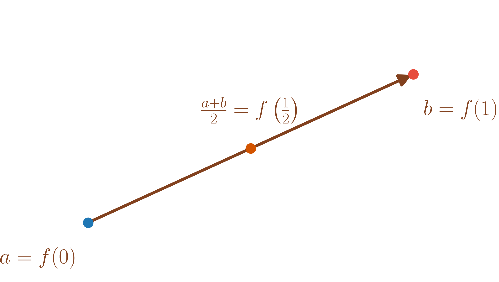
On considère \((E,\langle \cdot, \cdot \rangle)\) un plan euclidien, \((e_1,e_2)\) une base orthonormée de \(E\) ainsi que \(a \in E\) et \(r > 0.\)
Alors, la courbe paramétrée par \(\begin{array}{lllll} f & : & \mathbb{R} & \to & E \\ & & t & \mapsto & a + r \cos t e_1 + r \sin t e_2 \end{array}\) est cercle de centre a et de rayon r.
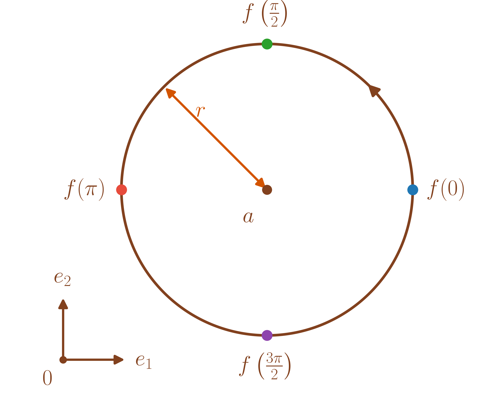
Soient \(I\) un intervalle de \(\mathbb{R},\) \(\begin{array}{lllll} f & : & I & \to & E \\ & & t & \mapsto & f(t) \end{array}\) et \(\mathscr{C}= f(I).\)
Soit \(t_0 \in I\) et \(m_0 = f(t_0),\) on dit que \(t_0\) est régulier pour \(f\) (ou le point \(m_0\) est régulier pour \(\mathscr{C}\)) si \(f'(t_0)\) (\(=\underset{h \to 0}{\lim}\text{ }\frac{f(t_0+h)-f(t_0)}{h}\)) existe et vérifie \(f'(t_0) \neq 0.\)
Dans ce cas, on appelle tangente à la courbe \(\mathscr{C}\) au point \(m_0\) la droite affine \(m_0 +\mathop{\mathrm{Vect}}(f'(t_0)).\)
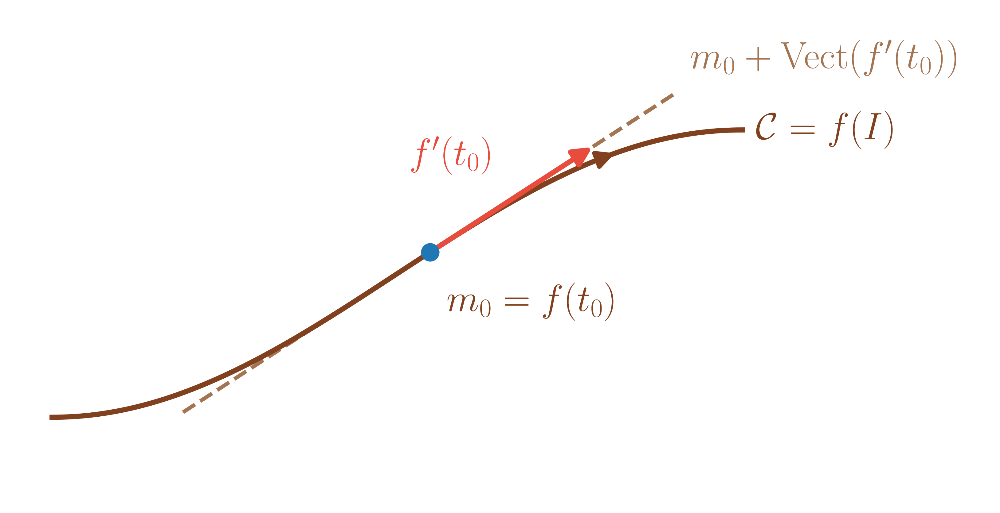
Pour \(h \neq 0\) tel que \(f(t_0+h) \neq f(t_0),\) \(f(t_0+h)-f(t_0)\) dirige la droite passant par \(f(t_0+h)\) et \(f(t_0)\) donc \(\frac{f(t_0+h)-f(t_0)}{h}.\)
En faisant \(h \xrightarrow{} 0,\) on obtient donc une droite tangente en \(f(t_0).\)
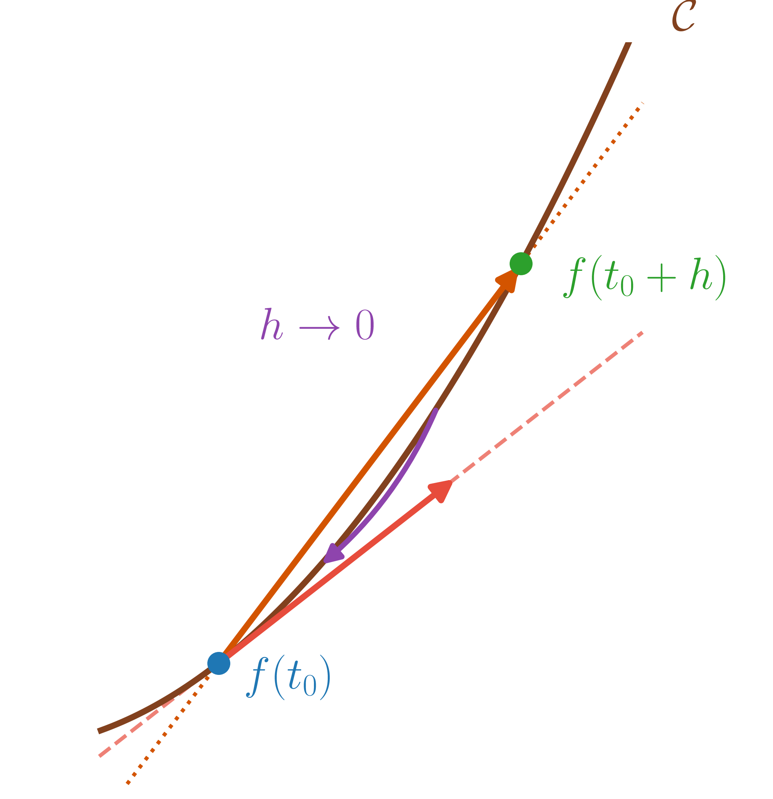
On considère \((E,\langle \cdot, \cdot \rangle)\) un plan euclidien, \((e_1,e_2)\) une base orthonormée de \(E\) ainsi que \(a \in E\) et \(r > 0.\)
Alors, pour tout \(t \in \mathbb{R}, f'(t) = -r\sin t e_1+r\cos t e_2\) qui est non nul (car \(\left\|f'(t)\right\| = r\)).
Donc pour tout \(t_0 \in \mathbb{R},\) le point \(m_0 = f(t_0)\) de la courbe \(\mathscr{C}= f(\mathbb{R})\) admet une tangente dirigé par \(f'(t_0).\)
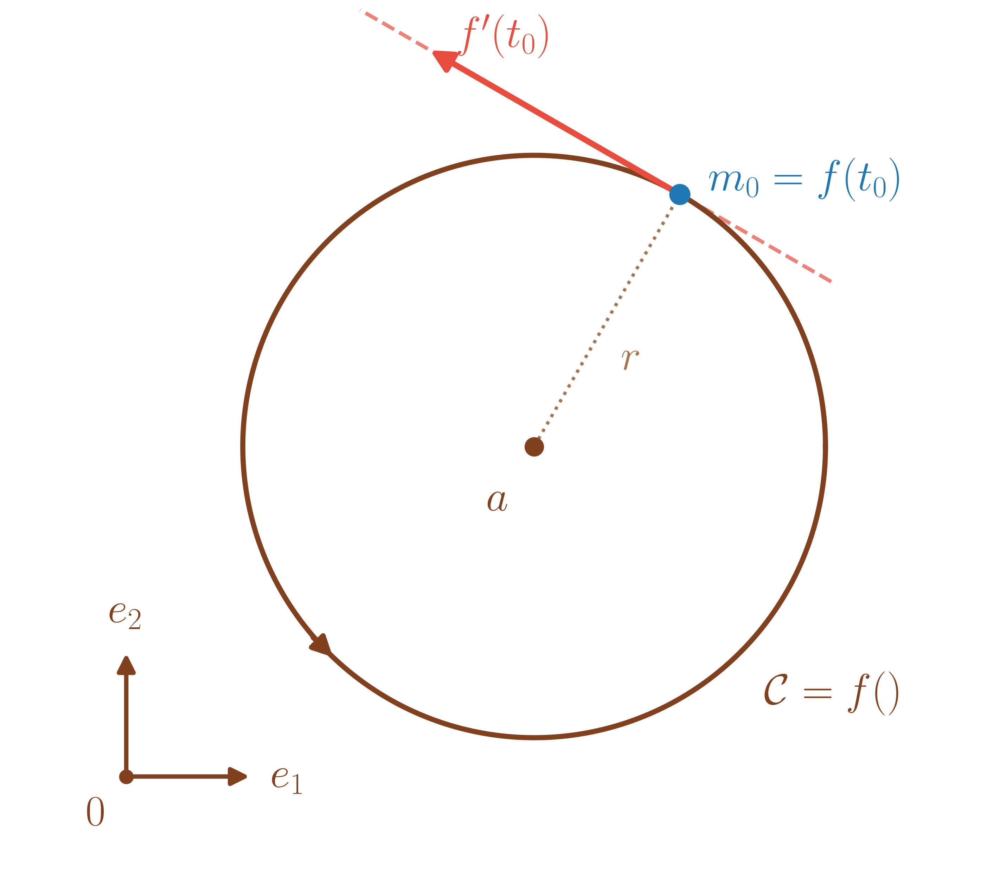
Soient \(I\) un intervalle de \(\mathbb{R},\) \(\begin{array}{lllll} f & : & I & \to & E \\ & & t & \mapsto & f(t) \end{array}\) et \(\mathscr{C}= f(I).\)
Soient \(t_0 \in I\) et \(m_0 = f(t_0)\) un point régulier de \(\mathscr{C}.\)
Si \(\dim E = 2,\) on appelle normale à la courbe \(\mathscr{C}\) au point \(m_0\) la droite affine \(m_0 +\mathop{\mathrm{Vect}}(f'(t_0))^\perp\) ie la droite affine passant par \(m_0\) et orthogonale à la tangente.
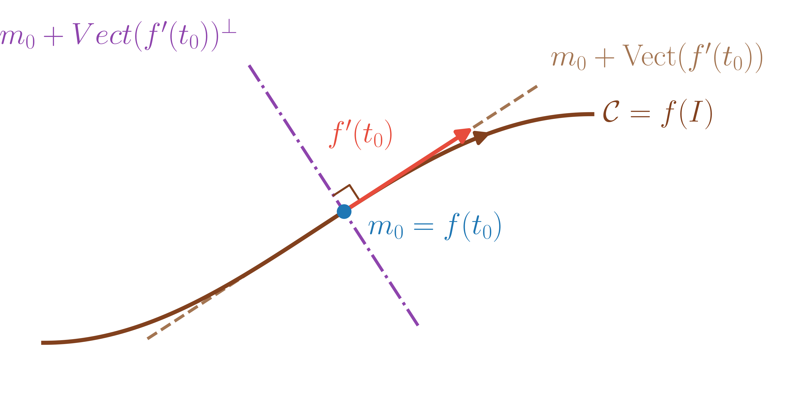
Si \(f\) est de classe \(\mathscr{C}^2,\) \(t\) représente le temps tandis que \(f\) représente la position au temps \(t,\) \(f'(t)\) le vecteur vitesse et \(f''(t)\) le vecteur accélération.
Soit \((E,\langle \cdot, \cdot \rangle)\) euclidien alors \[\begin{aligned} & \text{la distance du point à l'origine est constante} \\ & \iff t \in I \mapsto \left\|f(t)\right\| \text{ est constante} \\ & \iff t \in I \mapsto \left\|f(t)\right\|^2 \text{ est constante} \\ & \iff \text{la dérivée de } t \in I \mapsto \left\|f(t)\right\|^2 = \langle f(t),f(t) \rangle \text{ est nulle} \\ & \iff \forall t \in I, 2\langle f'(t),f(t)\rangle = 0 \\ & \iff \forall t \in I, \langle f'(t),f(t)\rangle = 0 \text{ ie }f(t) \perp f'(t). \end{aligned}\]
Dans ce cas, le point mobile reste à distance constante de l’origine : sa trajectoire est donc contenue dans une sphère, centrée à l’origine. Le vecteur vitesse est alors orthogonal au vecteur position : il est tangent à la sphère.
\[\begin{aligned} &\text{la vitesse est constante} \\ & \iff t \in I \mapsto \left\|f'(t)\right\| \text{ est constante} \\ & \iff t \in I \mapsto \left\|f'(t)\right\|^2 \text{ est constante} \\ & \iff \text{la dérivée de } t \in I \mapsto \left\|f'(t)\right\|^2 = \langle f(t),f(t) \rangle \text{ est nulle} \\ & \iff \forall t \in I, 2\langle f''(t),f'(t)\rangle = 0 \\ & \iff \forall t \in I, \langle f''(t),f'(t)\rangle = 0 \text{ ie }f'(t) \perp f''(t). \end{aligned}\]
Dans ce cas, le vecteur accélération est orthogonal au vecteur vitesse. Ainsi, l’accélération ne modifie pas la norme de la vitesse, mais uniquement sa direction. Le mouvement peut donc être curviligne, même si la vitesse est constante (par exemple, un mouvement circulaire uniforme).
En revanche, \[\begin{aligned} &\text{le vecteur vitesse est constant} \\ & \iff \text{il existe $\alpha \in E$ tel que pour tout $t \in I, f'(t) = \alpha$} \\ & \iff \text{il existe $\alpha, \beta \in E$ tel que pour tout $t \in I, f(t) = \alpha t+\beta.$} \\ \end{aligned}\] Dans ce cas, le vecteur vitesse garde à la fois une norme et une direction constantes. Le mobile suit donc une trajectoire rectiligne à vitesse constante (mouvement rectiligne uniforme). Sa position évolue affinement avec le temps.
Soient \(I\) un intervalle de \(\mathbb{R},\) \(\begin{array}{lllll} A & : & I & \to & \mathscr{M}_{n}(\mathbb{K}) \\ & & t & \mapsto & A(t) = (a_{ij}(t)) \end{array}\) et \(\begin{array}{lllll} b & : & I & \to & \mathbb{K}^n \\ & & t & \mapsto & b(t) = \begin{pmatrix} b_1(t) \\ \vdots \\ b_n(t) \end{pmatrix} \end{array}\) continues.
Un système linéaire différentiel d’ordre \(1\) consiste à rechercher une fonction inconnue \(\begin{array}{lllll} x & : & I & \to & \mathbb{K}^n \\ & & t & \mapsto & x(t) = \begin{pmatrix} x_1(t) \\ \vdots \\ x_n(t) \end{pmatrix} \end{array}\) telle que
\[\begin{aligned} & \forall t \in I, x'(t) = A(t)x(t)+b(t)\\ \text{ ie }& \forall t \in I, \left\{ \begin{array}{lllll} x_1'(t) & = a_{11}(t)x_1(t)& + \ldots & + a_{1n}(t)x_n(t)& +b_1(t)\\ \vdots &&&&\\ x_n'(t) & = a_{n1}(t)x_1(t)& + \ldots & + a_{nn}(t)x_n(t)& +b_n(t). \end{array} \right. \end{aligned}\]
On le note alors (un peu abusivement) \[\label{eq:systeme_lin_ordre_un} \tag{$S_1$} x' = A(t)x+b(t).\]
\(b\) est appelé le second membre du système \(\eqref{eq:systeme_lin_ordre_un}\).
Si \(b = 0,\) on dit que le système \(\eqref{eq:systeme_lin_ordre_un}\)est homogène.
Le système différentiel homogène linéaire d’ordre \(1\) \[\label{eq:systeme_lin_ordre_un_homo} \tag{$H_{\text{\ref{eq:systeme_lin_ordre_un}}}$} x' = A(t)x.\] est appelé le système différentiel homogène associé à \(\eqref{eq:systeme_lin_ordre_un}\).
Soit \(J \subset I\) un intervalle. On appelle solution sur \(J\) du système \(\eqref{eq:systeme_lin_ordre_un}\)toute fonction \(\begin{array}{lllll} \varphi & : & J & \to & \mathbb{K}^n \\ & & t & \mapsto & \varphi(t) \end{array}\) telle que \[\forall t \in J, \varphi'(t) = A(t)\varphi(t)+b(t)\]
L’arc paramétré \(\mathscr{C}= \varphi(J)\) est appelé la trajectoire de \(\varphi.\)
\(\begin{array}{lllll} \varphi & : & \mathbb{R} & \to & \mathbb{R}^2 \\ & & t & \mapsto & \begin{pmatrix} \cos t^2 \\ \sin t^2 \end{pmatrix} \end{array}\) vérifie \[\forall t \in \mathbb{R}, \varphi'(t) = \begin{pmatrix} -2t\sin t^2 \\ 2t\cos t^2 \end{pmatrix} = \begin{pmatrix} 0 & -2t \\ 2t & 0 \end{pmatrix}\begin{pmatrix} \cos t^2 \\ \sin t^2 \end{pmatrix} \begin{pmatrix} 0 & -2t \\ 2t & 0 \end{pmatrix}\varphi(t).\]
\(\varphi\) est donc solution sur \(\mathbb{R}\) du système homogène \[x' = A(t)x\] avec \(\begin{array}{lllll} A & : & \mathbb{R} & \to & \mathscr{M}_{2}(\mathbb{R}) \\ & & t & \mapsto & \begin{pmatrix} 0 & -2t \\ 2t & 0 \end{pmatrix} \end{array} .\)
\(\begin{array}{lllll} \varphi & : & \mathbb{R} & \to & \mathbb{R}^2 \\ & & t & \mapsto & \begin{pmatrix} t \cos t \\ t \sin t \end{pmatrix} \end{array}\) vérifie pour tout \(t \in \mathbb{R},\) \[\varphi'(t) = \begin{pmatrix} -t\sin t + \cos t \\ t \cos t + \sin t \end{pmatrix} = \begin{pmatrix} 0 & -1 \\ 1 & 0 \end{pmatrix}\begin{pmatrix} t \cos t \\ t \sin t \end{pmatrix}+\begin{pmatrix} \cos t \\ \sin t \end{pmatrix} = \begin{pmatrix} 0 & -1 \\ 1 & 0 \end{pmatrix}\varphi(t)+\begin{pmatrix} \cos t \\ \sin t \end{pmatrix}.\]
\(\varphi\) est donc solution sur \(\mathbb{R}\) du système \[x' = A(t)x+b(t)\] avec \(\begin{array}{lllll} A & : & \mathbb{R} & \to & \mathscr{M}_{2}(\mathbb{R}) \\ & & t & \mapsto & \begin{pmatrix} 0 & -1 \\ 1 & 0 \end{pmatrix} \end{array}\) et \(\begin{array}{lllll} b & : & \mathbb{R} & \to & \mathbb{R}^2 \\ & & t & \mapsto & \begin{pmatrix} \cos t \\ \sin t \end{pmatrix} \end{array} .\)
Si \(\varphi\) est solution du système \(\eqref{eq:systeme_lin_ordre_un}\)sur \(J,\) pour tout \(t_0 \in I\) tel que \(\varphi'(t_0) = A\varphi(t_0)+b(t_0) \neq 0,\) \(A\varphi(t_0)+b(t_0)\) dirige la tangente à la trajectoire \(\mathscr{C}= \varphi(J)\) en \(m_0 = \varphi(t_0).\)
(Problème de Cauchy) On reprend le système linéaire \(\eqref{eq:systeme_lin_ordre_un}\). Soit \(t_0 \in I\) et \(c_0 \in \mathbb{K}^n,\) \[\label{eq:probleme_Cauch_syst_line} \tag{$P_{\text{\ref{eq:systeme_lin_ordre_un}},t_0,c_0}$} \left\{ \begin{array}{ll} x' & = A(t)x + b(t) \\ x(t_0) & = c_0 \end{array} \right.\] est appelé un problème de Cauchy.
Si \(J \subset I\) est un intervalle de \(\mathbb{R}\) et \(t_0 \in J\) alors une solution de ce problème de Cauchy sur \(J\) est une fonction \(\varphi\) telle que \(\left\{ \begin{array}{ll} \forall t \in J, \varphi'(t) & = A(t)\varphi(t) + b(t) \\ \varphi(t_0) & = c_0 \end{array} \right..\)
(Généralisation des définitions [def:syst_line_Kn] et [def:Cauchy_probleme_syst_line_Kn] ) Soient \(I\) un intervalle de \(\mathbb{R},\) \(\begin{array}{lllll} a & : & I & \to & \mathscr{L}(E) \\ & & t & \mapsto & a(t) \end{array}\) et \(\begin{array}{lllll} b & : & I & \to & E \\ & & t & \mapsto & b(t) \end{array}\) continues.
Une équation différentielle vectorielle linéaire d’ordre \(1\) consiste à rechercher une fonction inconnue \(\begin{array}{lllll} x & : & I & \to & E \\ & & t & \mapsto & x(t) \end{array}\) telle que
\[\forall t \in I, x'(t) = a(t)(x(t))+b(t)\]
On le note alors (un peu abusivement) \[\label{eq:systeme_lin_ordre_un_E_quelconque} \tag{$E_1$} x' = a(t)(x)+b(t).\]
\(b\) est appelé le second membre de l’équation \(\eqref{eq:systeme_lin_ordre_un_E_quelconque}\).
Si \(b = 0,\) on dit que l’équation \(\eqref{eq:systeme_lin_ordre_un_E_quelconque}\)est homogène.
L’équation différentielle homogène vectorielle linéaire d’ordre \(1\) \[\label{eq:systeme_lin_ordre_un_E_quelconque_homo} \tag{$H_{\text{\ref{eq:systeme_lin_ordre_un_E_quelconque}}}$} x' = a(t)(x).\] est appelé l’équation différentielle homogène vectorielle associée à \(\eqref{eq:systeme_lin_ordre_un_E_quelconque}\).
Soit \(J \subset I\) un intervalle. On appelle solution sur \(J\) de l’équation \(\eqref{eq:systeme_lin_ordre_un_E_quelconque}\)toute fonction \(\begin{array}{lllll} \varphi & : & J & \to & E \\ & & t & \mapsto & \varphi(t) \end{array}\) telle que \[\forall t \in J, \varphi'(t) = a(t)(\varphi(t))+b(t)\]
L’arc paramétré \(\mathscr{C}= \varphi(J)\) est appelé la trajectoire de \(\varphi.\)
Soit \(t_0 \in I\) et \(c_0 \in E,\) \[\label{eq:probleme_Cauch_syst_line_E_quelconque} \tag{$P_{\text{\ref{eq:systeme_lin_ordre_un_E_quelconque}},t_0,c_0}$} \left\{ \begin{array}{ll} x' & = a(t)(x) + b(t) \\ x(t_0) & = c_0 \end{array} \right.\] est appelé un problème de Cauchy.
Si \(J \subset I\) est un intervalle de \(\mathbb{R}\) et \(t_0 \in J\) alors une solution de ce problème de Cauchy sur \(J\) est une fonction \(\varphi\) telle que \(\left\{ \begin{array}{ll} \forall t \in J, \varphi'(t) & = a(t)(\varphi(t)) + b(t) \\ \varphi(t_0) & = c_0 \end{array} \right..\)
Le système \(\eqref{eq:systeme_lin_ordre_un}\)est un cas particulier d’équation différentielle vectorielle linéaire d’ordre \(1\) en considérant \(E = \mathbb{K}^n\) et \(\begin{array}{lllll} a & : & I & \to & \mathscr{L}(E) \\ & & t & \mapsto & \widehat{A(t)} \end{array}\) (où \(\widehat{A}\) est l’endomorphisme canoniquement associé à \(A,\) voir le cours de révisions d’algèbre linéaire).
Réciproquement, on peut construire un système différentiel linéaire d’ordre 1 à partir de l’équation \(\eqref{eq:systeme_lin_ordre_un_E_quelconque}\).
En considérant une base \(\mathscr{B}\) de \(E,\) \(\varphi: I \to E\) et en écrivant pour \(t \in I,\) \(\left\{ \begin{array}{lll} & A(t) & = \mathscr{M}_{\mathscr{B}}(a(t)) \in \mathscr{M}_{n}(\mathbb{K}), \\ & B(t) \in \mathbb{K}^n, & \text{ la colonne des cordonnées de $b(t)$ dans $\mathscr{B},$} \\ \text{ et }&\Phi(t) \in \mathbb{K}^n, & \text{ la colonne des cordonnées de $\varphi(t)$ dans $\mathscr{B}$} \\ \text{donc } &\Phi'(t) \in \mathbb{K}^n, & \text{ la colonne des cordonnées de $\varphi'(t)$ dans $\mathscr{B}.$} \end{array} \right.\)
alors soit \(J \subset I\) un intervalle, \[\begin{aligned} & \varphi \text{ solution de$\eqref{eq:systeme_lin_ordre_un_E_quelconque}$: $x'= a(t)(x)+b(t)$ sur $J$} \\ \iff &\forall t \in J, \Phi'(t) = A(t)\Phi(t)+B(t) \\ \iff &\Phi \text{ solution du système $(S_{\text{$\eqref{eq:systeme_lin_ordre_un_E_quelconque}$}})$: $X'= A(t)X+B(t)$ sur $J$} \\ \end{aligned}\]
On note \(\mathcal{S}_{\text{\ref{eq:systeme_lin_ordre_un_E_quelconque}}} = \left\{\varphi: I \to E \text{ solution de~$\eqref{eq:systeme_lin_ordre_un_E_quelconque}$sur } I\right\}\)
et \(\mathcal{S}_{\text{\ref{eq:systeme_lin_ordre_un_E_quelconque_homo}}} = \left\{\varphi: I \to E \text{ solution de~$\eqref{eq:systeme_lin_ordre_un_E_quelconque_homo}$sur } I\right\}.\)
(Superposition de solutions) On considère une deuxième équation différentielle linéaire d’ordre 1 qui s’écrit \[\label{eq:systeme_lin_ordre_un_E_quelconque_2} \tag{$E_2$} x' = a(t)(x)+c(t).\] avec \(c: I \to E\) continue.
Soient \(\varphi_1,\varphi_2\) telles que \(\varphi_1\) est solution de \(\eqref{eq:systeme_lin_ordre_un_E_quelconque}\)sur \(I\) et \(\varphi_2\) est solution de \(\eqref{eq:systeme_lin_ordre_un_E_quelconque_2}\)sur \(I.\)
Alors, soient \(\lambda,\mu \in K,\) \(\lambda \varphi_1+\mu \varphi_2\) est solution de \(x'=a(t)(x) + \lambda b(t)+ \mu b_1(t).\)
Comme combinaison linéaire de fonctions dérivables sur \(I,\) \(\lambda \varphi_1+\mu \varphi_2\) est dérivable sur \(I\) et pour tout \(t \in I,\) \[\begin{aligned} \left(\lambda \varphi_1+\mu \varphi_2\right)'(t) & = \lambda \varphi_1'(t) + \mu \varphi_2'(t) \\ & = \lambda \left(a(t) \varphi_1(t) +b(t)\right)+\mu \left(a(t) \varphi_2(t) +c(t)\right) \\ & = a(t)\left(\lambda \varphi_1(t) + \mu \varphi_2(t)\right) + \lambda b(t) + \mu c(t). \end{aligned}\]
\(\mathcal{S}_{\text{\ref{eq:systeme_lin_ordre_un_E_quelconque}}} \subset \mathscr{C}^1(I,E),\)
\(\mathcal{S}_{\text{\ref{eq:systeme_lin_ordre_un_E_quelconque_homo}}}\) est un sous-espace vectoriel de \(\mathscr{C}^1(I,E),\)
Si \(\varphi_0 \in \mathcal{S}_{\text{\ref{eq:systeme_lin_ordre_un_E_quelconque}}}\) alors \(\mathcal{S}_{\text{\ref{eq:systeme_lin_ordre_un_E_quelconque}}} = \varphi_0+\mathcal{S}_{\text{\ref{eq:systeme_lin_ordre_un_E_quelconque_homo}}}.\)
Soit \(\varphi \in \mathcal{S}_{\text{\ref{eq:systeme_lin_ordre_un_E_quelconque}}}\) alors \(\varphi\) est dérivable sur \(I\) avec pour tout \(t \in I,\) \(\varphi'(t) = a(t)(\varphi(t))+b(t).\)
De plus,
\(t \in I \mapsto \varphi(t)\) est continue car dérivable,
\(t \in I \mapsto a(t)\) est continue par hypothèse,
\(\begin{array}{llll} & \mathscr{L}(E)\times E & \to & E \\ & (u,h) & \mapsto & u(h) \end{array}\) est continue car bilinéaire et \(E\) est de dimension finie.
Donc par composition, \(t \in I \mapsto a(t)(\varphi(t))\) est continue.
Enfin, \(b\) est continue sur \(I\) par hypothèse donc \(\varphi'\) est continue sur \(I\) et \(\varphi \in \mathscr{C}^1(I,E).\)
\(\eqref{eq:systeme_lin_ordre_un_E_quelconque_homo}\) est un cas particulier de \(\eqref{eq:systeme_lin_ordre_un_E_quelconque}\) donc par ce qui précède, \(\mathcal{S}_{\text{\ref{eq:systeme_lin_ordre_un_E_quelconque_homo}}} \subset \mathscr{C}^1(I,E).\)
De plus,
On a clairement \(0 \in \mathcal{S}_{\text{\ref{eq:systeme_lin_ordre_un_E_quelconque_homo}}}\) (la fonctionne nulle).
Soient \(\lambda, \mu \in \mathbb{K}\) et \(\psi_1,\psi_2 \in \mathcal{S}_{\text{\ref{eq:systeme_lin_ordre_un_E_quelconque_homo}}}\) on a \(\lambda \psi_1+\mu \psi_2 \in \mathcal{S}_{\text{\ref{eq:systeme_lin_ordre_un_E_quelconque_homo}}}\) par la proposition [prop:superposition].
Donc \(\mathcal{S}_{\text{\ref{eq:systeme_lin_ordre_un_E_quelconque_homo}}}\) est un sous-espace vectoriel de \(\mathscr{C}^1(I,E).\)
Montrons \(\mathcal{S}_{\text{\ref{eq:systeme_lin_ordre_un_E_quelconque}}} = \varphi_0+\mathcal{S}_{\text{\ref{eq:systeme_lin_ordre_un_E_quelconque_homo}}}.\) par double inclusion.
\(\mathcal{S}_{\text{\ref{eq:systeme_lin_ordre_un_E_quelconque}}} \supset \varphi_0+\mathcal{S}_{\text{\ref{eq:systeme_lin_ordre_un_E_quelconque_homo}}}.\)
Soit \(\psi \in \mathcal{S}_{\text{\ref{eq:systeme_lin_ordre_un_E_quelconque_homo}}}\) alors \(\varphi_0+\psi \in \mathcal{S}_{\text{\ref{eq:systeme_lin_ordre_un_E_quelconque}}}\) par la proposition [prop:superposition].
\(\mathcal{S}_{\text{\ref{eq:systeme_lin_ordre_un_E_quelconque}}} \subset \varphi_0+\mathcal{S}_{\text{\ref{eq:systeme_lin_ordre_un_E_quelconque_homo}}}.\)
Soit \(\varphi \in \mathcal{S}_{\text{\ref{eq:systeme_lin_ordre_un_E_quelconque}}}\) alors \(\varphi-\varphi_0 \in \mathcal{S}_{\text{\ref{eq:systeme_lin_ordre_un_E_quelconque_homo}}}\) par la proposition [prop:superposition]
donc \(\varphi = \varphi_0+\varphi-\varphi_0 \in \varphi_0+\mathcal{S}_{\text{\ref{eq:systeme_lin_ordre_un_E_quelconque_homo}}}.\)
(Théorème de Cauchy linéaire) Soient \(t_0 \in I\) et \(c_0 \in E,\) le problème de Cauchy \(\eqref{eq:probleme_Cauch_syst_line_E_quelconque}\)admet une unique solution sur \(I.\)
Autrement dit, \[\begin{array}{ll} & \text{Il existe une unique solution $\varphi \in \mathcal{S}_{\text{\ref{eq:systeme_lin_ordre_un_E_quelconque}}}$ telle que $\varphi(t_0) = c_0$} \\ \text{ ie }& \text{Il existe une unique fonction $\varphi:I \to E$ telle que $ \left\{ \begin{array}{l} \forall t \in I, \varphi'(t) = a(t)(\varphi(t))+b(t) \\ \text{ et }\varphi(t_0) = c_0. \end{array} \right.$} \end{array}\]
On commence par établir un lemme qui permet de reformuler le problème de Cauchy sous la forme d’une équation intégrale.
Soit \(\varphi:I \to E.\) \[\varphi \text{ est solution de~$\eqref{eq:probleme_Cauch_syst_line_E_quelconque}$sur $I$} \iff \left\{\begin{array}{l} \varphi \text{ est continue} \\ \text{ et }\forall t \in I, \varphi(t) = c_0 + \int_{t_0}^t a(u)(\varphi(u))+b(u)du. \end{array}\right.\]
\((\Longrightarrow)\) Si \(\varphi\) est solution de \(\eqref{eq:probleme_Cauch_syst_line_E_quelconque}\)sur \(I,\) alors \(\varphi\) est dérivable donc continue.
De plus, pour tout \(t \in I,\) \[\begin{aligned} \varphi(t) &= \varphi(t_0)+\int_{t_0}^t \varphi'(u)du \\ &= c_0 + \int_{t_0}^t a(u)(\varphi(u))+b(u)du. \end{aligned}\]
\((\Longleftarrow)\) Supposons que \(\varphi\) soit continue et que, pour tout \(t \in I,\) \[\varphi(t) = c_0 + \int_{t_0}^t a(u)(\varphi(u))+b(u)du.\] Alors :
En prenant \(t=t_0,\) on obtient \(\varphi(t_0)=c_0.\)
La fonction \(u \in I \mapsto a(u)(\varphi(u))+b(u)\) est continue par composition (voir la preuve de la proposition [prop:ensembles_de_solutions]).
Ainsi, la fonction \[t \in I \mapsto \int_{t_0}^t a(u)(\varphi(u))+b(u)du\] est de classe \(\mathscr{C}^1,\) de dérivée \(t \mapsto a(t)(\varphi(t))+b(t).\) On en déduit que \(\varphi\) est de classe \(\mathscr{C}^1\) et que, pour tout \(t \in I,\) \[\varphi'(t) = a(t)(\varphi(t))+b(t).\]
Donc \(\varphi\) est solution de \(\eqref{eq:probleme_Cauch_syst_line_E_quelconque}\)sur \(I.\)
Le lemme précédent permet de ramener la recherche d’une solution du problème de Cauchy à la recherche d’un point fixe.
En effet, soit \(\varphi \in \mathscr{C}(I,E).\) On note \[\begin{array}{lllll} \Gamma_\varphi & : & I & \to & E \\ & & t & \mapsto & c_0 + \int_{t_0}^t a(u)(\varphi(u))+b(u)du \end{array} .\] Le lemme s’écrit alors \[\varphi \text{ est solution de~$\eqref{eq:probleme_Cauch_syst_line_E_quelconque}$sur $I$} \iff \varphi = \Gamma_\varphi.\]
On va donc montrer que l’application \[\begin{array}{lllll} \Gamma & : & \mathscr{C}(I,E) & \to & \mathscr{C}(I,E) \\ & & \varphi & \mapsto & \Gamma_\varphi \end{array}\] admet un unique point fixe.
On considère une norme \(\left\|\cdot\right\|\) sur \(E.\)
\(\Gamma\) admet un point fixe.
Pour montrer l’existence d’un point fixe, on construit une suite de fonctions par itération de \(\Gamma.\)
Soit \(\varphi_0 \in \mathscr{C}(I,E)\) et soit \(\left(\varphi_n\right)_{n \geq 0}\) la suite de fonctions de \(\mathscr{C}(I,E)\) définie par \[\forall n \in \mathbb{N}, \quad \varphi_{n+1} = \Gamma_{\varphi_n}.\] On va montrer que cette suite converge uniformément sur tout segment de \(I,\) puis que sa limite est un point fixe de \(\Gamma.\)
Soit \([a,b] \subset I.\) Pour montrer que \(\left(\varphi_n\right)_{n \geq 0}\) converge uniformément sur \([a,b],\) il suffit de montrer que la série de fonctions \[\sum_{n \geq 0} (\varphi_{n+1}-\varphi_n)\] converge normalement sur \([a,b]\) (voir le cours sur les suites et séries de fonctions).
Pour cela, on cherche à majorer les différences successives. Par définition de la suite, pour tout \(n \in \mathbb{N},\) \[\begin{aligned} \left\|\varphi_{n+1}-\varphi_n\right\|_{\infty,[a,b]} &= \left\|\Gamma_{\varphi_n}-\Gamma_{\varphi_{n-1}}\right\|_{\infty,[a,b]} \\ &= \left\|\Gamma^2_{\varphi_{n-1}}-\Gamma^2_{\varphi_{n-2}}\right\|_{\infty,[a,b]} \\ &\vdots \\ &= \left\|\Gamma^n_{\varphi_1}-\Gamma^n_{\varphi_0}\right\|_{\infty,[a,b]}. \end{aligned}\]
Il suffit donc d’obtenir une majoration des itérées de \(\Gamma.\)
Soient \(\varphi,\psi \in \mathscr{C}(I,E)\) et \(t \in I.\) On a \[\begin{aligned} \left\|\Gamma_\varphi(t)-\Gamma_\psi(t)\right\| &= \left\|\int_{t_0}^t a(u)(\varphi(u)-\psi(u))du\right\| \\ &\leq \int_{\min(t_0,t)}^{\max(t_0,t)} \left|\!\left|\!\left|a(u)\right|\!\right|\!\right| \left\|\varphi(u)-\psi(u)\right\|du \end{aligned}\] avec \(\left|\!\left|\!\left|a(u)\right|\!\right|\!\right| = \sup_{x \in E \setminus \left\{0\right\}} \frac{\left\|a(u)(x)\right\|}{\left\|x\right\|}\) (voir le cours sur les espaces vectoriels normés).
Or, la fonction \(u \in [a,b] \mapsto \left|\!\left|\!\left|a(u)\right|\!\right|\!\right|\) est continue (par composition de \(f \in \mathscr{L}(E) \mapsto \left|\!\left|\!\left|f\right|\!\right|\!\right|\) et de \(u \in [a,b] \mapsto a(u)\)). Comme \([a,b]\) est un compact, on peut poser \[k = \sup_{u \in [a,b]} \left|\!\left|\!\left|a(u)\right|\!\right|\!\right| < +\infty.\]
La majoration précédente devient donc \[\begin{aligned} \left\|\Gamma_\varphi(t)-\Gamma_\psi(t)\right\| &\leq \int_{\min(t_0,t)}^{\max(t_0,t)} k \underbrace{\left\|\varphi-\psi\right\|_{\infty,[a,b]}}_{<+\infty \text{ car $\varphi-\psi$ est continue sur $[a,b]$}} du \\ &= \left|t-t_0\right| k \left\|\varphi-\psi\right\|_{\infty,[a,b]}. \end{aligned}\]
On obtient ainsi une première majoration de la différence entre les images de deux fonctions par \(\Gamma.\) On va maintenant itérer ce raisonnement afin d’obtenir une majoration faisant intervenir une factorielle au dénominateur.
En appliquant la même méthode à \(\Gamma^2,\) pour \(t \in [a,b],\) on obtient \[\begin{aligned} \left\|\Gamma^2_\varphi(t)-\Gamma^2_\psi(t)\right\| &= \left\|\int_{t_0}^t a(u)(\Gamma_\varphi(u)-\Gamma_\psi(u))du\right\| \\ &\leq \int_{\min(t_0,t)}^{\max(t_0,t)} \left|\!\left|\!\left|a(u)\right|\!\right|\!\right| \left\|\Gamma_\varphi(u)-\Gamma_\psi(u)\right\|du \\ &\leq \int_{\min(t_0,t)}^{\max(t_0,t)} \left|u-t_0\right| k^2 \left\|\varphi-\psi\right\|_{\infty,[a,b]}du \\ &= k^2 \left\|\varphi-\psi\right\|_{\infty,[a,b]} \int_{\min(t_0,t)}^{\max(t_0,t)} \left|u-t_0\right|du \\ &= k^2 \left\|\varphi-\psi\right\|_{\infty,[a,b]} \left\{ \begin{array}{ll} \int_{t_0}^{t} \left(u-t_0\right)du & \mbox{si $t_0 \leq t$} \\ \int_{t}^{t_0} \left(t_0-u\right)du & \mbox{si $t_0 > t$} \\ \end{array} \right. \\ &= k^2 \left\|\varphi-\psi\right\|_{\infty,[a,b]} \left\{ \begin{array}{ll} \left[\frac{(u-t_0)^2}{2}\right]_{t_0}^{t} & \mbox{si $t_0 \leq t$} \\ \left[\frac{(t_0-u)^2}{2}\right]_{t}^{t_0} & \mbox{si $t_0 > t$} \\ \end{array} \right. \\ &= k^2 \left\|\varphi-\psi\right\|_{\infty,[a,b]} \frac{(t-t_0)^2}{2}. \end{aligned}\]
On constate donc que chaque itération fait apparaître un facteur supplémentaire \(k\) ainsi qu’une intégration supplémentaire. On obtient ainsi, par récurrence sur \(n,\) que pour tout \(t \in [a,b],\) \[\left\|\Gamma^n_\varphi(t)-\Gamma^n_\psi(t)\right\| \leq k^n \left\|\varphi-\psi\right\|_{\infty,[a,b]}\frac{(t-t_0)^n}{n!}.\]
En notant \[M = \max(\left|b-t_0\right|,\left|t_0-a\right|),\] on en déduit que \[\left\|\Gamma^n_\varphi-\Gamma^n_\psi\right\|_{\infty,[a,b]} \leq k^n \left\|\varphi-\psi\right\|_{\infty,[a,b]}\frac{M^n}{n!}.\]
On peut maintenant revenir à la suite \(\left(\varphi_n\right)_{n \geq 0}.\) En appliquant cette inégalité à \(\varphi_1\) et \(\varphi_0,\) on obtient, pour tout \(n \in \mathbb{N},\) \[\left\|\varphi_{n+1}-\varphi_n\right\|_{\infty,[a,b]} \leq k^n \left\|\varphi_1-\varphi_0\right\|_{\infty,[a,b]}\frac{M^n}{n!}.\]
Or, \[\sum_{n=0}^{+\infty} k^n \left\|\varphi_1-\varphi_0\right\|_{\infty,[a,b]}\frac{M^n}{n!} = \left\|\varphi_1-\varphi_0\right\|_{\infty,[a,b]} e^{kM} < +\infty.\] Par comparaison, la série de fonctions \(\sum_{n \geq 0} (\varphi_{n+1}-\varphi_n)\) converge donc normalement sur \([a,b].\) Ainsi, \(\left(\varphi_n\right)_{n \geq 0}\) converge uniformément sur \([a,b]\) vers une limite que l’on note \(\varphi.\)
Il reste à montrer que cette limite est un point fixe de \(\Gamma.\)
Pour tout \(n \in \mathbb{N},\) en utilisant la première majoration obtenue, on a \[\begin{aligned} \left\|\varphi_{n+1}-\Gamma_\varphi\right\|_{\infty,[a,b]} &= \left\|\Gamma_{\varphi_n}-\Gamma_\varphi\right\|_{\infty,[a,b]} \\ &\leq kM \left\|\varphi_n-\varphi\right\|_{\infty,[a,b]}. \end{aligned}\]
Or, \(\varphi_n\) converge uniformément vers \(\varphi\) sur \([a,b],\) donc \(\left\|\varphi_n-\varphi\right\|_{\infty,[a,b]} \xrightarrow[n \to +\infty]{} 0.\) Ainsi, \(\varphi_{n+1}\) converge uniformément vers \(\Gamma_\varphi\) sur \([a,b].\) Mais \(\varphi_{n+1}\) converge également uniformément vers \(\varphi\) sur \([a,b].\) Par unicité de la limite, on obtient \[\varphi = \Gamma_\varphi.\] Donc \(\Gamma\) admet un point fixe.
\(\Gamma\) admet un unique point fixe.
Soit \(\psi\) un autre point fixe de \(\Gamma.\) Montrons que \(\psi=\varphi.\)
Comme \(\psi\) est un point fixe de \(\Gamma,\) elle est également un point fixe de toutes les itérées de \(\Gamma.\) En effet, \[\Gamma^n_\psi = \Gamma^{n-1}(\Gamma_\psi) = \Gamma^{n-1}_\psi = \ldots = \psi.\]
On peut donc appliquer la majoration obtenue précédemment aux deux points fixes \(\varphi\) et \(\psi.\) Pour tout \(n \in \mathbb{N},\) \[\begin{aligned} \left\|\varphi-\psi\right\|_{\infty,[a,b]} &= \left\|\Gamma^n_\varphi-\Gamma^n_\psi\right\|_{\infty,[a,b]} \\ &\leq k^n \left\|\varphi-\psi\right\|_{\infty,[a,b]}\frac{M^n}{n!} \xrightarrow[n \to +\infty]{} 0. \end{aligned}\] En faisant tendre \(n\) vers \(+\infty\) dans l’inégalité précédente, on obtient \(\left\|\varphi-\psi\right\|_{\infty,[a,b]}=0.\) Ainsi, \(\varphi=\psi\) sur \([a,b].\)
Comme le segment \([a,b]\) est quelconque, on en déduit que \(\varphi=\psi\) sur \(I.\) Le point fixe de \(\Gamma\) est donc unique.
Cela s’applique donc aussi à \(\eqref{eq:probleme_Cauch_syst_line}\).
Soit \(t_0 \in I,\)
\(\begin{array}{lllll} \gamma_{t_0} & : & \mathcal{S}_{\text{\ref{eq:systeme_lin_ordre_un_E_quelconque_homo}}} & \to & E \\ & & \psi & \mapsto & \psi(t_0) \end{array}\) est une bijection linéaire et donc \(\dim \mathcal{S}_{\text{\ref{eq:systeme_lin_ordre_un_E_quelconque_homo}}} = \dim E = n.\)
\(\begin{array}{llll} & \mathcal{S}_{\text{\ref{eq:systeme_lin_ordre_un_E_quelconque}}} & \to & E \\ & \varphi & \mapsto & \varphi(t_0) \end{array}\) est une bijection. En particulier, \(\mathcal{S}_{\text{\ref{eq:systeme_lin_ordre_un_E_quelconque}}} \neq \emptyset\) et est un espace affine de dimension \(n,\) dirigé par \(\mathcal{S}_{\text{\ref{eq:systeme_lin_ordre_un_E_quelconque_homo}}}.\)
Soit \(c_0 \in E,\) par théorème de Cauchy (linéaire), il existe
une unique fonction \(\psi \in \mathcal{S}_{\text{\ref{eq:systeme_lin_ordre_un_E_quelconque_homo}}}\) telle que \(\psi(t_0) = c_0,\)
une unique fonction \(\varphi \in \mathcal{S}_{\text{\ref{eq:systeme_lin_ordre_un_E_quelconque}}}\) telle que \(\varphi(t_0) = c_0.\)
Donc ces deux applications sont effectivement des bijections. D’une part, \(\gamma_{t_0}\) est clairement linéaire car \(\mathcal{S}_{\text{\ref{eq:systeme_lin_ordre_un_E_quelconque_homo}}}\) est un espace vectoriel par la proposition [prop:ensembles_de_solutions].
D’autre part, \(\mathcal{S}_{\text{\ref{eq:systeme_lin_ordre_un_E_quelconque}}} \neq \emptyset\) (car \(E \neq \emptyset\)) et par la proposition [prop:ensembles_de_solutions], soit \(\varphi_0 \in \mathcal{S}_{\text{\ref{eq:systeme_lin_ordre_un_E_quelconque}}},\) \(\mathcal{S}_{\text{\ref{eq:systeme_lin_ordre_un_E_quelconque}}} = \varphi_0+\mathcal{S}_{\text{\ref{eq:systeme_lin_ordre_un_E_quelconque_homo}}}\) donc c’est un espace affine de dimension \(n,\) dirigé par \(\mathcal{S}_{\text{\ref{eq:systeme_lin_ordre_un_E_quelconque_homo}}}.\)
Soient \(\varphi_1,\varphi_2 \in \mathcal{S}_{\text{\ref{eq:systeme_lin_ordre_un_E_quelconque}}}\) alors \[\exists t_0 \in I / \varphi_1(t_0) = \varphi_2(t_0) \Longrightarrow \varphi_1 = \varphi_2.\]
Cela vient directement du corollaire [cor:Cauchy_bijections_CI] qui donne que \(\begin{array}{llll} & \mathcal{S}_{\text{\ref{eq:systeme_lin_ordre_un_E_quelconque}}} & \to & E \\ & \varphi & \mapsto & \varphi(t_0) \end{array}\) est une bijection.
Soit \(J\) un sous-intervalle de \(I,\) on note \(\mathcal{S}^J_{\text{\ref{eq:systeme_lin_ordre_un_E_quelconque}}} = \left\{\varphi: I \to E \text{ solution de~$\eqref{eq:systeme_lin_ordre_un_E_quelconque}$sur } J\right\} .\)
Alors, \(\begin{array}{llll} & \mathcal{S}_{\text{\ref{eq:systeme_lin_ordre_un_E_quelconque}}} & \to & \mathcal{S}^J_{\text{\ref{eq:systeme_lin_ordre_un_E_quelconque}}} \\ & \varphi & \mapsto & \varphi_{\mid J} \end{array}\) est une bijection.
La fonction est surjective.
Soit \(\tilde{\varphi}\) une solution de \(\eqref{eq:systeme_lin_ordre_un_E_quelconque}\)sur \(J.\)
Fixons \(t_0 \in J\) et posons \(c_0 = \tilde{\varphi}(t_0) \in E.\) Par le théorème de Cauchy appliqué à l’équation sur \(I,\) il existe une unique solution \(\varphi \in \mathcal{S}_{\text{\ref{eq:systeme_lin_ordre_un_E_quelconque}}}\) sur \(I\) telle que \(\varphi(t_0) = c_0.\)
Par restriction, \(\varphi_{\mid J}\) est également une solution de \(\eqref{eq:systeme_lin_ordre_un_E_quelconque}\)sur \(J.\) De plus, \(\varphi_{\mid J}(t_0) = \tilde{\varphi}(t_0).\) Par unicité de la solution au problème de Cauchy sur \(J,\) on en déduit que \(\tilde{\varphi} = \varphi_{\mid J}.\)
Ainsi, toute solution sur \(J\) admet un antécédent par la fonction considérée, qui est donc surjective.
La fonction est injective.
Soient \(\varphi_1, \varphi_2 \in \mathcal{S}_{\text{\ref{eq:systeme_lin_ordre_un_E_quelconque}}}\) telles que \(\varphi_{1\mid J} = \varphi_{2\mid J}.\)
Fixons \(t_0 \in J.\) On a alors \(\varphi_1(t_0) = \varphi_2(t_0).\) Par unicité de la solution au problème de Cauchy, on obtient \(\varphi_1 = \varphi_2.\)
Ainsi, la fonction considérée est injective.
Soit \(\psi \in \mathcal{S}_{\text{\ref{eq:systeme_lin_ordre_un_E_quelconque_homo}}},\) \[\exists t_0 \in I / \psi(t_0) = 0 \Longrightarrow \psi = 0.\]
Soient \((\psi_1,\ldots,\psi_k)\) une famille de \(\mathcal{S}_{\text{\ref{eq:systeme_lin_ordre_un_E_quelconque_homo}}}\) et \(t_0 \in I\) alors
\(\mathop{\mathrm{rg}}(\psi_1,\ldots,\psi_k) = \mathop{\mathrm{rg}}(\psi_1(t_0),\ldots,\psi_k(t_0)),\)
\((\psi_1,\ldots,\psi_k)\) libre \(\iff\) \((\psi_1(t_0),\ldots,\psi_k(t_0))\) libre.
\((\psi_1,\ldots,\psi_k)\) génère \(\mathcal{S}_{\text{\ref{eq:systeme_lin_ordre_un_E_quelconque_homo}}}\) \(\iff\) \((\psi_1(t_0),\ldots,\psi_k(t_0))\) génère \(E.\)
Cela vient directement du corollaire [cor:Cauchy_bijections_CI] qui donne que \(\begin{array}{lllll} \gamma_{t_0} & : & \mathcal{S}_{\text{\ref{eq:systeme_lin_ordre_un_E_quelconque_homo}}} & \to & E \\ & & \varphi & \mapsto & \varphi(t_0) \end{array}\) est une bijection linéaire.
Soient \((\psi_1,\ldots,\psi_n)\) une famille de \(\mathcal{S}_{\text{\ref{eq:systeme_lin_ordre_un_E_quelconque_homo}}}\) et \(\mathscr{B}\) une base de \(E.\)
Pour \(t \in I,\) on pose \[W(t) = \mathscr{M}_{\mathscr{B}}(\psi_1(t),\ldots,\psi_n(t)).\] alors, \(W\) est appelé la matrice wronskienne de \((\psi_1,\ldots,\psi_n)\) relativement à \(\mathscr{B}.\)
\(\omega : t \in I \to \det W(t)\) est appelé le wronskien de \((\psi_1,\ldots,\psi_n)\) relativement à \(\mathscr{B}.\)
Soient \((\psi_1,\ldots,\psi_n)\) une famille de \(\mathcal{S}_{\text{\ref{eq:systeme_lin_ordre_un_E_quelconque_homo}}},\) \(\mathscr{B}\) une base de \(E,\) \(W\) la matrice wronskienne de \((\psi_1,\ldots,\psi_n)\) relativement à \(\mathscr{B},\) \(\omega\) le wronskien associé et \(t_0 \in I.\)
Alors, \[\begin{aligned} (\psi_1,\ldots,\psi_n) \text{ est une base de $\mathcal{S}_{\text{\ref{eq:systeme_lin_ordre_un_E_quelconque_homo}}}$} & \iff (\psi_1(t_0),\ldots,\psi_n(t_0)) \text{ est une base de $E$} \\ & \iff W(t_0) \in GL_n(\mathbb{K}) \\ & \iff \omega(t_0) \neq 0. \end{aligned}\]
Par le corollaire [cor:bijection_lin_SH], \[(\psi_1,\ldots,\psi_n) \text{ est une base de $\mathcal{S}_{\text{\ref{eq:systeme_lin_ordre_un_E_quelconque_homo}}}$} \iff (\psi_1(t_0),\ldots,\psi_n(t_0)) \text{ est une base de $E$}\] et les autres équivalences viennent du cours d’algèbre linéaire.
En particulier, on a donc \[\begin{aligned} \exists t_0 \in I/ W(t_0) \in GL_n(\mathbb{K}) & \Longrightarrow \forall t \in I, W(t) \in GL_n(\mathbb{K}), \\ \exists t_0 \in I/ \omega(t_0) \neq 0 & \Longrightarrow \forall t \in I,\omega(t) \neq 0. \end{aligned}\] On a donc soit \(\omega\) ne s’annule pas sur \(I\) (si \((\psi_1,\ldots,\psi_n)\) est une base de \(\mathcal{S}_{\text{\ref{eq:systeme_lin_ordre_un_E_quelconque_homo}}}\)) ou alors \(\omega\) est nul sur \(I.\)
Soient \((\psi_1,\ldots,\psi_n)\) une famille de \(\mathcal{S}_{\text{\ref{eq:systeme_lin_ordre_un_E_quelconque_homo}}},\) \(\mathscr{B}\) une base de \(E,\) \(W\) la matrice wronskienne de \((\psi_1,\ldots,\psi_n)\) relativement à \(\mathscr{B}.\)
Alors, en notant pour \(t\in I,\) \(A(t) = \mathscr{M}_{\mathscr{B}}(a(t)),\) \(W\) est solution de \(X'=A(t)X.\)
\(\psi_1,\ldots,\psi_n\) sont de classes \(\mathscr{C}^1\) donc \(W\) aussi avec pour tout \(t \in I,\) \[W'(t) = \mathscr{M}_{\mathscr{B}}(\psi'_1(t),\ldots,\psi'_n(t)).\] Or, en notant pour \(t \in I\) et \(1 \leq j \leq n, \Psi_j(t) \in \mathbb{K}^n\) la colonne des cordonnées de \(\psi_j(t)\) dans \(\mathscr{B},\) on a \(W(t) = \left(\begin{array}{l|l|l} \Psi_1(t) & \ldots & \Psi_n(t) \end{array}\right)\) et \(\Psi_j'(t) = A(t) \Psi_j(t).\) Donc pour tout \(t \in I,\) \[\begin{aligned} W'(t) & = \left(\begin{array}{l|l|l} \Psi'_1(t) & \ldots & \Psi'_n(t) \end{array}\right) \\ & = \left(\begin{array}{l|l|l} A(t)\Psi_1(t) & \ldots & A(t)\Psi_n(t) \end{array}\right) \\ & = A(t)\left(\begin{array}{l|l|l} \Psi_1(t) & \ldots & \Psi_n(t) \end{array}\right) \\ & = A(t)W(t) \end{aligned}\] et \(W\) est solution de \(X'=A(t)X\) sur \(I.\)
On souhaite déterminer les solutions de \(\eqref{eq:systeme_lin_ordre_un_E_quelconque}\)à partir de celles de l’équation homogène associée. Pour cela, on utilise la méthode de variation des constantes, qui consiste à chercher une solution particulière en faisant varier les constantes apparaissant dans l’expression des solutions de l’équation homogène.
(Variation des constantes) Soient \((\psi_1,\ldots,\psi_n)\) une base de \(\mathcal{S}_{\text{\ref{eq:systeme_lin_ordre_un_E_quelconque_homo}}}\) et \(t_0 \in I.\) Alors, l’ensemble des solutions de \(\eqref{eq:systeme_lin_ordre_un_E_quelconque}\)est donné par \[\mathcal{S}_{\text{\ref{eq:systeme_lin_ordre_un_E_quelconque}}} = \left\{\varphi_0 + \sum_{j=1}^n C_j\psi_j / C_1,\ldots,C_n \in \mathbb{K}\right\}\] où \[\varphi_0 : t \in I \mapsto \sum_{j=1}^n \left(\int_{t_0}^t \beta_j(u)du\right)\psi_j(t)\] et où les fonctions \(\beta_1,\ldots,\beta_n\) sont définies par \[\forall t \in I,\quad b(t) = \sum_{j=1}^n \beta_j(t)\psi_j(t).\]
On suppose connue une base \((\psi_1,\ldots,\psi_n)\) de \(\mathcal{S}_{\text{\ref{eq:systeme_lin_ordre_un_E_quelconque_homo}}}\) telle que \[\mathcal{S}_{\text{\ref{eq:systeme_lin_ordre_un_E_quelconque_homo}}} = \left\{\alpha_1 \psi_1+\ldots+\alpha_n \psi_n / \alpha_1,\ldots,\alpha_n \in \mathbb{K}\right\}.\]
On cherche à trouver une solution particulière \(\varphi_0\) de \(\eqref{eq:systeme_lin_ordre_un_E_quelconque}\)et on aura ainsi résolu \(\eqref{eq:systeme_lin_ordre_un_E_quelconque}\)car \[\mathcal{S}_{\text{\ref{eq:systeme_lin_ordre_un_E_quelconque}}} = \varphi_0+\mathcal{S}_{\text{\ref{eq:systeme_lin_ordre_un_E_quelconque_homo}}}.\]
Pour cela, on cherche \(\varphi_0\) sous la forme \[\begin{array}{lllll} \varphi_0 & : & I & \to & E \\ & & t & \mapsto & \sum_{j=1}^n \alpha_j(t)\psi_j(t) \end{array}\] où, pour \(1 \leq j \leq n,\) \(\alpha_j\) est une fonction de \(I\) dans \(\mathbb{K}.\)
On a alors, en utilisant la règle de dérivation d’un produit, \[\begin{aligned} \varphi_0 \in \mathcal{S}_{\text{\ref{eq:systeme_lin_ordre_un_E_quelconque}}} & \iff \forall t \in I, \varphi_0'(t) +a(t)(\varphi_0(t)) = b(t) \\ & \iff \forall t \in I, \sum_{j=1}^n \alpha_j'(t)\psi_j(t)+\sum_{j=1}^n \alpha_j(t)\psi_j'(t) + a(t)\left(\sum_{j=1}^n \alpha_j(t)\psi_j(t)\right) = b(t) \\ & \iff \forall t \in I, \sum_{j=1}^n \alpha_j'(t)\psi_j(t)+\sum_{j=1}^n \alpha_j(t)\underbrace{\left(\psi_j'(t) + a(t)\left(\psi_j(t)\right)\right)}_{=0 \text{ car } \psi_j \in \mathcal{S}_{\text{\ref{eq:systeme_lin_ordre_un_E_quelconque_homo}}}} = b(t) \\ & \iff \forall t \in I, \sum_{j=1}^n \alpha_j'(t)\psi_j(t) = b(t). \end{aligned}\]
Or, pour tout \(t \in I,\) \((\psi_1(t),\ldots,\psi_n(t))\) est une base de \(E\) (par la proposition [prop:rang_SH_Cauchy]). Il existe donc des scalaires uniques \(\beta_1(t),\ldots,\beta_n(t) \in \mathbb{K}\) tels que \[b(t) = \sum_{j=1}^n \beta_j(t)\psi_j(t).\] Ainsi, par unicité des coordonnées dans une base, \[\begin{aligned} \varphi_0 \in \mathcal{S}_{\text{\ref{eq:systeme_lin_ordre_un_E_quelconque}}} \iff \forall t \in I, \forall 1 \leq j \leq n, \alpha_j'(t) = \beta_j(t). \end{aligned}\]
On est donc ramené à des calculs de primitives. Avant de continuer, il s’agit de déterminer si on peut effectivement primitiver les \(\beta_j.\) Pour cela, montrons que ces fonctions sont continues sur \(I.\)
En effet, soit \(\mathscr{B}\) une base de \(E.\) On note \(B(t)\) les coordonnées de \(b(t)\) dans \(\mathscr{B}\) et, pour \(1 \leq j \leq n,\) \(\Psi_j(t)\) les coordonnées de \(\psi_j(t)\) dans \(\mathscr{B},\) pour \(t \in I.\) On a alors, pour tout \(t \in I,\) \[B(t) = \beta_1(t)\Psi_1(t)+\ldots+\beta_n(t)\Psi_n(t).\]
En notant \(W(t)\) la matrice wronskienne de \((\psi_1,\ldots,\psi_n)\) relativement à \(\mathscr{B},\) on obtient \[B(t) = W(t) \begin{pmatrix} \beta_1(t) \\ \vdots \\ \beta_n(t) \end{pmatrix}.\]
Enfin, par la proposition [prop:rang_SH_Cauchy], pour tout \(t \in I,\) \(W(t)\) est inversible (car \((\psi_1,\ldots,\psi_n)\) est une base de \(\mathcal{S}_{\text{\ref{eq:systeme_lin_ordre_un_E_quelconque_homo}}}\)). On a donc \[\begin{pmatrix} \beta_1(t) \\ \vdots \\ \beta_n(t) \end{pmatrix} = W(t)^{-1}B(t).\]
Il reste alors à remarquer que :
\(t \in I \mapsto W(t) \in GL_n(\mathbb{K})\) est continue (car les \(\psi_j\) le sont) ;
\(A \in GL_n(\mathbb{K}) \mapsto A^{-1}\) est continue (voir le cours sur les espaces vectoriels normés).
Donc \(t \in I \mapsto W(t)^{-1}\) est continue.
De plus, \(t \mapsto B(t)\) est continue (car \(b\) l’est). Par produit, \(t \in I \mapsto W(t)^{-1}B(t)\) est donc continue et les \(\beta_j\) le sont également.
On peut ainsi effectivement calculer les primitives des \(\beta_j.\) Soit \(t_0 \in I.\) Pour tout \(1 \leq j \leq n,\) on pose \[\alpha_j : t \in I \mapsto \int_{t_0}^t \beta_j(u)du.\]
On a bien, pour tout \(1 \leq j \leq n,\) \(\alpha_j' = \beta_j.\) La fonction \[\varphi_0 : t \in I \mapsto \sum_{j=1}^n \left(\int_{t_0}^t \beta_j(u)du\right)\psi_j(t)\] est donc une solution particulière de \(\eqref{eq:systeme_lin_ordre_un_E_quelconque}\).
Enfin, comme l’ensemble des solutions de \(\eqref{eq:systeme_lin_ordre_un_E_quelconque}\)est un translaté de l’ensemble des solutions de l’équation homogène, et comme \((\psi_1,\ldots,\psi_n)\) en est une base, tout élément de \(\mathcal{S}_{\text{\ref{eq:systeme_lin_ordre_un_E_quelconque}}}\) s’écrit \[\varphi : t \in I \mapsto \sum_{j=1}^n \left(\int_{t_0}^t \beta_j(u)du + C_j\right)\psi_j(t)\] où \(C_1,\ldots,C_n \in \mathbb{K}.\)
Un système différentiel linéaire homogène du premier ordre à coefficients constant est un système qui s’écrit sous la forme \[\label{eq:systeme_lin_ordre_un_homo_constant} \tag{$H_{A}$} x' = Ax.\] et \(A \in \mathscr{M}_{n}(\mathbb{K})\) et \(I = \mathbb{R}.\) Autrement dit, \(\begin{array}{llll} & I & \to & \mathscr{M}_{n}(\mathbb{K}) \\ & t & \mapsto & A(t) \end{array}\) est constante et définie sur \(\mathbb{R}.\)
On dit alors que le système est homogène.
On peut aussi considérer une équation différentielle vectorielle linéaire homogène d’ordre \(1\) à coefficients constants qui s’écrit alors \[\label{eq:systeme_lin_ordre_un_homo_constant_E_quelconque} \tag{$H_{a}$} x' = a(x).\] où \(a \in \mathscr{L}(E).\)
Les propriétés précédentes s’appliquent. En particulier,
Soient \(t_0 \in \mathbb{R}\) et \(c_0 \in \mathbb{K}^n\) alors le problème de Cauchy \(P_{\text{\ref{eq:systeme_lin_ordre_un_homo_constant}},t_0,c_0}\) admet une unique solution.
Soit \(t_0 \in \mathbb{R},\) \(\begin{array}{lllll} \gamma_{t_0} & : & \mathcal{S}_{\text{\ref{eq:systeme_lin_ordre_un_homo_constant}}} & \to & \mathbb{K}^n \\ & & \psi & \mapsto & \psi(t_0) \end{array}\) est une bijection linéaire.
(Voir le cours sur les séries et les compléments et révisions sur la dérivation)
Soit \(\mathcal{A}\) une \(\mathbb{K}\)-algèbre de dimension finie.
Pour \(x \in \mathcal{A},\) en posant \(x^0 = 1_{\mathcal{A}},\) la série \(\sum_{n \geq 0} \frac{x^n}{n!}\) converge absolument.
Soit \(\mathcal{A}\) une \(\mathbb{K}\)-algèbre de dimension finie.
On introduit la fonction \(\begin{array}{lllll} \exp & : & \mathcal{A} & \to & \mathcal{A} \\ & & x & \mapsto & \sum_{n = 0}^{+\infty} \frac{x^n}{n!} \end{array}\) qui est appelée la fonction exponentielle de \(\mathcal{A}.\)
Soit \(\mathcal{A}\) une \(\mathbb{K}\)-algèbre de dimension finie et \(a \in \mathcal{A}.\)
Alors, \(\begin{array}{lllll} \psi & : & \mathbb{R} & \to & \mathcal{A} \\ & & t & \mapsto & \exp(ta) \end{array}\) est de classe \(\mathscr{C}^\infty\) avec pour tout \(p \in \mathbb{N},\) \(\psi^{(p)}(t) = a^p \psi(t) = \psi(t) a^p.\)
Soient \(t_0 \in \mathbb{R}\) et \(c_0 \in \mathbb{K}^n\) alors l’unique solution du problème de Cauchy \(P_{\text{\ref{eq:systeme_lin_ordre_un_homo_constant}},t_0,c_0}\) est \[\begin{array}{lllll} \psi_{t_0,c_0} & : & \mathbb{R} & \to & \mathbb{K}^n \\ & & t & \mapsto & \exp((t-t_0)A)c_0 \end{array}\]
Par le rappel [rappel:fonction_Expo], \(\varphi_{t_0,c_0}\) est dérivable sur \(\mathbb{R}\) avec pour tout \(t \in \mathbb{R},\) \[\psi_{t_0,c_0}'(t) = A\varphi_{t_0,c_0}(t).\] De plus, \[\psi_{t_0,c_0}'(t_0) = \exp(0A)c_0 = c_0.\]
De façon similaire, la solution au problème de Cauchy \(P_{\text{\ref{eq:systeme_lin_ordre_un_homo_constant_E_quelconque}},t_0,c_0}\) est \(\begin{array}{lllll} \psi_{t_0,c_0} & : & \mathbb{R} & \to & E \\ & & t & \mapsto & \exp((t-t_0)a)(c_0) \end{array}\)
La réciproque de \(\begin{array}{lllll} \gamma_{t_0} & : & \mathcal{S}_{\text{\ref{eq:systeme_lin_ordre_un_homo_constant}}} & \to & \mathbb{K}^n \\ & & \psi & \mapsto & \psi(t_0) \end{array}\) est \[\begin{array}{lllll} \gamma_{t_0}^{-1} & : & \mathbb{K}^n & \to & \mathcal{S}_{\text{\ref{eq:systeme_lin_ordre_un_homo_constant}}} \\ & & c_0 & \mapsto & \begin{array}{lllll} \psi_{t_0,c_0} & : & \mathbb{R} & \to & \mathbb{K}^n \\ & & t & \mapsto & \exp((t-t_0)A)c_0 \end{array} \end{array} .\]
Cela découle directement de la proposition [prop:exp_est_solution].
Soit \(\mathscr{B}= (e_1,\ldots,e_n)\) une base de \(E\) alors \(\left(\gamma_{t_0}^{-1}(e_1),\ldots,\gamma_{t_0}^{-1}(e_n)\right)\) est une base de \(\mathcal{S}_{\text{\ref{eq:systeme_lin_ordre_un_homo_constant}}}\) (par la proposition [prop:rang_SH_Cauchy]) qui s’écrit \(\left(\psi_1 : t \in \mathbb{R}\mapsto \exp((t-t_0)A)e_1,\ldots,\psi_n : t \in \mathbb{R}\mapsto \exp((t-t_0)A)e_n\right).\)
En considérant la matrice wronskienne de \((\psi_1,\ldots,\psi_n)\) relativement à la base canonique, on a alors pour \(t \in \mathbb{R},\) \[W(t) = \left(\begin{array}{l|l|l} \psi_1(t) & \ldots & \psi_n(t) \end{array}\right) = \exp((t-t_0)A)\left(\begin{array}{l|l|l} c_1 & \ldots & c_n \end{array}\right) = \exp((t-t_0)A)W(t_0)\] et donc clairement \[W'(t) = AW(t).\]
Soient \(\varphi,\psi \in \mathcal{S}_{\text{\ref{eq:systeme_lin_ordre_un_homo_constant}}},\) on considère \(\mathrm{Traj}(\varphi) = \left\{\varphi(t)/ t \in \mathbb{R}\right\} \\subset \mathbb{K}^n\) et \(\mathrm{Traj}(\psi) = \left\{\psi(t)/ t \in \mathbb{R}\right\} \\subset \mathbb{K}^n.\) Alors,
Soit ces deux trajectoires sont disjointes,
Soit ces deux trajectoires sont égales.
Il suffit de montrer que si \(\mathrm{Traj}(\varphi) \cap \mathrm{Traj}(\psi) \neq \emptyset\) alors \(\mathrm{Traj}(\varphi) = \mathrm{Traj}(\psi).\)
S’il existe \(c_0 \in \mathrm{Traj}(\varphi) \cap \mathrm{Traj}(\psi)\) alors il existe \(t_0 \in \mathbb{R}\) tel que \(\varphi(t_0) = c_0\) et il existe \(t_1 \in \mathbb{R}\) tel que \(\psi(t_1) = c_0\) par le théorème de Cauchy.
De plus, par le corollaire [cor:solutions_Explicites], on a alors \[\begin{array}{lllll} \varphi & : & \mathbb{R} & \to & \mathbb{K}^n \\ & & t & \mapsto & \exp((t-t_0)A)c_0 \end{array} \text{ et } \begin{array}{lllll} \psi & : & \mathbb{R} & \to & \mathbb{K}^n \\ & & t & \mapsto & \exp((t-t_1)A)c_0 \end{array}\] donc \(\varphi(t) = \exp((t-t_1+(t_1-t_0))A)c_0 = \psi(t+t_1-t_0)\) pour tout \(t \in \mathbb{R}.\)
Cela donne \(\mathrm{Traj}(\varphi) = \mathrm{Traj}(\psi).\) En effet,
Si \(c \in \mathrm{Traj}(\varphi),\) il existe \(t_\varphi \in \mathbb{R}\) tel que \(\varphi(t_\varphi) = c\) et donc \(\psi(t_\varphi+t_1-t_0) = c \in \mathrm{Traj}(\psi).\)
Réciproquement, si \(c \in \mathrm{Traj}(\psi),\) il existe \(t_\psi \in \mathbb{R}\) tel que \(\psi(t_\psi) = c\) et donc \(\varphi(t_\varphi-t_1-t_0) = c \in \mathrm{Traj}(\varphi).\)
⚠️ Il se peut que deux trajectoires soient égales sans que les solutions le soient. Par exemple, \(t \in \mathbb{R}\mapsto e^t\) et \(t \in \mathbb{R}\mapsto e^{1+t}\) ont même trajectoire sans être égales. Les solutions passent par les mêmes points mais pas au même temps.
Soit \(c_0 \in \mathbb{K}^n,\) il existe une unique trajectoire \(\mathrm{Traj}(\varphi) = \left\{\varphi(t)/ t \in \mathbb{R}\right\}\) avec \(\varphi \in \mathcal{S}_{\text{\ref{eq:systeme_lin_ordre_un_homo_constant}}}\) telle que telle que \(c_0 \in \mathrm{Traj}(\varphi) = \left\{\varphi(t)/ t \in \mathbb{R}\right\}.\)
C’est-à-dire, les trajectoires des solutions de de \(\eqref{eq:systeme_lin_ordre_un_homo_constant}\)partitionnent \(\mathbb{K}^n.\)
L’union des trajectoires est \(\mathbb{K}^n\) car soit \(c_0 \in \mathbb{K}^n,\) par le théorème de Cauchy linéaire, il existe \(\varphi\) telle que \(\varphi(0) = c_0\) et les trajectoires sont disjointes par la proposition [prop:trajectoires_egales_ou_disjointes].
Soit \(c_0 \in \mathbb{K}^n\) et \(\Gamma\) la trajectoire passant par \(c_0.\) La trajectoire \(\Gamma\) est alors donnée, par exemple, par \(\varphi \in \mathcal{S}_{\text{\ref{eq:systeme_lin_ordre_un_homo_constant}}}\) telle que \(\varphi(0) =c_0\) ie \(\begin{array}{lllll} \varphi & : & \mathbb{R} & \to & \mathbb{K}^n \\ & & t & \mapsto & \exp(tA)c_0 \end{array} .\)
Alors,
Si \(Ac_0 \neq 0,\) \(Ac_0\) dirige la tangente en \(c_0\) de \(\Gamma.\) En effet, \(\varphi'(0) = A\varphi(0) = c_0.\)
Si \(Ac_0 = 0\) alors \(c_0 = 0\) ou \(c_0\) est un vecteur propre de \(A\) associé à \(0\) et pour tout \(t \in \mathbb{R},\) \(\varphi(t) = \exp(tA)c_0 = e^0 c_0 = c_0\) donc \(\mathrm{Traj}(\varphi) = c_0.\)
A l’aide d’outils de réduction, on peut calculer des solutions de \(\eqref{eq:systeme_lin_ordre_un_homo_constant}\), ce qui revient à calculer \(\exp((t-t_0)A)C_0\) pour \(A \in \mathscr{M}_{n}(\mathbb{K}),\) \(t_0 \in \mathbb{R},\) \(C_0 \in \mathbb{K}^n\) et \(t \in \mathbb{R}.\)
S’il existe \(\lambda \in \mathbb{K}\) tel que \(C \in \mathop{\mathrm{Ker}}(A-\lambda I_n)\) (ie \(C\) est un vecteur propre de \(A\)) alors (voir le cours de réduction), \[\forall t \in \mathbb{R}, \exp((t-t_0)A)C_0 = e^{\lambda(t-t_0)}C_0.\]
S’il existe \(\lambda \in \mathbb{K}\) et \(\alpha \in \mathbb{N}^{\star}\) tels que \(C \in \mathop{\mathrm{Ker}}(A-\lambda I_n)^\alpha\) (ie \(C\) est dans un sous-espace caractéristique de \(A\)) alors, \[\begin{aligned} \forall t \in \mathbb{R}, & = \exp((t-t_0)A)C_0 \\ & = \exp((t-t_0)(A-\lambda I_n+\lambda I_n))C_0 \\ & = \exp((t-t_0)\lambda I_n)\exp((t-t_0)(A-\lambda I_n))C_0 \\ & = e^{(t-t_0)\lambda}\sum_{k=0}^{+\infty}\frac{(t-t_0)^k}{k!}(A-\lambda I_n)^k C_0 \\ & = e^{(t-t_0)\lambda}\sum_{k=0}^{\alpha-1}\frac{(t-t_0)^k}{k!}(A-\lambda I_n)^k C_0. \end{aligned}\]
Sinon, \(C_0\) est « quelconque » et dans ce cas,
Si \(A\) est diagonalisable, en notant \(\mathop{\mathrm{Sp}}(A) = \left\{\lambda_1,\ldots,\lambda_k\right\},\) on a \[\mathbb{K}^n = \mathop{\mathrm{Ker}}(A-\lambda_1I_n) \oplus \mathop{\mathrm{Ker}}(A-\lambda_2I_n) \oplus \ldots \oplus \mathop{\mathrm{Ker}}(A-\lambda_k I_n) \\ \] donc en décomposant \(C_0\) selon cette somme tel que \[C_0 = \underbrace{C_1}_{\in \mathop{\mathrm{Ker}}(A-\lambda_1 I_n)}+\underbrace{C_2}_{\in \mathop{\mathrm{Ker}}(A-\lambda_2 I_n)}+\ldots+\underbrace{C_k}_{\in \mathop{\mathrm{Ker}}(A-\lambda_k I_n)}\] on a donc, par ce qui précède, pour \(t \in \mathbb{R},\) \[\exp((t-t_0)A)C_0 = e^{(t-t_0)\lambda_1}C_1+ e^{(t-t_0)\lambda_2}C_2+\ldots+ e^{(t-t_0)\lambda_k}C_k.\]
Plus précisément, en considérant \((c_1,\ldots,c_n)\) une base de \(\mathbb{K}^n\) de vecteurs propres de \(A\) alors \(\left(t\mapsto \exp(tA)c_1,\ldots,t\mapsto \exp(tA)c_n\right)\) est une base de \(\mathcal{S}_{\text{\ref{eq:systeme_lin_ordre_un_homo_constant}}}\) qui se calcule facilement (en fonction des valeurs propres associées à chaque \(c_j\)).
Si \(A\) est trigonalisable, en notant \(\mathop{\mathrm{Sp}}(A) = \left\{\lambda_1,\ldots,\lambda_k\right\},\) \(\chi_A\) est scindé sous la forme \(\chi_A = \prod_{j=1}^k \left(X-\lambda_j\right)^\alpha_j\) avec \(\alpha_j \in \mathbb{N}\) pour \(1 \leq j \leq k\) et par lemme des noyaux, \[\mathbb{K}^n = \mathop{\mathrm{Ker}}(A-\lambda_1I_n)^{\alpha_1} \oplus \mathop{\mathrm{Ker}}(A-\lambda_2I_n)^{\alpha_2} \oplus \ldots \oplus \mathop{\mathrm{Ker}}(A-\lambda_k I_n)^{\alpha_k}\] donc en décomposant \(C_0\) selon cette somme tel que \[C_0 = \underbrace{C_1}_{\in \mathop{\mathrm{Ker}}(A-\lambda_1 I_n)^{\alpha_1}}+\underbrace{C_2}_{\in \mathop{\mathrm{Ker}}(A-\lambda_2 I_n)^{\alpha_2}}+\ldots+\underbrace{C_k}_{\in \mathop{\mathrm{Ker}}(A-\lambda_k I_n)^{\alpha_k}}\] on a donc, par ce qui précède, pour \(t \in \mathbb{R},\) \[\exp((t-t_0)A)C_0 = \exp((t-t_0)A)C_1+ \exp((t-t_0)A)C_2+\ldots+ \exp((t-t_0)A)C_k.\] avec pour \(1 \leq j \leq k,\) \(\exp((t-t_0)A)C_j\) qui se calcule en un nombre fini de termes car \(C_j \in \mathop{\mathrm{Ker}}(A-\lambda_jI_n)^{\alpha_j}\) (comme détaillé avant).
On peut considérer \((e_1,\ldots,e_n)\) une base de \(\mathbb{K}^n\) adapteée à \(\mathbb{K}^n = \mathop{\mathrm{Ker}}(A-\lambda_1I_n)^{\alpha_1} \oplus \mathop{\mathrm{Ker}}(A-\lambda_2I_n)^{\alpha_2} \oplus \ldots \oplus \mathop{\mathrm{Ker}}(A-\lambda_k I_n)^{\alpha_k}\) et alors \(\left(t\mapsto \exp(tA)e_1,\ldots,t\mapsto \exp(tA)e_n\right)\) est une base de \(\mathcal{S}_{\text{\ref{eq:systeme_lin_ordre_un_homo_constant}}}\) qui se calcule facilement (comme déjà vu précédemment).
Si \(A\) n’est pas trigonalisable, c’est que \(\mathbb{K}= \mathbb{R}.\)
On distingue alors \[\begin{aligned} & \mathcal{S}_{\text{\ref{eq:systeme_lin_ordre_un_homo_constant}},\mathbb{R}} = \left\{\varphi: \mathbb{R}\to \mathbb{R}/ \varphi\text{ est solution de$\eqref{eq:systeme_lin_ordre_un_homo_constant}$}\right\} \\ \text{ et }& \mathcal{S}_{\text{\ref{eq:systeme_lin_ordre_un_homo_constant}},\mathbb{C}} = \left\{\varphi: \mathbb{R}\to \mathbb{C}/ \varphi\text{ est solution de$\eqref{eq:systeme_lin_ordre_un_homo_constant}$}\right\}. \end{aligned}\]
Remarquons alors que \(\mathcal{S}_{\text{\ref{eq:systeme_lin_ordre_un_homo_constant}},\mathbb{R}}\) est un \(\mathbb{R}\)-espace vectoriel de dimension \(n\) tandis que \(\mathcal{S}_{\text{\ref{eq:systeme_lin_ordre_un_homo_constant}},\mathbb{C}}\) est un \(\mathbb{C}\)-espace vectoriel de dimension \(n\) donc un \(\mathbb{R}\)-espace vectoriel de dimension \(2n.\)
Soit \(\left(\psi_1,\ldots,\psi_n\right)\) une \(\mathbb{C}\)-base de \(\mathcal{S}_{\text{\ref{eq:systeme_lin_ordre_un_homo_constant}},\mathbb{C}}\) alors \(\left(\mathop{\mathrm{Re}}(\psi_1),\mathop{\mathrm{Im}}(\psi_1), \ldots,\mathop{\mathrm{Re}}(\psi_n),\mathop{\mathrm{Im}}(\psi_n)\right)\) est une \(\mathbb{R}\)-famille génératrice de \(\mathcal{S}_{\text{\ref{eq:systeme_lin_ordre_un_homo_constant}},\mathbb{R}}.\)
Commençons par montrer que si \(\psi \in \mathcal{S}_{\text{\ref{eq:systeme_lin_ordre_un_homo_constant}},\mathbb{C}}\) alors \(\overline{\psi} \in \mathcal{S}_{\text{\ref{eq:systeme_lin_ordre_un_homo_constant}},\mathbb{C}}.\)
On a pour tout \(t \in \mathbb{R},\) \(\psi'(t) = A\psi(t)\) donc \(\overline{\psi'(t)} = \left(\overline{\psi}\right)'(t) = \overline{A\psi(t)} = \overline{A}\overline{\psi}(t) = A\overline{\psi}(t)\) car \(A\) est réelle donc on a bien \(\overline{\psi} \in \mathcal{S}_{\text{\ref{eq:systeme_lin_ordre_un_homo_constant}},\mathbb{C}}.\)
Par linéarité, on a donc pour \(1 \leq j \leq n,\) \(\mathop{\mathrm{Re}}(\psi_j) = \frac{\psi_j+\overline{\psi}_j}{2} \in \mathcal{S}_{\text{\ref{eq:systeme_lin_ordre_un_homo_constant}},\mathbb{C}}\) et \(\mathop{\mathrm{Im}}(\psi_j) = \frac{\psi_j-\overline{\psi}_j}{2i} \in \mathcal{S}_{\text{\ref{eq:systeme_lin_ordre_un_homo_constant}},\mathbb{C}}.\) Comme ces fonctions sont à valeurs réelles, on a fortiori \(\mathop{\mathrm{Re}}(\psi_j)\in \mathcal{S}_{\text{\ref{eq:systeme_lin_ordre_un_homo_constant}},\mathbb{R}}\) et \(\mathop{\mathrm{Im}}(\psi_j)\in \mathcal{S}_{\text{\ref{eq:systeme_lin_ordre_un_homo_constant}},\mathbb{R}}.\)
De plus, soit \(\psi \in \mathcal{S}_{\text{\ref{eq:systeme_lin_ordre_un_homo_constant}},\mathbb{R}}\) alors \(\psi \in \mathcal{S}_{\text{\ref{eq:systeme_lin_ordre_un_homo_constant}},\mathbb{C}}\) donc il existe \(\alpha_1,\ldots,\alpha_n \in \mathbb{C}\) tels que \[\psi = \sum_{j=1}^n \alpha_j \psi_j.\]
On a donc \[\begin{aligned} \psi & = \sum_{j=1}^n \left(\mathop{\mathrm{Re}}(\alpha_j)+i\mathop{\mathrm{Im}}(\alpha_j)\right)\left(\mathop{\mathrm{Re}}(\psi_j)+i\mathop{\mathrm{Im}}(\psi_j)\right) \\ & = \sum_{j=1}^n \left(\mathop{\mathrm{Re}}(\alpha_j)\mathop{\mathrm{Re}}(\psi_j)-\mathop{\mathrm{Im}}(\alpha_j)\mathop{\mathrm{Im}}(\psi_j)\right)+i\sum_{j=1}^n \left(\mathop{\mathrm{Re}}(\alpha_j)\mathop{\mathrm{Im}}(\psi_j)+\mathop{\mathrm{Im}}(\alpha_j)\mathop{\mathrm{Re}}(\psi_j)\right). \end{aligned}\] Enfin, comme \(\psi\) est à valeurs réelles, \(\psi = \mathop{\mathrm{Re}}(\psi)\) donc \[\begin{aligned} \psi & = \sum_{j=1}^n b_j\mathop{\mathrm{Re}}(\psi_j) + \sum_{j=1}^n \tilde{b}_j\mathop{\mathrm{Im}}(\psi_j). \end{aligned}\] avec \(b_j = \mathop{\mathrm{Re}}(\alpha_j)\in \mathbb{R}\) et \(\tilde{b}_j = \mathop{\mathrm{Im}}(\alpha_j) \in \mathbb{R}\) pour \(1 \leq j \leq n.\)
Donc \(\left(\mathop{\mathrm{Re}}(\psi_1),\mathop{\mathrm{Im}}(\psi_1), \ldots,\mathop{\mathrm{Re}}(\psi_n),\mathop{\mathrm{Im}}(\psi_n)\right)\) est une \(\mathbb{R}\)-famille génératrice de \(\mathcal{S}_{\text{\ref{eq:systeme_lin_ordre_un_homo_constant}},\mathbb{R}}.\)
Tout ceci est valable car \(A \in \mathscr{M}_{n}(\underline{\mathbb{R}})\) (par exemple le fait que \(\overline{\psi} \in \mathcal{S}_{\text{\ref{eq:systeme_lin_ordre_un_homo_constant}},\mathbb{C}}\) pour \(\psi \in \mathcal{S}_{\text{\ref{eq:systeme_lin_ordre_un_homo_constant}},\mathbb{C}}\)).
On peut alors procéder ainsi :
Diagonaliser/Trigonaliser \(A\) dans \(\mathscr{M}_{n}(\mathbb{C})\) à l’aide de \(\mathop{\mathrm{Sp}}_\mathbb{C}(A) = \left\{\lambda_1,\ldots,\lambda_k\right\} \subset \mathbb{C}\) et déterminer une base \((e_1,\ldots,e_n)\) de \(\mathbb{C}^n\) adaptée à \(\mathbb{C}^n = \mathop{\mathrm{Ker}}(A-\lambda_1I_n)^{\alpha_1} \oplus \mathop{\mathrm{Ker}}(A-\lambda_2I_n)^{\alpha_2} \oplus \ldots \oplus \mathop{\mathrm{Ker}}(A-\lambda_k I_n)^{\alpha_k}\) (avec \(\alpha_1=\ldots=\alpha_n\) si \(A\) est diagonalisable).
Calculer \(\mathbb{C}\)-base \(\left(\psi_1,\ldots,\psi_n\right)\) de \(\mathcal{S}_{\text{\ref{eq:systeme_lin_ordre_un_homo_constant}},\mathbb{C}},\) où \(\psi_j : t \in \mathbb{R}\mapsto \exp((t-t_0)A)e_j\) est calculable en un nombre fini de termes (comme présenté avant).
Extraire de \(\left(\mathop{\mathrm{Re}}(\psi_1),\mathop{\mathrm{Im}}(\psi_1), \ldots,\mathop{\mathrm{Re}}(\psi_n),\mathop{\mathrm{Im}}(\psi_n)\right)\) qui génère \(\mathcal{S}_{\text{\ref{eq:systeme_lin_ordre_un_homo_constant}},\mathbb{R}},\) une base de \(\mathcal{S}_{\text{\ref{eq:systeme_lin_ordre_un_homo_constant}},\mathbb{R}}.\)
On a bien \(\mathop{\mathrm{Re}}(\psi_j) : t \mapsto \exp((t-t_0)A)\mathop{\mathrm{Re}}(C_j)\) et \(\mathop{\mathrm{Im}}(\psi_j) : t \mapsto \exp((t-t_0)A)\mathop{\mathrm{Im}}(C_j)\) pour \(1 \leq j \leq k\) mais en général \(\exp((t-t_0)A)\mathop{\mathrm{Re}}(C_j)\) ne se calcule pas en un nombre fini de termes car \[\begin{aligned} & \mathop{\mathrm{Re}}\Big(e^{(t-t_0)\overbrace{\lambda_j}^{\in \mathbb{C}}}\sum_{k=0}^{\alpha-1}\frac{(t-t_0)^k}{k!}(A-\overbrace{\lambda_j}^{\in \mathbb{C}} I_n)^k C_j\Big) \\ & \neq e^{(t-t_0)\lambda_j}\sum_{k=0}^{\alpha-1}\frac{(t-t_0)^k}{k!}(A-\lambda_j I_n)^k \mathop{\mathrm{Re}}\left(C_j\right). \end{aligned}\]
\(\left(\mathop{\mathrm{Re}}(\psi_1),\mathop{\mathrm{Re}}(\psi_2), \ldots,\mathop{\mathrm{Re}}(\psi_n)\right)\) ne forme en général pas une base de \(\mathcal{S}_{\text{\ref{eq:systeme_lin_ordre_un_homo_constant}},\mathbb{R}}\) et il faut mélanger des parties imaginaires et réelles.
En considérant \(A = \begin{pmatrix} 0 & -1 \\ 1 & 0 \end{pmatrix},\) on a \(\chi_A = X^2+1\) et donc \(A\) n’est pas trigonalisable dans \(\mathbb{R}\) (\(\chi_A\) non scindé dans \(\mathbb{R}[X]\)) mais est diagonalisable dans \(\mathbb{C}\) avec \(\mathop{\mathrm{Sp}}_\mathbb{C}(A) = \left\{-i,i\right\}\) (\(\chi_A\) est un annulateur scindé simple dans \(\mathbb{C}[X]\) de \(A\)).
On peut alors considérer \(C_1 = \begin{pmatrix} 1 \\-i \end{pmatrix}\) et \(C_2 = \begin{pmatrix} 1 \\i \end{pmatrix}\) qui forment une base de vecteurs propres de \(A\) de \(\mathbb{C}^2.\)
On a aussi \(\psi_1 : t \mapsto \exp(tA)C_1 = e^{it}C_1\) et \(\psi_2 : t \mapsto \exp(tA)C_2 = e^{-it}C_2\) qui forment une base de \(\mathcal{S}_{\text{\ref{eq:systeme_lin_ordre_un_homo_constant}},\mathbb{C}}.\)
En revanche, \[\mathop{\mathrm{Re}}(\psi_1) = \mathop{\mathrm{Re}}(\psi_2) = \begin{array}{llll} & \mathbb{R} & \to & \mathbb{R}^2 \\ & t & \mapsto & \begin{pmatrix} \cos t \\ \sin t \end{pmatrix} \end{array} .\] donc \((\mathop{\mathrm{Re}}(\psi_1),\mathop{\mathrm{Re}}(\psi_2))\) ne forment pas une base de \(\mathcal{S}_{\text{\ref{eq:systeme_lin_ordre_un_homo_constant}},\mathbb{R}}\) (tandis que \((\mathop{\mathrm{Re}}(\psi_1),\mathop{\mathrm{Im}}(\psi_1)),\) oui).
Avec \(A_1 = \begin{pmatrix} 2 & -4 \\ 2 & -2 \end{pmatrix},\) on considère \[\label{eq:systeme_lin_ordre_un_homo_constant_ex_1} \tag{$H_{A_1}$} x' = A_1x.\]
On a \(\chi_{A_1} = X^2+4\) donc \(A_1\) est diagonalisable dans \(\mathbb{C}\) avec \(\mathop{\mathrm{Sp}}_\mathbb{C}(A_1) = \left\{\pm 2i\right\}\) avec chaque sous-espace de \(\mathbb{C}\)-dimension 1.
De plus, \(A_1-2iI_2 = \begin{pmatrix} 2-2i & -4 \\ 2 & -2-2i \end{pmatrix}\) et donc \(\begin{pmatrix} x_1 \\ x_2 \end{pmatrix} \in \mathop{\mathrm{Ker}}(A_1-2iI_2) \iff x_2 = \frac{2-2i}{4}x_1 = \frac{1-i}{2}x_1\) donc \(\mathop{\mathrm{Ker}}(A_1-2iI_2) = \mathop{\mathrm{Vect}}\begin{pmatrix} 2 \\ 1-i \end{pmatrix}.\)
D’autre part, \(A_1\) est réelle donc \(\mathop{\mathrm{Ker}}(A_1+2iI_2) = \mathop{\mathrm{Vect}}\overline{\begin{pmatrix} 2 \\ 1-i \end{pmatrix}} = \mathop{\mathrm{Vect}}\begin{pmatrix} 2 \\ 1+i \end{pmatrix}.\)
On en déduit que \((\psi_1,\psi_2)\) est une base de \(\mathcal{S}_{\text{\ref{eq:systeme_lin_ordre_un_homo_constant_ex_1}},\mathbb{C}}\) avec \[\begin{aligned} &\psi_1 : t \in \mathbb{R} \mapsto \underbrace{e^{2it}}_{=\cos(2t)+i\sin(2t)} \begin{pmatrix} 2\\ 1-i \end{pmatrix} = \underbrace{ \begin{pmatrix} 2\cos(2t)\\ \cos(2t)+\sin(2t) \end{pmatrix} }_{=\mathop{\mathrm{Re}}(\psi_1(t))} +i\underbrace{ \begin{pmatrix} 2\sin(2t)\\ \sin(2t)-\cos(2t) \end{pmatrix} }_{=\mathop{\mathrm{Im}}(\psi_1(t))} \\ &\psi_2 : t \in \mathbb{R} \mapsto \underbrace{e^{-2it}}_{=\cos(2t)-i\sin(2t)} \begin{pmatrix} 2\\ 1+i \end{pmatrix} = \underbrace{ \begin{pmatrix} 2\cos(2t)\\ \cos(2t)+\sin(2t) \end{pmatrix} }_{=\mathop{\mathrm{Re}}(\psi_2(t))} +i\underbrace{ \begin{pmatrix} -2\sin(2t)\\ \cos(2t)-\sin(2t) \end{pmatrix} }_{=\mathop{\mathrm{Im}}(\psi_2(t))}. \end{aligned}\] On voit alors que \(\varphi_1 = \mathop{\mathrm{Re}}(\psi_1)\) et \(\varphi_2=\mathop{\mathrm{Im}}(\psi_2)\) forment une base de \(\mathcal{S}_{\text{\ref{eq:systeme_lin_ordre_un_homo_constant_ex_1}},\mathbb{R}}.\)
On peut alors tracer leurs trajectoires. Pour tout \(t \in \mathbb{R},\) comme \(\cos\!\left(2t + \frac{\pi}{2}\right) = -\sin(2t)\) et \(\sin\!\left(2t + \frac{\pi}{2}\right) = \cos(2t),\) on a donc \[\varphi_2(t) = \varphi_1\!\left(t + \frac{\pi}{4}\right)\] et \(\mathrm{Traj}(\varphi_1) = \mathrm{Traj}(\varphi_2).\) De plus, comme \(\varphi_1\) est \(\pi\)-périodique (et ne s’annule jamais), cette trajectoire commune est une courbe fermée (bouclée) qui entoure l’origine.
Quelques points remarquables permettent d’en esquisser l’allure : \[\varphi_1(0) = \varphi_2\!\left(-\frac{\pi}{4}\right) = \begin{pmatrix} 2 \\ 1 \end{pmatrix}, \quad \varphi_2(0) = \varphi_1\!\left(\frac{\pi}{4}\right) = \begin{pmatrix} 0 \\ 1 \end{pmatrix}, \quad \varphi_2\!\left(\frac{\pi}{4}\right) = \varphi_1\!\left(\frac{\pi}{2}\right) = \begin{pmatrix} -2 \\ -1 \end{pmatrix}.\]
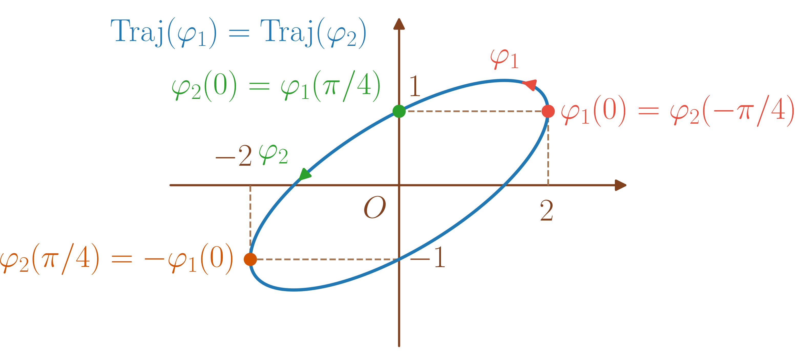
On considère maintenant \(A_2 = A_1+I_2 = \begin{pmatrix} 3 & -4 \\ 2 & -1 \end{pmatrix}\) et \[\label{eq:systeme_lin_ordre_un_homo_constant_ex_2} \tag{$H_{A_2}$} x' = A_2x.\]
Alors, on a maintenant deux valeurs propres qui sont \(1+\pm 2i,\) toujours associées aux mêmes vecteurs propres.
En reprenant les mêmes calculs, on en déduit une base de constituée de \(\tilde{varphi}_1: t \mapsto e^t\varphi_1(t)\) et \(\tilde{varphi}_2: t \mapsto e^t\varphi_2(t)\) (en reprenant les notations de l’exemple précédent).
Comme \(\varphi_1\) et \(\varphi_2\) décrivent une courbe fermée autour de l’origine, la multiplication par le facteur \(e^t\) (strictement positif et strictement croissant) transforme ces trajectoires fermées en spirales s’enroulant autour de \(O\) dans le sens trigonométrique :
lorsque \(t \to -\infty,\) \(e^t \to 0\) tandis que \(\varphi_1\) et \(\varphi_2\) sont bornées, donc \(\lim_{t \to -\infty} \tilde{\varphi}_1(t) = \lim_{t \to -\infty} \tilde{\varphi}_2(t) = \begin{pmatrix} 0 \\ 0 \end{pmatrix}\) (les spirales partent de l’origine) ;
lorsque \(t \to +\infty,\) \(e^t \to +\infty,\) donc les trajectoires s’éloignent indéfiniment de l’origine en spiralant.
De plus, l’identité \(\varphi_2(t) = \varphi_1\!\left(t + \frac{\pi}{4}\right)\) entraîne : \[\forall t \in \mathbb{R}, \quad \tilde{\varphi}_2(t) = e^t \varphi_1\!\left(t + \frac{\pi}{4}\right) = e^{-\pi/4}\,\tilde{\varphi}_1\!\left(t + \frac{\pi}{4}\right).\] La trajectoire de \(\tilde{\varphi}_2\) est donc l’image de celle de \(\tilde{\varphi}_1\) par l’homothétie de centre \(O\) et de rapport \(e^{-\pi/4}.\) Quelques points remarquables permettent de les placer : \[\tilde{\varphi}_1(0) = \begin{pmatrix} 2 \\ 1 \end{pmatrix}, \qquad \tilde{\varphi}_2(0) = \begin{pmatrix} 0 \\ 1 \end{pmatrix}, \qquad \tilde{\varphi}_1\!\left(\frac{\pi}{4}\right) = \begin{pmatrix} 0 \\ e^{\pi/4} \end{pmatrix}, \qquad \tilde{\varphi}_2\!\left(\frac{\pi}{4}\right) = \begin{pmatrix} -2e^{\pi/4} \\ -e^{\pi/4} \end{pmatrix}.\]
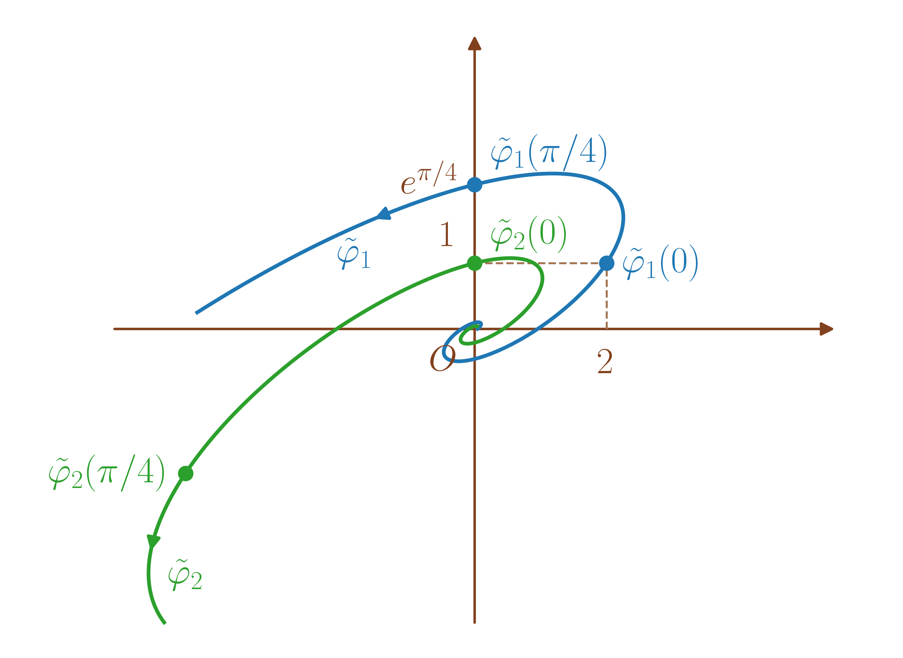
On s’intéresse maintenant à \[\label{eq:systeme_lin_ordre_un_homo_constant_ex_3} \tag{$H_{A_3}$} x' = A_3x. \text{ avec }A_3 = \begin{pmatrix} -3 & 2 \\ -2 & 1 \end{pmatrix}.\]
On a \(\chi_{A_3} = (X+1)^2\) donc \(A\) admet une valeur propre qui est \(-1.\) On en déduit qu’elle est trigonalisable non diagonalisable (sinon, ce serait une homothétie).
De plus, \(A_3+I_2 = \begin{pmatrix} -2 & 2 \\ -2 & 2 \end{pmatrix}\) donc \(\mathop{\mathrm{Ker}}(A+I_2) = \mathop{\mathrm{Vect}}\begin{pmatrix} 1 \\ 1 \end{pmatrix}.\)
On complète alors \((C_1)\) en une base de \(\mathbb{R}^2 = \mathop{\mathrm{Ker}}(A_3+I_2)^3\) en prenant \(C_2 = \begin{pmatrix} 0 \\ 1 \end{pmatrix}.\)
Alors, \((C_1,C_2)\) est une base de \(\mathbb{R}^2\) et \((\psi_1,\psi_2)\) est une base de \(\mathcal{S}_{\text{\ref{eq:systeme_lin_ordre_un_homo_constant_ex_3}}}\) avec pour tout \(t \in \mathbb{R},\) \[\begin{aligned} \psi_1(t) & = \exp(tA)C_1 \\ & = e^{-t}C_1 \\ \text{ et }\psi_2(t) & = \exp(tA)C_2 \\ & = \exp(t(A+I_2-I_2))C_2 \\ & = e^{-t}\left(t^0(A+I_2-I_2)^0C_2+t(A+I_2-I_2)C_2\right) \\ & = e^{-t}\left(\begin{pmatrix} 0 \\ 1 \end{pmatrix}+t\begin{pmatrix} 2 \\ 1 \end{pmatrix}\right) \\ & = e^{-t}\begin{pmatrix} 2t \\ 1+t \end{pmatrix} \end{aligned}\]
Trajectoire de \(\psi_1\) : \(\left\{\psi_1(t) / t \in \mathbb{R}\right\} = \left\{(e^t,e^t) / t\in \mathbb{R}\right\} = \left\{u(1,1) / u \in \mathbb{R}^{+\star}\right\}.\)
Trajectoire de \(\psi_2\) : En notant \(\psi_2(t) = \begin{pmatrix} x(t) \\ y(t) \end{pmatrix}\) pour \(t \in \mathbb{R},\) le calcul des dérivées \(x'(t) = 2(1-t)e^{-t}\) et \(y'(t) = -t e^{-t}\) donne le sens de variation des coordonnées :
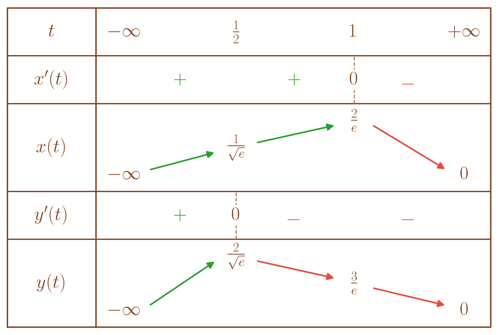
De plus, \(\frac{y(t)}{x(t)} = \frac{1+2t}{2t} \xrightarrow[t \to +\infty]{} 1\) et on en déduit donc l’allure des trajectoires ci-dessous.
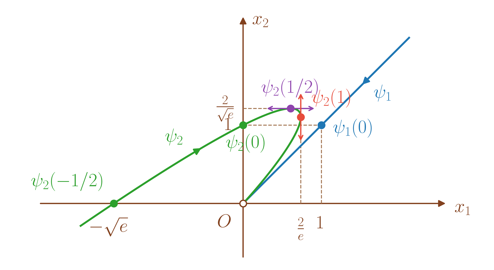
Soit \(A \in \mathscr{M}_{2}(\mathbb{R})\) telle que \(A\) admet deux valeurs propres \(0 < \mu < \lambda.\) Tracer l’allure des trajectoires des solutions de \[X' = AX.\]
\(A\) a exactement deux valeurs propres donc elle est diagonalisable et on peut considérer \((e_1, e_2)\) une base de \(\mathbb{R}^2\) formée de vecteurs propres d’une matrice \(A\) associés respectivement aux valeurs propres réelles \(\lambda\) et \(\mu.\) L’espace des solutions du système différentiel \(X' = A X\) admet pour base les deux solutions fondamentales : \[\psi_1 : t \mapsto e^{\lambda t} e_1 \text{ et }\psi_2 : t \mapsto e^{\mu t} e_2.\] Toute solution \(X\) s’écrit donc sous la forme \(X(t) = c_1 \psi_1(t) + c_2 \psi_2(t)\) avec \((c_1, c_2) \in \mathbb{R}^2.\)
Les trajectoires propres sont des demi-droites dirigées par \(e_1\) et \(e_2\) ne contenant pas l’origine car par exemple, \(\left\{\psi_1(t) / t \in \mathbb{R}\right\}= \left\{e^{\lambda t} e_1/t \in \mathbb{R}\right\} = \left\{u e_1/u \in \mathbb{R}^{+\star}\right\}.\)
De plus, elles sont dirigées de \(0\) vers \(+\infty\) car \(\underset{t \to -\infty}{\lim}\text{ } e^{\lambda t} = 0\) et \(\underset{t \to +\infty}{\lim}\text{ } e^{\lambda t}= +\infty.\)
De la même façon, il y a les demi-droites liées à \(-\psi_1\) et \(-\psi_2\) qui vont de \(0\) vers \(-\infty.\)
Pour la trajectoire d’une solution quelconque telle que pour \(t \in \mathbb{R},\) \(X(t) = c_1 e^{\lambda t} e_1 + c_2 e^{\mu t} e_2\) avec \(c_1 \neq 0\) et \(c_2 \neq 0,\) on remarque que les trajectoires propres précédentes (avec \(\{0\}\)) découpent le plan en \(4\) quadrants ouverts.
De plus, en notant \(x_1(t) = c_1 e^{\lambda t}\) et \(x_2(t) = c_2 e^{\mu t}\) les coordonnées de \(X(t)\) dans la base \((e_1,e_2)\) pour \(t \in \mathbb{R},\) on a : \[x_1(t) \xrightarrow[t \to +\infty]{} \pm \infty, \quad x_2(t) \xrightarrow[t \to +\infty]{} \pm\infty \qquad \text{ et }\qquad x_1(t) \xrightarrow[t \to -\infty]{} 0, \quad x_2(t) \xrightarrow[t \to -\infty]{} 0\] en fonction des signes de \(c_1,c_2\) donc \(X(t)\) tend vers \(0\) lorsque \(t \to -\infty\) et s’éloigne vers l’infini lorsque \(t \to +\infty.\)
Par ailleurs, comme \(0 < \mu < \lambda,\) on a \(\lambda - \mu > 0,\) d’où : \[\frac{x_1(t)}{x_2(t)} = \frac{c_1}{c_2}e^{(\lambda-\mu)t} \xrightarrow[t \to -\infty]{} 0\] ainsi \(x_1(t) = o(x_2(t))\) en \(-\infty\) : la trajectoire quitte \(0\) tangentiellement à la demi-droite portée par \(\pm e_2\) (selon le signe de \(c_2\)).
De même, en \(+\infty\) : \[\frac{x_2(t)}{x_1(t)} = \frac{c_2}{c_1}e^{(\mu-\lambda)t} \xrightarrow[t \to +\infty]{} 0\] ainsi \(x_2(t) = o(x_1(t))\) en \(+\infty\) : la trajectoire part vers l’infini avec une direction asymptotique portée par \(\pm e_1\) (selon le signe de \(c_1\)).
On en déduit alors les allures suivantes.
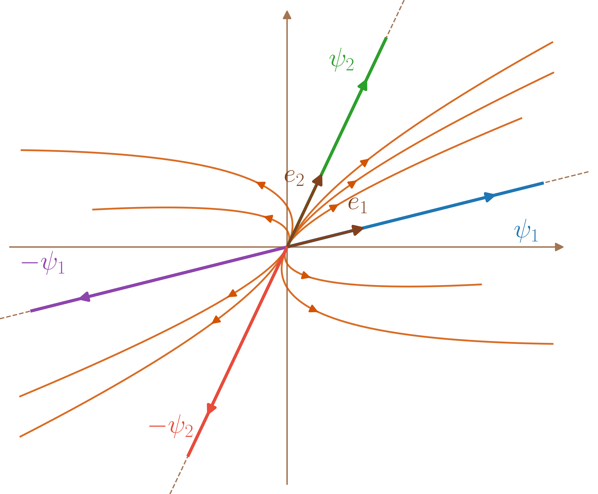
Donner une base des solutions (à valeurs réelles) de l’équation homogène \[x'=Ax\] avec \(A = \begin{pmatrix} -4 & -10 & -8 \\ 1 & 3 & 1 \\ 3 & 6 & 7 \end{pmatrix}.\)
On commence par déterminer le spectre de \(A.\) \[\begin{aligned} \chi_A = & \begin{vmatrix} X+4 & 10 & 8 \\ -1 & X-3 & -1 \\ -3 & -6 & X-7 \end{vmatrix} \\ \overset{C_1 \leftarrow C_1-C_3}{=} & \begin{vmatrix} X-4 & 10 & 8 \\ 0 & X-3 & -1 \\ 4-X & -6 & X-7 \end{vmatrix} \\ \overset{L_3 \leftarrow L_3+L_1}{=} & \begin{vmatrix} X-4 & 10 & 8 \\ 0 & X-3 & -1 \\ 0 & 4 & X+1 \end{vmatrix} \\ = & (X-4)\begin{vmatrix} X-3 & -1 \\ 4 & X+1 \end{vmatrix} \\ = & (X-4)\left((X-3)(X+1)+4\right) = (X-4)\left(X^2-2X+1\right) = (X-4)(X-1)^2 \end{aligned}\] donc \(\mathop{\mathrm{Sp}}(A) = \left\{1,4\right\}.\)
On étudie maintenant les sous-espaces propres.
Etude de \(\mathop{\mathrm{Ker}}(A-4I_3).\) On sait que \(\dim \mathop{\mathrm{Ker}}(A-4I_3) = 1\) (\(4\) est de multiplicité \(1\)) et de plus, \[A-4I_3 = \begin{pmatrix} -8 & -10 & -8 \\ 1 & -1 & 1 \\ 3 & 6 & 3 \end{pmatrix}.\] On repère donc \(C_1 = \begin{pmatrix} 1 \\0 \\ -1 \end{pmatrix} \in \mathop{\mathrm{Ker}}(A-4I_3)\) et donc \(\mathop{\mathrm{Ker}}(A-4I_3) = \mathop{\mathrm{Vect}}(C_1).\)
Etude de \(\mathop{\mathrm{Ker}}(A-I_3).\) On a \[A-I_3 = \begin{pmatrix} -5 & -10 & -8 \\ 1 & 2 & 1 \\ 3 & 6 & 6 \end{pmatrix}.\] On repère donc \(C_2 = \begin{pmatrix} 2 \\-1 \\ 0 \end{pmatrix} \in \mathop{\mathrm{Ker}}(A-I_3).\) On voit aussi que la dernière colonne n’est pas liée aux deux premières donc \(\mathop{\mathrm{rg}}(A-I_3) = 2\) et par théorème du rang, \(\dim \mathop{\mathrm{Ker}}(A-I_3) = 1.\) On sait alors que \(\mathop{\mathrm{Ker}}(A-I_3) = \mathop{\mathrm{Vect}}(C_2)\) et que \(A\) n’est pas diagonalisable.
On remarque anfin que \(C_3 = \begin{pmatrix} 0 \\ -1 \\ 1 \end{pmatrix}\) vérifie \((A-I_3)C_3 = C_2\) et on considère alors la base \((C_1,C_2,C_3)\) de \(\mathbb{R}^3\) (En fait, \((C_2,C_3)\) est une base de \(\mathop{\mathrm{Ker}}(A-I_3)^2,\) voir le cours de réduction pour d’autres raisonnements simialaires).
Un base des solutions de l’équation est donc \((\psi_1,\psi_2,\psi_3)\) avec pour \(t \in \mathbb{R},\) \[\begin{aligned} \psi_1(t) & = \exp(tA)C_1 = e^{4t}C_1 = \begin{pmatrix} e^{4t} \\0 \\ -e^{4t} \end{pmatrix} \\ \psi_2(t) & = \exp(tA)C_2 = e^{t}C_2 = \begin{pmatrix} 2e^{t} \\ -e^t \\ 0 \end{pmatrix} \\ \text{ et }\psi_3(t) & = \exp(tA)C_3 \\ & = \exp(t(A-I_3)+I_3)C_3 \\ & = e^{t} \exp(t(A-I_3))C_3 \\ & = e^{t}\left(C_3+t\underbrace{(A+I_3)C_3}_{=C_2}\right)\text{car $(A+I_3)^2C_3 = 0$} \\ & = \begin{pmatrix} 2te^t \\ -e^t-te^t \\ e^t \end{pmatrix}. \end{aligned}\]
Soit \(A \in \mathscr{M}_{n}(\mathbb{K})\) et \(b:I \to \mathbb{K}^n\) une fonction continue sur \(I,\) un intervalle de \(\mathbb{R},\) on s’intéresse dans cette partie au système différentiel linéaire du premier ordre \[\label{eq:systeme_lin_ordre_un_constant} \tag{$S_{A,b}$} x' = A(t)x+b(t)\]
Les solutions du système homogène associé sont les solutions du système \(\eqref{eq:systeme_lin_ordre_un_constant}\)restreintes à \(I.\) On peut donc déterminer une base \((\psi_1,\ldots,\psi_n)\) de ces solutions comme détaillées avant puis appliquer la méthode de variation des constantes en cherchant une solution particulière sous la forme \(t \in I \mapsto \sum_{j=1}^n \alpha_j(t) \psi_j(t)\) (voir la proposition [prop:partie_variations_constantes])
Soit \(A \in \mathscr{M}_{n}(\mathbb{K})\) et \(b:I \to \mathbb{K}^n\) une fonction continue sur \(I,\) un intervalle de \(\mathbb{R},\) on s’intéresse dans cette partie au système différentiel linéaire du premier ordre \[x' = A(t)x+b(t)\]
Faire une preuve directe du théorème de Cauchy (sans utiliser des outils aussi compliqués que dans la preuve du théorème général).
Soient \(t_0\in I\) et \(c_0\in K^n.\) Montrons que le problème de Cauchy \(P_{\text{\ref{eq:systeme_lin_ordre_un_constant}},t_0,c_0}\) admet une unique solution. Soit \(\varphi:I\to K^n\) dérivable, \[\begin{aligned} \text{$\varphi$ est solution de$\eqref{eq:systeme_lin_ordre_un_constant}$sur $I$} & \iff \forall t\in I,\quad \varphi'(t)=A\varphi(t)+b(t)\\ &\iff \forall t\in I,\quad \varphi'(t)-A\varphi(t)=b(t)\\ & \iff \forall t\in I,\quad \exp(-tA)\big(\varphi'(t)-A\varphi(t)\big) =\exp(-tA)b(t). \end{aligned}\] Or, \(t\mapsto\exp(-tA)(\varphi'(t)-A\varphi(t))\) est la dérivée de \(t\mapsto\exp(-tA)\varphi(t).\) Donc,
\[\begin{aligned} & \text{$\varphi$ est solution de$\eqref{eq:systeme_lin_ordre_un_constant}$sur $I$} \\ &\iff \forall t\in I,\quad \exp(-tA)\varphi(t) =\int_{t_0}^t\exp(-uA)b(u)\,\mathrm{d}u+c \quad\text{avec }c\in K^n \\ &\iff \forall t\in I,\quad \varphi(t) =\underbrace{\exp(tA)\int_{t_0}^t \exp(-uA)b(u)\,\mathrm{d}u}_{\text{solution de~$\eqref{eq:systeme_lin_ordre_un_constant}$}} +\underbrace{(\exp(tA)c)}_{\text{solution de~$\eqref{eq:systeme_lin_ordre_un_homo_constant}$}} \quad\text{avec }c\in K^n. \end{aligned}\]
Donc, \[\begin{aligned} &\text{$\varphi$ est solution de~$P_{\text{\ref{eq:systeme_lin_ordre_un_constant}},t_0,c_0}$ sur $I$} \\ & \iff \left\{ \begin{array}{ll} & \text{$\varphi$ est solution de$\eqref{eq:systeme_lin_ordre_un_constant}$sur $I$} \\ \text{ et }& \varphi(t_0) = c_0 \end{array} \right. \\ & \iff \left\{ \begin{array}{ll} & \forall t\in I,\quad \varphi(t) =\exp(tA)\int_{t_0}^t\exp(-uA)b(u)\,\mathrm{d}u +(\exp(tA)c) \\ \text{ et }& \varphi(t_0) = c_0 \end{array} \right. \\ & \iff \left\{ \begin{array}{ll} & \forall t\in I,\quad \varphi(t) =\exp(tA)\int_{t_0}^t\exp(-uA)b(u)\,\mathrm{d}u +(\exp(tA)c) \\ \text{ et }& \exp(t_0A)c = c_0 \iff c = \exp(-t_0A)c_0 \end{array} \right. \\ & \iff \forall t\in I,\quad \varphi(t) =\exp(tA)\int_{t_0}^t\exp(-uA)b(u)\,\mathrm{d}u +(\exp((t-t_0)A)c_0) \end{aligned}\] Donc \(P_{\text{\ref{eq:systeme_lin_ordre_un_constant}},t_0,c_0}\) admet bien une unique solution.
Soient \(I\) un intervalle de \(\mathbb{K},\) \(\begin{array}{lllll} a & : & I & \to & \mathbb{K} \\ & & t & \mapsto & a(t) \end{array} ,\) \(\begin{array}{lllll} b & : & I & \to & \mathbb{K} \\ & & t & \mapsto & b(t) \end{array}\) et \(\begin{array}{lllll} c & : & I & \to & \mathbb{K} \\ & & t & \mapsto & c(t) \end{array}\) continues.
Une équation différentielle linéaire scalaire d’ordre 1 consiste à rechercher une fonction inconnue \(\begin{array}{lllll} x & : & I & \to & \mathbb{K} \\ & & t & \mapsto & x(t) \end{array}\) telle que
\[\forall t \in I, a(t)x'(t) + b(t)x(t)=c(t)\]
On le note alors (un peu abusivement) \[\label{eq:equation_lin_ordre_un_scalaire} \tag{$1$} a(t)x' + b(t)x=c(t).\]
Si \(b = 0,\) on dit que l’équation \(\eqref{eq:equation_lin_ordre_un_scalaire}\)est homogène.
L’équation différentielle homogène linéaire d’ordre \(1\) \[\label{eq:equation_lin_ordre_un_scalaire_homo} \tag{$H_{\text{\ref{eq:equation_lin_ordre_un_scalaire}}}$} a(t)x' + b(t)x=0.\] est appelé l’équation homogène associée à \(\eqref{eq:equation_lin_ordre_un_scalaire}\).
Soit \(J \subset I\) un intervalle. On appelle solution sur \(J\) de l’équation \(\eqref{eq:equation_lin_ordre_un_scalaire}\)toute fonction \(\begin{array}{lllll} \varphi & : & J & \to & \mathbb{K} \\ & & t & \mapsto & \varphi(t) \end{array}\) telle que \[\forall t \in J, a(t)\varphi'(t) + b(t)(\varphi(t))= c(t)\]
L’arc paramétré \(\mathscr{C}= \varphi(J)\) est appelé la trajectoire de \(\varphi.\)
Soit \(t_0 \in I\) et \(c_0 \in E,\) \[\label{eq:probleme_Cauch_eq:equation_lin_ordre_un_scalaire} \tag{$P_{\text{$\eqref{eq:equation_lin_ordre_un_scalaire}$},t_0,c_0}$} \left\{ \begin{array}{ll} a(t)x'+ b(t)x & = c(t) \\ x(t_0) & = c_0 \end{array} \right.\] est appelé un problème de Cauchy.
Si \(J \subset I\) est un intervalle de \(\mathbb{R}\) et \(t_0 \in J\) alors une solution de ce problème de Cauchy sur \(J\) est une fonction \(\varphi\) telle que \(\left\{ \begin{array}{ll} \forall t \in J, a(t)\varphi'(t) +b(t)\varphi(t) & = c(t) \\ \varphi(t_0) & = c_0 \end{array} \right..\)
On dit que l’équation \(\eqref{eq:equation_lin_ordre_un_scalaire}\)est sous forme résolue en \(x'\) si \[\forall t \in I, a(t) \neq 0.\] Dans ce cas, l’équation \(\eqref{eq:equation_lin_ordre_un_scalaire}\)équivaut à \[x' = -\frac{b(t)}{a(t)}x+\frac{c(t)}{a(t)}.\]
On suppose que l’équation \(\eqref{eq:equation_lin_ordre_un_scalaire}\)est sous forme résolue en \(x'\) (\(a\) non nulle sur \(I\)). Soient \(t_0 \in I\) et \(c_0 \in \mathbb{K}\) alors\(\eqref{eq:probleme_Cauch_eq:equation_lin_ordre_un_scalaire}\)admet une unique solution.
\(\quad\)
Ceci est un cas particulier du théorème de Cauchy linéaire dont on refait une preuve plus simple.
\(-\frac{b}{a}\) est continue donc elle admet une primitive \(B\) sur \(I.\) Soit \(\varphi:I \to \mathbb{K}\) dérivable. \[\begin{aligned} \varphi \text{ solution de~$\eqref{eq:equation_lin_ordre_un_scalaire}$} & \iff \forall t \in I, \varphi'(t) +\frac{b(t)}{a(t)}\varphi(t) = c(t) \\ & \iff \forall t \in I, \left(\varphi'(t) +\frac{b(t)}{a(t)}\varphi(t)\right)e^{-B(t)} = c(t)e^{-B(t)} \\ \end{aligned}\] Or, \(t \in I \mapsto \left(\varphi'(t) +\frac{b(t)}{a(t)}\varphi(t)\right)e^{-B(t)}\) est la dérivée de \(t \in I \mapsto \varphi(t) e^{-B(t)}\) donc \[\begin{aligned} \varphi \text{ solution de~$\eqref{eq:equation_lin_ordre_un_scalaire}$} & \iff \exists \alpha \in \mathbb{K}/ \forall t \in I, \varphi(t) e^{-B(t)} = \int_{t_0}^tc(u)e^{-B(u)}du +\alpha\\ & \iff \exists \alpha \in \mathbb{K}/ \forall t \in I, \varphi(t) = e^{B(t)}\int_{t_0}^tc(u)e^{-B(u)}du +\alpha e^{B(t)}.\\ \end{aligned}\] En choisissant \(B\) telle que \(B(t_0) = 0,\) on a alors \[\begin{aligned} \varphi \text{ solution de~$\eqref{eq:probleme_Cauch_eq:equation_lin_ordre_un_scalaire}$} & \iff \left\{ \begin{array}{rl} \exists \alpha \in \mathbb{K}/ \forall t \in I, \varphi(t) &= e^{B(t)}\int_{t_0}^tc(u)e^{-B(u)}du +\alpha e^{B(t)}\\ \text{ et }\varphi(t_0) & = c_0 \end{array} \right. \\ & \iff \left\{ \begin{array}{rl} \exists \alpha \in \mathbb{K}/ \forall t \in I, \varphi(t) &= e^{B(t)}\int_{t_0}^tc(u)e^{-B(u)}du +\alpha e^{B(t)}\\ \text{ et }\alpha e^{B(t_0)} & = \alpha = c_0 (\text{ car }B(t_0) = 0) \end{array} \right. \\ & \iff \forall t \in I, \varphi(t) = e^{B(t)}\int_{t_0}^tc(u)e^{-B(u)}du +c_0e^{B(t)}. \end{aligned}\]
Donc\(\eqref{eq:probleme_Cauch_eq:equation_lin_ordre_un_scalaire}\)admet une unique solution.
On suppose que l’équation \(\eqref{eq:equation_lin_ordre_un_scalaire}\)est sous forme résolue en \(x'\) (\(a\) non nulle sur \(I\)). Alors,
\(\mathcal{S}_{\text{$\eqref{eq:equation_lin_ordre_un_scalaire_homo}$}} = \left\{t \in I \mapsto \alpha e^{B(t)}, \alpha \in \mathbb{K}\right\}\) avec \(B\) une primitive de \(-\frac{b}{a}.\)
\(\mathcal{S}_{\text{$\eqref{eq:equation_lin_ordre_un_scalaire}$}}\) est une droite affine dirigée par \(\mathcal{S}_{\text{$\eqref{eq:equation_lin_ordre_un_scalaire_homo}$}},\) ie soit \(\varphi \in \mathcal{S}_{\text{$\eqref{eq:equation_lin_ordre_un_scalaire}$}},\) \(\mathcal{S}_{\text{$\eqref{eq:equation_lin_ordre_un_scalaire}$}} = \varphi+\mathcal{S}_{\text{$\eqref{eq:equation_lin_ordre_un_scalaire_homo}$}}.\)
On pourrait tenter cette preuve dans le cas du système différentiel \(\eqref{eq:systeme_lin_ordre_un}\). Soit \(B\) une primitive de \(A: t \mapsto \mathscr{M}_{n}(\mathbb{K})\) et soit \(\varphi: I \to \mathbb{K}^n\) dérivable, \[\begin{aligned} \varphi \text{ solution de~$\eqref{eq:systeme_lin_ordre_un}$} & \iff \forall t \in I, \varphi'(t) +A(t)\varphi(t) = b(t) \\ & \iff \forall t \in I, \left(\varphi'(t) +A(t)\varphi(t)\right)e^{B(t)} = b(t)e^{B(t)} \\ \end{aligned}\] Or, \(t \in I \mapsto \left(\varphi'(t) +A(t)\varphi(t)\right)e^{B(t)}\) n’est pas la dérivée de \(t \in I \mapsto \varphi(t) e^{B(t)}.\)
Pou rappel, pour une fonction matricielle \(t \in I \mapsto C(t) \in \mathscr{M}_{n}(\mathbb{K}),\) la dérivée de \(t \in I \mapsto \exp(C(t))\) n’est pas \(t \in I \mapsto C'(t)\exp(C(t))\) en général. C’est pourquoi, on ne peut pas proposer de forme générale des solutions de \(\eqref{eq:systeme_lin_ordre_un}\).
En revanche, si \(C\) et \(C'\) commutent, la dérivée de \(t \in I \mapsto \exp(C(t))\) est bien \(t \in I \mapsto C'(t)\exp(C(t)).\) C’est pourquoi, dans le cas constant (le système \(\eqref{eq:systeme_lin_ordre_un_constant}\)), on peut utiliser cette méthode et écrire une forme générale de solution (voir l’exercice [exoc:Cauchy_simplifiee_coeffs_constants]). Cela vient du fait que \(t \in I\mapsto tA\) et sa dérivée \(t \in I\mapsto A\) commutent.
\(-\frac{b}{a}\) est continue donc elle admet une primitive \(B\) sur \(I.\) De plus, \[\begin{aligned} \psi \in \mathcal{S}_{\text{$\eqref{eq:equation_lin_ordre_un_scalaire_homo}$}} & \iff \forall t \in I, \psi'(t) +\frac{b(t)}{a(t)}\psi(t)=0 \\ & \iff \forall t \in I, \left(\psi'(t) +\frac{b(t)}{a(t)}\psi(t)\right)e^{-B(t)} = 0 \\ \end{aligned}\] Or, \(t \in I \mapsto \left(\psi'(t) +\frac{b(t)}{a(t)}\psi(t)\right)e^{-B(t)}\) est la dérivée de \(t \in I \mapsto \psi(t) e^{-B(t)}\) donc \[\begin{aligned} \psi \in \mathcal{S}_{\text{$\eqref{eq:equation_lin_ordre_un_scalaire_homo}$}} & \iff t \in I \mapsto \psi(t) e^{-B(t)} \text{ est constante } \\ & \iff \exists \alpha \in \mathbb{K}/ \forall t \in I, \psi(t) e^{-B(t)} = \alpha \\ & \iff \exists \alpha \in \mathbb{K}/ \forall t \in I, \psi(t) = \alpha e^{B(t)}. \end{aligned}\]
On a prouvé avec le théorème [thm:Cauchy_scalaire] que \(\mathcal{S}_{\text{$\eqref{eq:equation_lin_ordre_un_scalaire}$}} \neq \emptyset.\) Ensuite, la preuve que \(\mathcal{S}_{\text{$\eqref{eq:equation_lin_ordre_un_scalaire}$}}\) est une droite affine dirigée par \(\mathcal{S}_{\text{$\eqref{eq:equation_lin_ordre_un_scalaire_homo}$}}\) se fait de la même façon que dans la proposition [prop:ensembles_de_solutions].
Soient \(\varphi,\psi \in \mathcal{S}_{\text{$\eqref{eq:equation_lin_ordre_un_scalaire}$}}\) tel qu’il existe \(t_0 \in I\) tel que \(\varphi(t_0) = \psi(t_0)\) alors \(\varphi = \psi.\)
Soit \(\psi \in \mathcal{S}_{\text{$\eqref{eq:equation_lin_ordre_un_scalaire_homo}$}}\) tel qu’il existe \(t_0 \in I\) tel que \(\psi(t_0)=0\) alors \(\psi=0.\)
\(\begin{array}{llll} & \mathcal{S}_{\text{$\eqref{eq:equation_lin_ordre_un_scalaire_homo}$}} & \to & \mathbb{K} \\ & \psi & \mapsto & \psi(t_0) \end{array}\) est une bijection linéaire de réciproque \(\begin{array}{llll} & \mathbb{K} & \to & \mathcal{S}_{\text{$\eqref{eq:equation_lin_ordre_un_scalaire_homo}$}} \\ & c_0 & \mapsto & t \in I \mapsto c_0e^{B(t)} \end{array}\)
(Variation de la constante dans le cas scalaire) On suppose que l’équation \(\eqref{eq:equation_lin_ordre_un_scalaire}\)est sous forme résolue en \(x'\) (\(a\) non nulle sur \(I\)). Soient \(t_0\in I\) et \(\psi\) une solution non nulle de l’équation homogène [eq:equation_lin_ordre_un_scalaire_homo] associée à \(\eqref{eq:equation_lin_ordre_un_scalaire}\). Alors, \(\psi\) ne s’annule pas sur \(I\) et l’ensemble des solutions de \(\eqref{eq:equation_lin_ordre_un_scalaire}\)est donné par \[\mathcal{S}_{\text{$\eqref{eq:equation_lin_ordre_un_scalaire}$}} = \left\{\varphi_0+C\psi \mid C\in\mathbb{K}\right\},\] où \(\varphi_0:t\in I\mapsto \alpha(t)\psi(t).\) avec \(\alpha\) dérivable de dérivée \(t \mapsto \frac{c(t)}{a(t)\psi(t)}.\)
Posons \(x=\alpha\psi,\) où \(\alpha:I\to\mathbb{K}\) est une fonction dérivable que l’on cherche à déterminer. En substituant dans\(\eqref{eq:equation_lin_ordre_un_scalaire}\), on obtient \[\forall t \in I, a(t)(\alpha'(t)\psi(t)+\alpha(t)\psi'(t))+b(t)\alpha(t)\psi(t)=c(t).\] Puisque \(\psi\) est solution de l’équation homogène associée, on a \(a\psi'+b\psi=0.\) Il vient donc \[\forall t \in I, a(t)\alpha'(t)\psi(t)=c(t), \qquad\text{soit}\qquad \alpha'=\frac{c}{a\psi}.\] Par intégration entre \(t_0\) et \(t,\) on obtient \[\alpha(t)=\alpha(t_0)+\int_{t_0}^t\frac{c(u)}{a(u)\psi(u)}\,du.\] En posant \(C=\alpha(t_0),\) on en déduit que toute solution s’écrit \[x(t)=C\psi(t)+\varphi_0(t).\] Réciproquement, toute fonction de cette forme vérifie, par construction, l’équation\(\eqref{eq:equation_lin_ordre_un_scalaire}\)(proposition [prop:structure_solutions_Scalaire]). Ainsi, \[\mathcal{S}_{\text{$\eqref{eq:equation_lin_ordre_un_scalaire}$}} =\left\{\varphi_0+C\psi\mid C\in\mathbb{K}\right\}.\]
Il faut retenir de cette proposition que dans le cas résolu, on résout \(\eqref{eq:equation_lin_ordre_un_scalaire}\)en procédant ainsi
Résoudre \(\eqref{eq:equation_lin_ordre_un_scalaire_homo}\): en primitivant \(-\frac{b}{a}\) par \(B,\) elles s’écrivent \(t \mapsto Ce^{B(t)}\) avec \(C \in \mathbb{K}\) (proposition [prop:structure_solutions_Scalaire]).
Déterminer une solution particulière \(\varphi_0\) de \(\eqref{eq:equation_lin_ordre_un_scalaire}\)en la cherchant sous la forme \(\varphi_0: t \mapsto \alpha(t)e^{B(t)}\) avec \(\alpha : I \to \mathbb{K}\) une fonction dérivable.
On a alors \(\mathcal{S}_{\text{$\eqref{eq:equation_lin_ordre_un_scalaire}$}} = \varphi_0 + \mathcal{S}_{\text{$\eqref{eq:equation_lin_ordre_un_scalaire_homo}$}}\) (proposition [prop:structure_solutions_Scalaire]).
Résolvons \(x' = -\frac{1}{t}x+\cos(t)\) sur \(\mathbb{R}^{+\star}\) qui est clairement sous forme résolue.
Une primitive de \(t \in \mathbb{R}^{+\star}\mapsto -\frac{1}{t}\) est \(t \in \mathbb{R}^{+\star}\mapsto -\ln(t)\) donc les solutions de l’équation homogène associée \(x' = -\frac{1}{t}x\) s’écrivent \(t \in \mathbb{R}^{+\star}\mapsto C^{-\ln t} = \frac{C}{t}\) avec \(C \in \mathbb{R}.\)
On cherche maintenant une solution particulière sous la forme \(\varphi_0 : t \in \mathbb{R}^{+\star}\mapsto \frac{\alpha(t)}{t}\) avec \(\alpha : \mathbb{R}^{+\star}\to \mathbb{R}\) une fonction dérivable. Alors, \[\begin{aligned} \varphi_0 \text{ solution sur $\mathbb{R}^{+\star}$} & \iff \forall t \in \mathbb{R}^{+\star}, \varphi'(t) +\frac{1}{t}\varphi(t) = \cos(t) \\ & \iff \forall t \in \mathbb{R}^{+\star}, -\frac{\alpha(t)}{t^2}+\frac{\alpha'(t)}{t} +\frac{\alpha(t)}{t^2} = \cos(t) \\ & \iff \forall t \in \mathbb{R}^{+\star}, \frac{\alpha'(t)}{t}= \cos(t) \\ & \iff \forall t \in \mathbb{R}^{+\star},\alpha'(t) = t\cos(t). \\ & \iff \forall t \in \mathbb{R}^{+\star},\alpha(t) = \int_{2\pi}^t x\cos(x)dx+\mathrm{Cste}. \end{aligned}\] On procède alors à une intégration par parties avec \(u,v\) de classe \(\mathscr{C}^1\) telle que pour tout \(x \in \mathbb{R},\) \(\left\{ \begin{array}{ll} u(x) & = x \\ v(x) & = \sin(x) \end{array} \right. \Longrightarrow \left\{ \begin{array}{ll} u'(x) & = 1 \\ v'(x) & = \cos(x) \end{array} \right.\) et donc pour \[\begin{aligned} \forall t \in \mathbb{R}^{+\star}, \alpha(t) & = \left[x \sin(x)\right]_{2\pi}^t -\int_{2\pi}^t \sin(x)dx \\ & = t\sin(t) - \left[-\cos(x)\right]_{2\pi}^t \\ & = t\sin(t) +\cos(t)+\mathrm{Cste}. \end{aligned}\]
Donc \(\varphi_0: t \in \mathbb{R}^{+\star}\mapsto \frac{t\sin(t) +\cos(t)}{t} = \sin(t) + \frac{\cos(t)}{t}\) est solution.
On en déduit que l’ensemble des solutions sur \(\mathbb{R}^{+\star}\) s’écrit \[\left\{ t \in \mathbb{R}^{+\star}\mapsto \sin(t) + \frac{\cos(t)}{t}+\frac{C}{t} / C \in \mathbb{R} \right\}.\]
Dans le cas sous forme non résolue (ie \(a\) s’annule sur \(I\)), les résultats précédents ne s’appliquent pas.
Une équation différentielle linéaire scalaire d’ordre \(1\) sous forme non résolue en \(x'\) peut ne posséder aucune solution.
Pour \[tx'+tx=1\] sur \(I = \mathbb{R},\) on a en \(t=0,\) \(0=1\) donc l’équation n’a aucune solution.
Un problème de Cauchy associé à une équation différentielle linéaire scalaire d’ordre \(1\) sous forme non résolue en \(x'\) peut n’avoir aucune solution ou avoir une infinité de solutions.
Déterminons les solutions de \[tx'-2x= 0\] sur \(\mathbb{R}.\)
Soit \(\varphi: \mathbb{R}\to \mathbb{R},\) \[\varphi \text{ solution sur $\mathbb{R}$} \iff \left\{\begin{array}{l} \varphi \text{ solution sur $\mathbb{R}^{+\star}$ (donc dérivable sur $\mathbb{R}^{+\star}$)} \\ \varphi \text{ solution sur $\mathbb{R}^{-\star}$ (donc dérivable sur $\mathbb{R}^{-\star}$)} \\ \varphi(0) = 0 \\ \varphi \text{ dérivable en $0.$} \end{array}\right.\] Or,
l’équation est sous forme résolue en \(x'\) sur \(\mathbb{R}^{+\star}\) telle que \[\forall t \in \mathbb{R}^{+\star}, t\varphi'(t)-2\varphi(t) = 0 \iff \forall t \in \mathbb{R}^{+\star}, \varphi'(t) = \frac{2}{t}\varphi(t)\] On en déduit que \(\varphi\) s’écrit \(t \in \mathbb{R}^{+\star}\mapsto C_+e^{2\ln(t)}= C_+{t^2}\) sur \(\mathbb{R}^{+\star}\) avec \(C_+ \in \mathbb{R}.\)
De même, \(\varphi\) s’écrit \(t \in \mathbb{R}^{-\star}\mapsto C_-e^{2\ln\left|t\right|}= {C_-}{t^2}\) sur \(\mathbb{R}^{-\star}\) avec \(C_- \in \mathbb{R}.\)
\(\varphi(0) = 0\) donne alors \(\begin{array}{lllll} \varphi & : & \mathbb{R} & \to & \mathbb{R} \\ & & t & \mapsto & \left\{ \begin{array}{ll} C_- t^2 & \mbox{si $t<0,$} \\ 0 & \mbox{si $t=0,$} \\ C_+ t^2 & \mbox{si $t>0.$} \end{array} \right. \end{array}\)
Enfin, \(\varphi\) dérivable en \(0\) équivaut à \(\varphi\) dérivable à gauche et à droite en \(0\) avec \(\varphi_g'(0) = \varphi_d'(0).\)
Or, \[\begin{aligned} & \text{Pour $t > 0,$} \frac{\varphi(t)-\varphi(0)}{t} = C_{+}t \xrightarrow[t \to 0^+]{} 0, \\ & \text{Pour $t < 0,$} \frac{\varphi(t)-\varphi(0)}{t} = C_{-}t \xrightarrow[t \to 0^-]{} 0. \end{aligned}\] Donc \(\varphi\) est effectivement dérivable en \(0\) avec \(\varphi'(0) = 0.\)
On en déduit que l’ensemble des solutions est donné par \(\mathop{\mathrm{Vect}}(\varphi_1,\varphi_2)\) avec \(\begin{array}{lllll} \varphi_1 & : & \mathbb{R} & \to & \mathbb{R} \\ & & t & \mapsto & \left\{ \begin{array}{ll} t^2 & \mbox{si $t<0,$} \\ 0 & \mbox{sinon.} \end{array} \right. \end{array}\) et \(\begin{array}{lllll} \varphi_2 & : & \mathbb{R} & \to & \mathbb{R} \\ & & t & \mapsto & \left\{ \begin{array}{ll} t^2 & \mbox{si $t >0,$} \\ 0 & \mbox{sinon.} \end{array} \right. \end{array}\)
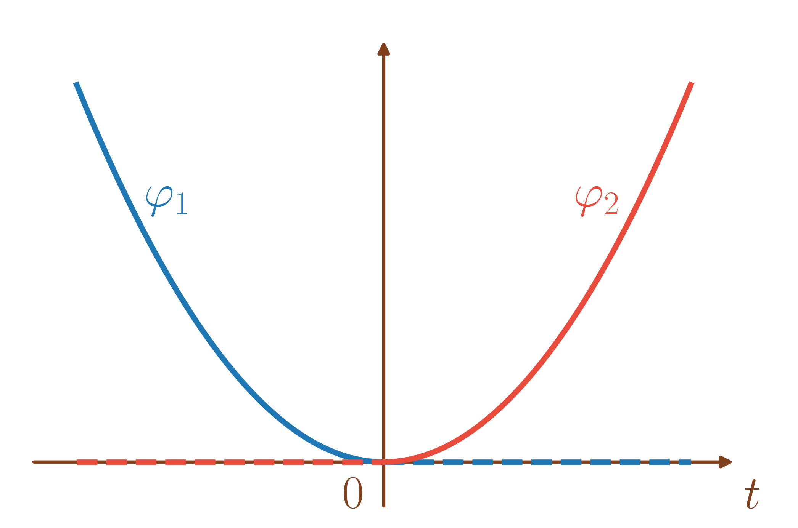
Par exemple, on a \(\varphi = \varphi_1-\varphi_2.\)
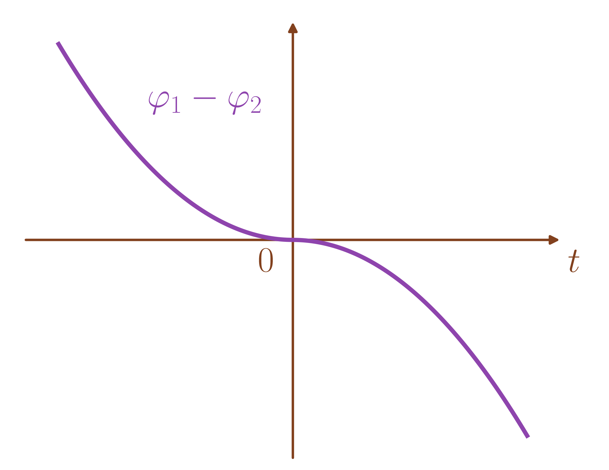
Alors, on constate que
Le problème de Cauchy associé à \(t_0 = 0\) et \(c_0 = 0\) a pour solution toute solution de l’équation,
Le problème de Cauchy associé à \(t_0 = 0\) et \(c_0 \in \mathbb{R}^{\star}\) n’a aucune solution.
L’ensemble des solutions d’une équation différentielle linéaire scalaire homogène d’ordre \(1\) sous forme non résolue en \(x'\) peut être \(\left\{0\right\}\) (donc de dimension \(0\)).
Déterminons les solutions de \[tx'-\frac{1}{2}x= 0\] sur \(\mathbb{R}.\)
Soit \(\varphi: \mathbb{R}\to \mathbb{R},\) \[\varphi \text{ solution sur $\mathbb{R}$} \iff \left\{\begin{array}{l} \varphi \text{ solution sur $\mathbb{R}^{+\star}$ (donc dérivable sur $\mathbb{R}^{+\star}$)} \\ \varphi \text{ solution sur $\mathbb{R}^{-\star}$ (donc dérivable sur $\mathbb{R}^{-\star}$)} \\ \varphi(0) = 0 \\ \varphi \text{ dérivable en $0.$} \end{array}\right.\] Or,
l’équation est sous forme résolue en \(x'\) sur \(\mathbb{R}^{+\star}\) telle que \[\forall t \in \mathbb{R}^{+\star}, t\varphi'(t)-\frac{1}{2}\varphi(t) = 0 \iff \forall t \in \mathbb{R}^{+\star}, \varphi'(t) = \frac{1}{2t}\varphi(t)\] On en déduit que \(\varphi\) s’écrit \(t \in \mathbb{R}^{+\star}\mapsto C_+e^{\frac{1}{2}\ln(t)}= C_+\sqrt{t}\) sur \(\mathbb{R}^{+\star}\) avec \(C_+ \in \mathbb{R}.\)
De même, \(\varphi\) s’écrit \(t \in \mathbb{R}^{-\star}\mapsto C_-e^{\frac{1}{2}\ln\left|t\right|}= {C_-}\sqrt{-t}\) sur \(\mathbb{R}^{-\star}\) avec \(C_- \in \mathbb{R}.\)
\(\varphi(0) = 0\) donne alors \(\begin{array}{lllll} \varphi & : & \mathbb{R} & \to & \mathbb{R} \\ & & t & \mapsto & \left\{ \begin{array}{ll} C_-\sqrt{-t} & \mbox{si $t<0,$} \\ 0 & \mbox{si $t=0,$} \\ C_+ \sqrt{t}& \mbox{si $t>0.$} \end{array} \right. \end{array}\)
Enfin, \(\varphi\) dérivable en \(0\) équivaut à \(\varphi\) dérivable à gauche et à droite en \(0\) avec \(\varphi_g'(0) = \varphi_d'(0).\)
Or, quand \(t \xrightarrow{} 0,\) \[\begin{aligned} & \text{Pour $t > 0,$} \frac{\varphi(t)-\varphi(0)}{t} = \frac{C_{+}}{\sqrt{t}} \text{ qui ne converge (vers $0$) que si $C_+ = 0.$} \\ & \text{Pour $t < 0,$} \frac{\varphi(t)-\varphi(0)}{t} = \frac{C_{-}}{\sqrt{-t}} \text{ qui ne converge (vers $0$) que si $C_- = 0.$} \end{aligned}\]
Donc l’unique solution sur \(\mathbb{R}\) est la fonction nulle.
L’ensemble des solutions d’une équation différentielle linéaire scalaire homogène d’ordre \(1\) sous forme non résolue en \(x'\) peut être de dimension infinie.
Considérons \[\sin t x' -2 \cos t x = 0\] sur \(\mathbb{R}.\)
Soit \(\varphi : \mathbb{R}\to \mathbb{R},\) \[\varphi \text{ solution sur $\mathbb{R}$} \iff \left\{ \begin{array}{l} \forall k \in \mathbb{Z},\ \varphi \text{ solution sur } ]k\pi,(k+1)\pi[ \\ \forall k \in \mathbb{Z},\ \varphi \text{ dérivable en } k\pi \\ \forall k \in \mathbb{Z},\ \varphi(k\pi)=0. \end{array} \right.\]
Or,
Sur chaque intervalle \(]k\pi,(k+1)\pi[,\) l’équation est sous forme résolue en \(x'\) et s’écrit \[\forall t \in ]k\pi,(k+1)\pi[,\quad \sin(t)\varphi'(t)-2\cos(t)\varphi(t)=0\] soit \[\forall t \in ]k\pi,(k+1)\pi[,\quad \varphi'(t)=2\frac{\cos(t)}{\sin(t)}\varphi(t).\] On en déduit que \[\varphi(t)=C_k e^{2\ln|\sin(t)|} =C_k\sin^2(t)\] sur \(]k\pi,(k+1)\pi[,\) avec \(C_k\in\mathbb{R}.\)
\(\varphi(k\pi)=0\) pour tout \(k\in\mathbb{Z}\) donne \[\varphi(t)= \left\{ \begin{array}{ll} C_k\sin^2(t) & \text{si }t\in ]k\pi,(k+1)\pi[,\\ 0 & \text{si }t=k\pi. \end{array} \right.\]
Enfin, pour tout \(k\in\mathbb{Z},\) on vérifie que \(\varphi\) est dérivable en \(k\pi.\)
En effet, pour \(h\) suffisamment petit, \[\frac{\varphi(k\pi+h)-\varphi(k\pi)}{h} = \left\{ \begin{array}{ll} C_{k-1}\dfrac{\sin^2(k\pi+h)}{h} & \text{si }h<0,\\[2mm] C_k\dfrac{\sin^2(k\pi+h)}{h} & \text{si }h>0. \end{array} \right.\] Or, lorsque \(h\to 0,\) \[\frac{\sin^2(k\pi+h)}{h} =\frac{\sin^2(h)}{h} \underset{h\to 0}{\sim} h \xrightarrow[h \to 0]{} 0.\] Les dérivées à gauche et à droite sont donc toutes deux nulles. Ainsi, \(\varphi\) est bien dérivable en tout \(k\pi.\)
On en déduit que toute solution s’écrit \[\begin{array}{lllll} \varphi & : & \mathbb{R} & \to & \mathbb{R} \\ & & t & \mapsto & \left\{ \begin{array}{ll} C_k\sin^2(t) & \text{si }t\in ]k\pi,(k+1)\pi[,\\ 0 & \text{si }t=k\pi. \end{array} \right. \end{array}\] Les constantes \((C_k)_{k\in\mathbb{Z}}\) étant arbitraires, on peut notamment choisir, pour chaque \(k\in\mathbb{Z},\) la fonction \[\varphi_k(t)= \left\{ \begin{array}{ll} \sin^2(t) & \text{si }t\in ]k\pi,(k+1)\pi[,\\ 0 & \text{sinon}. \end{array} \right.\]
La famille \((\varphi_k)_{k\in\mathbb{Z}}\) est une famille de solutions linéairement indépendantes (leurs intervalles de non-annulation sont deux à deux disjoints).
On en déduit que l’espace vectoriel des solutions est de dimension infinie.
Soient \(A \in \mathscr{M}_{n}(\mathbb{K}),\) \(P \in GL_n(\mathbb{K})\) et \(x : \mathbb{R}\to \mathbb{K}^n\) Alors, \[x \text{ solution de $\text{$\eqref{eq:systeme_lin_ordre_un_homo_constant}$}: x'=Ax$ sur $\mathbb{R}$} \iff y \text{ solution de $(H_{B}): y'=By$ sur $\mathbb{R}$}\] avec \(B = P^{-1}AP\) et \(y: t \in \mathbb{R}\mapsto P^{-1}x.\)
Commençons par remarquer que pour \(t \in \mathbb{R},\) \(y'(t) = P^{-1}x'(t).\) En effet, en notant \(\left(\tilde{p}_{ij}\right)_{1 \leq i,j \leq n}\) les coefficients de \(P^{-1},\) on a pour \(t \in \mathbb{R},\) \[y(t) = P^{-1}x(t) = \begin{pmatrix} \sum_{j=1}^n \tilde{p}_{1j}x_j(t) \\ \vdots \sum_{j=1}^n \tilde{p}_{nj}x_j(t) \\ \end{pmatrix}\] donc \[y'(t) = \begin{pmatrix} \sum_{j=1}^n \tilde{p}_{1j}x'_j(t) \\ \vdots \sum_{j=1}^n \tilde{p}_{nj}x'_j(t) \\ \end{pmatrix} = P^{-1}x'(t).\]
Alors, de plus, \[\begin{aligned} \forall t \in \mathbb{R}, x'(t) = Ax(t) & \iff \forall t \in \mathbb{R}, P^{-1}x'(t) = P^{-1}Ax(t) \\ & \iff \forall t \in \mathbb{R}, P^{-1}x'(t) = P^{-1}APP^{-1}x(t) \\ & \iff \forall t \in \mathbb{R},y'(t) =By(t) \\ \end{aligned}\]
Pour déterminer les solutions de \(\eqref{eq:systeme_lin_ordre_un_homo_constant}\), une méthode consiste donc à réduire \(A\) en déterminant une matrice \(P \in GL_n(\mathbb{K})\) telle que \(B = P^{-1}AP\) est diagonale ou triangulaire supérieure. Considérons \(x\) une solution de \(\eqref{eq:systeme_lin_ordre_un_homo_constant}\).
Si \(B\) est diagonale de la forme \(\begin{pmatrix} \lambda_1 & & & & \\ & \ddots & & (0) & \\ & & \ddots & & \\ & (0) & & \ddots & \\ & & & & \lambda_n \\ \end{pmatrix},\) \(y : \mathbb{R}\to \mathbb{K}^n\) est solution de \(y' = By\) (par la proposition [prop:reduire_A_pour_solutions]) donc \[\forall t \in \mathbb{R}, y'(t) = \begin{pmatrix} \lambda_1 & & & & \\ & \ddots & & (0) & \\ & & \ddots & & \\ & (0) & & \ddots & \\ & & & & \lambda_n \\ \end{pmatrix}y(t) \iff \begin{array}{l} \forall 1 \leq j \leq n, \forall t \in \mathbb{R}, \end{array} y_j'(t)= \lambda_j y_j(t).\] Ces \(n\) équations différentielles sont des équations différentielles scalaires d’ordre \(1\) que l’on sait résoudre (comme décrit précédemment) donc pour tout \(1 \leq j \leq n,\) il existe \(C_j \in \mathbb{K}\) tel que \[\forall t \in \mathbb{R}, y_j(t) = C_je^{\lambda_j t}\] puis on peut obtenir \(x\) en calculant \(x = Py.\)
Si \(B\) est triangulaire de la forme \(\begin{pmatrix} b_{11} & b_{12} & \ldots & \ldots & b_{1n} \\ & b_{22} & \ddots & \ddots & b_{2n} \\ & & \ddots & \ddots & \vdots \\ & (0) & & \ddots & b_{n-1n} \\ & & & & b_{nn} \\ \end{pmatrix},\) \(y : \mathbb{R}\to \mathbb{K}^n\) est solution de \(y' = By\) (par la proposition [prop:reduire_A_pour_solutions]) donc \[\begin{aligned} & \forall t \in \mathbb{R}, y'(t) = \begin{pmatrix} b_{11} & b_{12} & \ldots & \ldots & b_{1n} \\ & b_{22} & \ddots & \ddots & b_{2n} \\ & & \ddots & \ddots & \vdots \\ & (0) & & \ddots & b_{n-1n} \\ & & & & b_{nn} \\ \end{pmatrix}y(t) \\ & \iff \forall t \in \mathbb{R}, \left\{\begin{array}{lllll} y_1'(t) & = b_{11} y_1(t)& +\ldots+& b_{n-1n-1} y_{n-1}(t) +& b_{1n} y_n(t)\\ \vdots &&&& \\ y_{n-1}'(t) & = & &b_{n-1n-1}y_{n-1}(t) +& b_{n-1n} y_n(t)\\ y_n'(t) & = && & b_{nn} y_n(t)\\ \end{array} \right. \end{aligned}\] Puis, on peut résoudre ce système de proche en proche en remontant.
D’abord, il existe \(C_n\in \mathbb{K}\) tel que \[\forall t \in \mathbb{R}, y_n(t) = C_ne^{b_{nn} t}\]
Ensuite, on peut résoudre l’équation scalaire \(y_{n-1}'(t) = b_{n-1n-1} y_{n-1}(t)+b_{1n-1} y_{n}(t) =b_{n-1n-1}y_{n-1}(t)+ C_ne^{b_{nn} t}\) en considérant les solutions de l’équation homogène \(y_{n-1}' =b_{n-1n-1}y_{n-1}\) qui sont \(t \mapsto C_{n-1} e^{b_{n-1n-1}t}\) (\(C_{n-1} \in \mathbb{K}\)) puis en appliquant la variation de la constante (proposition [prop:variation_constante_scalaire]).
\(\vdots\)
On obtient ainsi \(y_1'(t) = b_{11} y_1(t) +\ldots + b_{1n} y_n(t)\) qui est une dernière équation scalaire qu’on peut résoudre en en considérant les solutions de l’équation homogène \(y_1' = b_{11} y_1\) qui sont \(t \mapsto C_1 e^{b_{11}t}\) (\(C_1 \in \mathbb{K}\)) puis en appliquant la variation de la constante (proposition [prop:variation_constante_scalaire]) car \(y_2,\ldots,y_{n}\) sont connues par les calculs précédents.
puis on peut obtenir \(x\) en calculant \(x = Py.\)
(Exercice 75 CCINP) On considère la matrice \(A=\begin{pmatrix} -1 & -4 \\ 1 & 3 \end{pmatrix}.\)
Démontrer que \(A\) n’est pas diagonalisable.
On note \(f\) l’endomorphisme de
\(\mathbb{R}^{2}\) canoniquement
associé à \(A.\)
Trouver une base \(\left(
v_{1},v_{2}\right)\) de \(\mathbb{R}^{2}\) dans laquelle la matrice
de \(f\) est de la forme \(\begin{pmatrix}
a & b \\
0 & c
\end{pmatrix}.\)
On donnera explicitement les valeurs de \(a,\) \(b\)
et \(c.\)
En déduire la résolution du système différentiel \(\left\{ \begin{array}{l} x^{\prime }=-x-4y \\ y^{\prime }=x+3y \end{array} \right.\) .
On calcule le polynôme caractéristique : \(\chi_A = \begin{vmatrix} X+1 & 4\\ -1 & X-3 \end{vmatrix} = (X+1)(X-3)+4 = X^2-2X+1 = (X-1)^2.\) Donc \(\mathop{\mathrm{Sp}}(A)=\{1\}.\)
Si \(A\) était diagonalisable, alors \(A\) serait semblable à \(I_2,\) donc égale à \(I_2.\) Ce n’est visiblement pas le cas et donc \(A\) n’est pas diagonalisable.
\(\chi_A\) étant scindé, \(A\) est trigonalisable. De plus, comme \(A\) n’est pas diagonalisable, \(\dim\mathop{\mathrm{Ker}}(A-I_2)=1.\)
Or, \(A-I_2 = \begin{pmatrix} -2 & -4\\ 1 & 2 \end{pmatrix},\) donc on a clairement \(v_1 = \begin{pmatrix} 2\\-1 \end{pmatrix} \in\mathop{\mathrm{Ker}}(A-I_2)\) et \(\mathop{\mathrm{Ker}}(A-I_2)=\mathop{\mathrm{Vect}}(v_1).\)
Ensuite, on complète \((v_1)\) en une base de \(\mathbb{R}^2,\) en considérant par exemple \(v_2 = \begin{pmatrix} 1\\0 \end{pmatrix}.\)
On a alors \(f(v_2)=Av_2 = \begin{pmatrix} -1\\1 \end{pmatrix} = \begin{pmatrix} -2\\1 \end{pmatrix} + \begin{pmatrix} 1\\0 \end{pmatrix} =-v_1+v_2.\)
Donc, dans la base \(\mathscr{B}=(v_1,v_2),\) on a \(\mathscr{M}_{\mathscr{B}}(f) = \begin{pmatrix} 1 & -1\\ 0 & 1 \end{pmatrix}.\) Ainsi, \(a=c=1\) et \(b=-1.\)
Soit \(X:t\in\mathbb{R}\mapsto \begin{pmatrix} x(t)\\y(t) \end{pmatrix},\) alors, en posant \(Y:t\in\mathbb{R}\mapsto P^{-1}X(t)= \begin{pmatrix} a(t)\\b(t) \end{pmatrix},\) avec \(P = \begin{pmatrix} 2 & 1\\ -1 & 0 \end{pmatrix},\) on a \(X'(t)=AX(t)\iff Y'(t)=BY(t),\) avec \(B=P^{-1}AP = \begin{pmatrix} 1 & -1\\ 0 & 1 \end{pmatrix}.\)
Cela nous amène à résoudre le système \(\begin{cases} a'(t)=a(t)-b(t),\\ b'(t)=b(t). \end{cases}\)
Donc :
Il existe \(C_b\in\mathbb{R}\) tel que \(b(t)=C_be^t\) pour tout \(t\in\mathbb{R}.\)
D’autre part, une solution de l’équation homogène \(a'(t)=a(t)\) est \(\widetilde{a}:t\in\mathbb{R}\mapsto \widetilde{C}_ae^t.\)
En appliquant la variation de la constante, on cherche \(a\) sous la forme \(a:t\in\mathbb{R}\mapsto C_a(t)e^t,\) avec \(C_a\) une fonction de classe \(\mathscr{C}^1.\)
On a alors \(a'(t)=a(t)-C_be^t\iff C_a'(t)e^t=-C_be^t\iff C_a'(t)=-C_b.\)
Donc les solutions s’écrivent \(a:t\in\mathbb{R}\mapsto (C_a-C_bt)e^t,\) avec \(C_a\in\mathbb{R}.\)
Finalement, pour tout \(t\in\mathbb{R},\) \(Y(t)= \begin{pmatrix} (C_a-C_bt)e^t\\ C_be^t \end{pmatrix},\) puis \(X(t)=PY(t)= \begin{pmatrix} 2 & 1\\ -1 & 0 \end{pmatrix} \begin{pmatrix} (C_a-C_bt)e^t\\ C_be^t \end{pmatrix} = \begin{pmatrix} (2C_a+C_b-2C_bt)e^t\\ (-C_a+C_bt)e^t \end{pmatrix}.\)
Ainsi, l’ensemble des solutions du système différentiel est donné par \(\left\{ \begin{aligned} x(t)&=(2C_a+C_b-2C_bt)e^t,\\ y(t)&=(-C_a+C_bt)e^t, \end{aligned} \right. \quad (C_a,C_b)\in\mathbb{R}^2.\)
Soient \(b : [0,+\infty[ \to \mathbb{C}\) continue telle que \(b(t) \xrightarrow[t \to +\infty]{} 0\) et \(\lambda \in \mathbb{C}\) tel que \(\mathop{\mathrm{Re}}(\lambda) > 0.\) On considère \[\label{eq:exoc_tend_Vers_0_scal} \tag{1} x' = \lambda x+b(t).\]
Montrer que \[\forall \varphi \in \mathcal{S}_{$\eqref{eq:exoc_tend_Vers_0_scal}$}, \varphi(t) \xrightarrow[t \to +\infty]{} 0.\]
Soient \(b : [0,+\infty[ \to \mathbb{C}^n\) continue telle que \(b(t) \xrightarrow[t \to +\infty]{} 0\) et \(A \in \mathscr{M}_{n}(\mathbb{C})\) telle que pour tout \(\lambda \in \mathop{\mathrm{Sp}}(A), \mathop{\mathrm{Re}}(\lambda) < 0.\) On considère \[\label{eq:exoc_tend_Vers_0_mat} \tag{2} x' = Ax+b(t).\]
Montrer que \[\forall \varphi \in \mathcal{S}_{$\eqref{eq:exoc_tend_Vers_0_mat}$}, \varphi(t) \xrightarrow[t \to +\infty]{} 0.\]
Déterminons les solutions de \(\eqref{eq:exoc_tend_Vers_0_scal}\).
Les solutions de l’équation homogène \(x' = \lambda x\) associée à \(\eqref{eq:exoc_tend_Vers_0_scal}\)s’écrivent \(t \in [0,+\infty[ \mapsto Ce^{\lambda t}\) avec \(C \in \mathbb{C}.\)
On applique maintenant la variation de la constante en cherchant une solution particulière sous la forme \(\varphi_0: t \in [0,+\infty[ \mapsto \alpha(t) e^{\lambda t}\) avec \(\alpha\) dérivable. On a alors \[\begin{aligned} \text{$\varphi_0$ solution de~$\eqref{eq:exoc_tend_Vers_0_scal}$} & \iff \forall t \in [0,+\infty[, \varphi'(t) = \lambda \varphi(t) + b(t) \\ & \iff \forall t \in [0,+\infty[, \alpha'(t)e^{\lambda t} = b(t) \\ & \iff \iff \forall t \in [0,+\infty[, \alpha'(t) = b(t)e^{-\lambda t}. \end{aligned}\] On considère alors \(\varphi_0 : t \in [0,+\infty[ \mapsto e^{\lambda t}\int_{0}^t b(u)e^{-\lambda u}du.\)
On en déduit que \[\mathcal{S}_{$\eqref{eq:exoc_tend_Vers_0_scal}$} = \left\{ \varphi : t \in [0,+\infty[ \mapsto e^{\lambda t}\int_{0}^t b(u)e^{-\lambda u}du+ Ce^{\lambda t}/ C\in \mathbb{C}. \right\}\]
Alors, soit \(\varphi \in \mathcal{S}_{$\eqref{eq:exoc_tend_Vers_0_scal}$}\) telle que \(\varphi : t \in [0,+\infty[ \mapsto e^{\lambda t}\int_{0}^t b(u)e^{-\lambda u}du+ Ce^{\lambda t}\) avec \(C \in \mathbb{C}.\)
D’abord, pour tout \(t \in [0,+\infty[,\) \(\left|Ce^{\lambda t}\right| = Ce^{\mathop{\mathrm{Re}}(\lambda)t} \xrightarrow[t \to +\infty]{} 0\) car \(\mathop{\mathrm{Re}}(\lambda) < 0.\)
Ensuite, pour \(t \in [0,+\infty[,\) \[\begin{aligned} \left|e^{\lambda t}\int_{0}^t b(u)e^{-\lambda u}du\right| & \leq e^{\mathop{\mathrm{Re}}(\lambda)t} \int_{0}^t \left|b(u)\right|e^{-\mathop{\mathrm{Re}}(\lambda) u}du. \end{aligned}\]
Or, par hypothèse, \(\left|b(u)\right| = \underset{u\to +\infty}{o}(1)\) donc \(\left|b(u)\right|e^{-\mathop{\mathrm{Re}}(\lambda) u} = \underset{u\to +\infty}{o}(e^{-\mathop{\mathrm{Re}}(\lambda) u})\) avec \(\int_0^{+\infty} e^{-\mathop{\mathrm{Re}}(\lambda) u}du\) qui est divergente (car \(\mathop{\mathrm{Re}}(\lambda) < 0\)).
On en déduit, par intégration des relations de comparaisons que \[\int_{0}^t \left|b(u)\right|e^{-\mathop{\mathrm{Re}}(\lambda) u}du = \underset{t\to +\infty}{o}\underbrace{\left(\int_{0}^te^{-\mathop{\mathrm{Re}}(\lambda) u}\right)}_{= \frac{e^{-Re(\lambda)t}-1}{\mathop{\mathrm{Re}}(\lambda)}}\] Donc \[e^{\mathop{\mathrm{Re}}(\lambda)t}\int_{0}^t b(u)e^{-\lambda u}du = \underset{t\to +\infty}{o}\left(\frac{1-e^{\mathop{\mathrm{Re}}(\lambda)t}}{\mathop{\mathrm{Re}}(\lambda)}\right) = \underset{t\to +\infty}{o}\left(1\right).\] puis \(e^{\lambda t}\int_{0}^t b(u)e^{-\lambda u}du \xrightarrow[t \to +\infty]{} 0.\)
Finalement, on a bien \[\varphi(t) \xrightarrow[t \to +\infty]{} 0.\]
\(A\) est trigonalisable comme toute matrice de \(\mathscr{M}_{n}(\mathbb{C})\) donc il existe \(P \in GL_n(\mathbb{C})\) telle que \[B = P^{-1}AP =\begin{pmatrix} \lambda_1 & b_{12} & \ldots & \ldots & b_{1n} \\ & \lambda_2 & \ddots & \ddots & b_{2n} \\ & & \ddots & \ddots & \vdots \\ & (0) & & \ddots & b_{n-1n} \\ & & & & \lambda_n \\ \end{pmatrix}\] avec \(\lambda_1,\ldots,\lambda_n \in \mathop{\mathrm{Sp}}(A)\) telles que \(\mathop{\mathrm{Re}}(\lambda_j) < 0\) pour \(1 \leq j \leq n.\) De plus, soit \(\varphi\) solution de \(\eqref{eq:exoc_tend_Vers_0_mat}\), \(y : t \in [0,+\infty[ \to P^{-1}\varphi(t) \in \mathbb{C}^n\) est solution de \(y' = By\) (par la proposition [prop:reduire_A_pour_solutions]) donc \[\begin{aligned} & \forall t \in \mathbb{R}, y'(t) = \begin{pmatrix} \lambda_1 & b_{12} & \ldots & \ldots & b_{1n} \\ & \lambda_2 & \ddots & \ddots & b_{2n} \\ & & \ddots & \ddots & \vdots \\ & (0) & & \ddots & b_{n-1n} \\ & & & & \lambda_n \\ \end{pmatrix}y(t) \\ & \iff \forall t \in \mathbb{R}, \left\{\begin{array}{lllll} y_1'(t) & = \lambda_1 y_1(t)& +\ldots+& b_{n-1n-1} y_{n-1}(t) +& b_{1n} y_n(t)\\ \vdots &&&& \\ y_{n-1}'(t) & = & &\lambda_{n-1}y_{n-1}(t) +& b_{n-1n} y_n(t)\\ y_n'(t) & = && & \lambda_n y_n(t)\\ \end{array} \right. \end{aligned}\] Alors,
\(y_n' = \lambda_n y_n\) donc par la question précédente, \(y_n(t) \xrightarrow[t \to +\infty]{} 0.\)
Ensuite, \(y_{n-1}' = \lambda_{n-1}y_{n-1}+\underbrace{y_n(t)}_{\xrightarrow[t \to +\infty]{} 0}\) donc par la question précédente, \(y_{n-1}(t) \xrightarrow[t \to +\infty]{} 0.\)
\(\vdots\)
On a aussi \(y_1 = \lambda_{1} y_1+ \underbrace{b_{12} y_2(t)+\ldots + b_{1n} y_n(t)}_{\xrightarrow[t \to +\infty]{} 0}\) donc par la question précédente, \(y_{1}(t) \xrightarrow[t \to +\infty]{} 0.\)
On en déduit alors \(\varphi(t) = Py(t) \xrightarrow[t \to +\infty]{} 0.\)
Soient \(I\) un intervalle de \(\mathbb{K},\) \(n \in \mathbb{N}^{\star}\) et \(a_0,\ldots,a_n\) \(n+1\) fonctions continues de \(I\) dans \(\mathbb{K}\) et \(b\) une fonction continue de \(I\) dans \(\mathbb{K}.\)
Une équation différentielle linéaire scalaire d’ordre \(n\) consiste à rechercher une fonction inconnue \(\begin{array}{lllll} x & : & I & \to & \mathbb{K} \\ & & t & \mapsto & x(t) \end{array}\) telle que
\[\forall t \in I, a_n(t)x^{(n)}(t)+\ldots+a_1(t)x'(t)+a_0(t)x(t) = b(t).\]
On le note alors (un peu abusivement) \[\label{eq:equation_lin_ordre_n_scalaire} \tag{$1_n$} a_n(t)x^{(n)}+\ldots+a_1(t)x'+a_0(t)x = b(t).\]
Si \(b = 0,\) on dit que l’équation \(\eqref{eq:equation_lin_ordre_n_scalaire}\)est homogène.
L’équation différentielle homogène linéaire scalaire d’ordre \(n\) \[\label{eq:equation_lin_ordre_n_scalaire_homo} \tag{$H_{\text{\ref{eq:equation_lin_ordre_n_scalaire}}}$} a_n(t)x^{(n)}+\ldots+a_1(t)x'+a_0(t)x =0.\] est appelé l’équation différentielle homogène associée à \(\eqref{eq:equation_lin_ordre_n_scalaire}\).
Soit \(J \subset I\) un intervalle. On appelle solution sur \(J\) de l’équation \(\eqref{eq:equation_lin_ordre_n_scalaire}\)toute fonction \(\begin{array}{lllll} \varphi & : & J & \to & \mathbb{K} \\ & & t & \mapsto & \varphi(t) \end{array}\) telle que \[\forall t \in J, a_n(t)\varphi^{(n)}(t)+\ldots+a_1(t)\varphi'(t)+a_0(t)\varphi(t) = b(t).\]
L’arc paramétré \(\mathscr{C}= \varphi(J)\) est appelé la trajectoire de \(\varphi.\)
Soit \(t_0 \in I\) et \(c_0,\ldots,c_{n-1} \in E,\) \[\label{eq:probleme_Cauch_eq:equation_lin_ordre_n_scalaire} \tag{$P_{\text{$\eqref{eq:equation_lin_ordre_n_scalaire}$},t_0,c_0,\ldots,c_{n-1}}$} \left\{ \begin{array}{ll} a_n(t)x^{(n)}+\ldots+a_1(t)x'+a_0(t)x & = b(t) \\ x(t_0) & = c_0 \\ x'(t_0) & = c_1 \\ \vdots & \\ x^{(n-1)}(t_0) & = c_{n-1} \end{array} \right.\] est appelé un problème de Cauchy.
Si \(J \subset I\) est un intervalle de \(\mathbb{R}\) et \(t_0 \in J\) alors une solution de ce problème de Cauchy sur \(J\) est une fonction \(\varphi\) telle que \[\left\{ \begin{array}{l} \varphi \text{ est solution de~$\eqref{eq:equation_lin_ordre_n_scalaire}$sur $J$} \\ \varphi(t_0) = c_0 \\ \varphi'(t_0) = c_1 \\ \vdots \\ \varphi^{(n-1)}(t_0) = c_{n-1} \end{array} \right..\]
On dit que l’équation \(\eqref{eq:equation_lin_ordre_n_scalaire}\)est sous forme résolue en \(x^{(n)}\) si \[\forall t \in I, a_n(t) \neq 0.\] Dans ce cas, l’équation \(\eqref{eq:equation_lin_ordre_n_scalaire}\)équivaut à \[x^{(n)}= -\frac{a_{n-1}(t)}{a_n(t)}x^{(n-1)}-\ldots-\frac{a_1(t)}{a_n(t)}x'-\frac{a_0(t)}{a_n(t)}x + \frac{b(t)}{a_n(t)}.\]
(Superposition de solutions) On considère une deuxième équation différentielle linéaire d’ordre 1 qui s’écrit \[\label{eq:equation_lin_ordre_n_scalaire_2} \tag{$1'_n$} a_n(t)x^{(n)}+\ldots+a_1(t)x'+a_0(t)x = c(t)\] avec \(c: I \to E\) continue.
Soient \(\varphi_1,\varphi_2\) telles que \(\varphi_1\) est solution de \(\eqref{eq:equation_lin_ordre_n_scalaire}\)sur \(I\) et \(\varphi_2\) est solution de \(\eqref{eq:equation_lin_ordre_n_scalaire_2}\)sur \(I.\)
Alors, soient \(\lambda,\mu \in K,\) \(\lambda \varphi_1+\mu \varphi_2\) est solution de \(a_n(t)x^{(n)}+\ldots+a_1(t)x'+a_0(t)x = \lambda b(t)+ \mu b_1(t).\)
Comme combinaison linéaire de fonctions \(n\) fois dérivables sur \(I,\) \(\lambda \varphi_1+\mu \varphi_2\) est \(n\) fois dérivable sur \(I\) et pour tout \(t \in I,\) \[\begin{aligned} & a_n(t)\left(\lambda \varphi_1+\mu \varphi_2\right)^{(n)}(t)+\ldots+a_0(t)\left(\lambda \varphi_1+\mu \varphi_2\right)(t) \\ & = \lambda \left(a_n(t)\varphi_1^{(n)}(t)+\ldots+a_0(t)\varphi_1(t)\right) + \mu \left(a_n(t)\varphi_2^{(n)}(t)+\ldots+a_0(t)\varphi_2(t)\right) \\ & = \lambda b(t)+\mu c(t) \\ \end{aligned}\]
\(\mathcal{S}_{\text{\ref{eq:equation_lin_ordre_n_scalaire_homo}}}\) est un \(\mathbb{K}\)-espace vectoriel,
Si \(\varphi_0 \in \mathcal{S}_{\text{\ref{eq:equation_lin_ordre_n_scalaire}}}\) alors \(\mathcal{S}_{\text{\ref{eq:equation_lin_ordre_n_scalaire}}} = \varphi_0+\mathcal{S}_{\text{\ref{eq:equation_lin_ordre_n_scalaire_homo}}}.\)
\(\mathcal{S}_{\text{\ref{eq:equation_lin_ordre_n_scalaire_homo}}} \subset \mathscr{C}(I,E)\) et montrons que c’en est un sous-espace vectoriel.
De plus,
On a clairement \(0 \in \mathcal{S}_{\text{\ref{eq:equation_lin_ordre_n_scalaire_homo}}}\) (la fonctionne nulle).
Soient \(\lambda, \mu \in \mathbb{K}\) et \(\psi_1,\psi_2 \in \mathcal{S}_{\text{\ref{eq:equation_lin_ordre_n_scalaire_homo}}}\) on a \(\lambda \psi_1+\mu \psi_2 \in \mathcal{S}_{\text{\ref{eq:equation_lin_ordre_n_scalaire_homo}}}\) par la proposition [prop:superposition_ordre_n].
Donc \(\mathcal{S}_{\text{\ref{eq:equation_lin_ordre_n_scalaire_homo}}}\) est un sous-espace vectoriel de \(\mathscr{C}(I,E).\)
Montrons \(\mathcal{S}_{\text{\ref{eq:equation_lin_ordre_n_scalaire}}} = \varphi_0+\mathcal{S}_{\text{\ref{eq:equation_lin_ordre_n_scalaire_homo}}}\) par double inclusion.
\(\mathcal{S}_{\text{\ref{eq:equation_lin_ordre_n_scalaire}}} \supset \varphi_0+\mathcal{S}_{\text{\ref{eq:equation_lin_ordre_n_scalaire_homo}}}.\)
Soit \(\psi \in \mathcal{S}_{\text{\ref{eq:equation_lin_ordre_n_scalaire_homo}}}\) alors \(\varphi_0+\psi \in \mathcal{S}_{\text{\ref{eq:equation_lin_ordre_n_scalaire}}}\) par la proposition [prop:superposition_ordre_n].
\(\mathcal{S}_{\text{\ref{eq:equation_lin_ordre_n_scalaire}}} \subset \varphi_0+\mathcal{S}_{\text{\ref{eq:equation_lin_ordre_n_scalaire_homo}}}.\)
Soit \(\varphi \in \mathcal{S}_{\text{\ref{eq:equation_lin_ordre_n_scalaire}}}\) alors \(\varphi-\varphi_0 \in \mathcal{S}_{\text{\ref{eq:equation_lin_ordre_n_scalaire_homo}}}\) par la proposition [prop:superposition_ordre_n]
donc \(\varphi = \varphi_0+\varphi-\varphi_0 \in \varphi_0+\mathcal{S}_{\text{\ref{eq:equation_lin_ordre_n_scalaire_homo}}}.\)
Dans toute cette partie, on suppose\(\eqref{eq:equation_lin_ordre_n_scalaire}\)sous forme résolue en \(x^{(n)}\) ie \(a_n\) ne s’annule pas sur \(I.\)
On définit les applications
\[\begin{array}{lllll} A & : & I & \to & \mathscr{M}_{n}(\mathbb{K}) \\ & & t & \mapsto & \begin{pmatrix} 0 & 1 & 0 & \cdots & 0 \\ 0 & 0 & 1 & \ddots & \vdots \\ \vdots & \vdots & \ddots & \ddots & 0 \\ 0 & 0 & \cdots & 0 & 1 \\ -\tfrac{a_0(t)}{a_n(t)} & -\tfrac{a_1(t)}{a_n(t)} & -\tfrac{a_2(t)}{a_n(t)} & \cdots & -\tfrac{a_{n-1}(t)}{a_n(t)} \end{pmatrix} \end{array} \text{ et } \begin{array}{lllll} B & : & I & \to & \mathbb{K}^n \\ & & t & \mapsto & \begin{pmatrix} 0 \\ \vdots \\ 0 \\ \tfrac{b(t)}{a_n(t)} \end{pmatrix} \end{array}\] ainsi que le système différentiel linéaire d’ordre \(1\) associé : \[\label{eq:systeme_lin_ordre_un_associe_ordre_n} \tag{$S_{\text{$\eqref{eq:equation_lin_ordre_n_scalaire}$}}$} X' = A(t)X + B(t).\] Alors une fonction \(\varphi : I \to \mathbb{K}\) est solution de\(\eqref{eq:equation_lin_ordre_n_scalaire}\)si, et seulement si, \(\varphi\) est \(n\) fois dérivable sur \(I\) et l’application \[\widehat{\varphi} : t \in I \longmapsto \begin{pmatrix} \varphi(t) \\ \varphi'(t) \\ \vdots \\ \varphi^{(n-1)}(t) \end{pmatrix} \in \mathbb{K}^n\] est solution de\(\eqref{eq:systeme_lin_ordre_un_associe_ordre_n}\).
Réciproquement, si \(\begin{array}{lllll} \widehat{\varphi} & : & I & \to & \mathbb{K}^n \\ & & t & \mapsto & \begin{pmatrix} \varphi_1(t) \\ \vdots \\ \varphi_n(t) \end{pmatrix} \end{array}\) est solution de\(\eqref{eq:systeme_lin_ordre_un_associe_ordre_n}\), alors sa première composante \(\varphi_1\) est solution de\(\eqref{eq:equation_lin_ordre_n_scalaire}\)et \(\varphi_2 = \varphi_1', \varphi_3 = \varphi_1'', \ldots, \varphi_n = \varphi_1^{(n-1)}.\)
(\(\Longrightarrow.\))
Soit \(\varphi \in \mathcal{S}_{\text{\ref{eq:equation_lin_ordre_n_scalaire}}}.\) Par définition, \(\varphi\) est \(n\) fois dérivable sur \(I\) et vérifie, pour tout \(t \in I,\) \[a_n(t)\varphi^{(n)}(t) + \ldots+ a_0(t) \varphi(t) = b(t),\] soit, puisque \(a_n\) ne s’annule pas sur \(I,\) \[\varphi^{(n)}(t) = - \frac{a_{n-1}(t)}{a_n(t)}\varphi^{(n-1)}(t)-\ldots- \frac{a_{0}(t)}{a_n(t)}\varphi(t) + \frac{b(t)}{a_n(t)}.\] Posons alors \(\widehat{\varphi} = \begin{pmatrix} \varphi \\ \vdots \\ \varphi^{(n-1)} \end{pmatrix}.\) Comme \(\varphi\) est \(n\) fois dérivable sur \(I,\) chacune de ses dérivées jusqu’à l’ordre \(n-1\) est dérivable sur \(I,\) donc \(\widehat{\varphi}\) est dérivable sur \(I\) et, pour tout \(t \in I,\) \[\begin{aligned} \widehat{\varphi}'(t) & = \begin{pmatrix} \varphi'(t) \\ \varphi''(t) \\ \vdots \\ \varphi^{(n-1)}(t) \\ \varphi^{(n)}(t) \end{pmatrix} \\ & = \begin{pmatrix} \varphi'(t) \\ \varphi''(t) \\ \vdots \\ \varphi^{(n-1)}(t) \\ - \frac{a_{n-1}(t)}{a_n(t)}\varphi^{(n-1)}(t)-\ldots- \frac{a_{0}(t)}{a_n(t)}\varphi(t) + \frac{b(t)}{a_n(t)} \end{pmatrix} \\ & = A(t)\widehat{\varphi}(t) + B(t). \end{aligned}\] Ainsi, \(\widehat{\varphi} \in \mathcal{S}_{\text{\ref{eq:systeme_lin_ordre_un_associe_ordre_n}}}.\)
(\(\Longleftarrow.\)) Soit \(\begin{array}{lllll} \widehat{\varphi} & : & I & \to & \mathbb{K}^n \\ & & t & \mapsto & \begin{pmatrix} \varphi_1(t) \\ \vdots \\ \varphi_n(t) \end{pmatrix} \end{array} \in \mathcal{S}_{\text{\ref{eq:systeme_lin_ordre_un_associe_ordre_n}}}.\) Par définition, \(\widehat{\varphi}\) est dérivable sur \(I,\) ce qui signifie que chaque composante \(\varphi_k\) (\(1 \le k \le n\)) est dérivable sur \(I,\) et pour tout \(t \in I,\) l’égalité matricielle \(\widehat{\varphi}'(t) = A(t)\widehat{\varphi}(t) + B(t)\) se réécrit composante par composante sous la forme du système : \[\label{eq:proof_sys_developpe} \left\{ \begin{aligned} \varphi_1'(t) &= \varphi_2(t) \\ \varphi_2'(t) &= \varphi_3(t) \\ &\;\;\vdots \\ \varphi_{n-1}'(t) &= \varphi_n(t) \\ \varphi_n'(t) &= - \frac{a_{n-1}(t)}{a_n(t)}\varphi_{n}(t)-\ldots- \frac{a_{0}(t)}{a_n(t)}\varphi_1(t) + \frac{b(t)}{a_n(t)}. \end{aligned} \right.\] On a alors aussi
\(\varphi_2 = \varphi_1',\)
\(\varphi_3 = \varphi_2' = \varphi_1'',\)
\(\vdots,\)
\(\varphi_n = \varphi_{n-1}' = \varphi_1^{(n-1)},\)
En particulier, \(\varphi_1^{(n-1)} = \varphi_n\) est dérivable sur \(I\) donc \(\varphi_1\) est \(n\) fois dérivable sur \(I\) et \(\varphi_1^{(n)} = \varphi_n'.\) En remplaçant chaque \(\varphi_{k+1}\) par \(\varphi_1^{(k)}\) dans la dernière ligne de\(\eqref{eq:proof_sys_developpe}\), on obtient, pour tout \(t \in I\) : \[\varphi_1^{(n)}(t) = - \frac{a_{n-1}(t)}{a_n(t)}\varphi^{(n-1)}(t)-\ldots- \frac{a_{0}(t)}{a_n(t)}\varphi(t) + \frac{b(t)}{a_n(t)},\] ce qui équivaut à \(\varphi_1 \in \mathcal{S}_{\text{\ref{eq:equation_lin_ordre_n_scalaire}}},\) et l’on a bien \(\widehat{\varphi} = (\varphi_1, \varphi_1', \dots, \varphi_1^{(n-1)})^T.\)
(Théorème de Cauchy pour les équations différentielles scalaires d’ordre \(n\)) Soit \(t_0 \in I\) et \(c_0,\ldots,c_{n-1} \in \mathbb{K}\) alors\(\eqref{eq:probleme_Cauch_eq:equation_lin_ordre_n_scalaire}\)admet une unique solution sur \(I.\)
(Existence). En reprenant le système \(\eqref{eq:systeme_lin_ordre_un_associe_ordre_n}\)de la proposition [prop:syt_lin_associe_scalairE_ordre_n]. Par le théorème de Cauchy linéaire, il existe une solution \(\begin{array}{lllll} \widehat{\varphi} & : & I & \to & \mathbb{K}^n \\ & & t & \mapsto & \begin{pmatrix} \varphi_1(t) \\ \vdots \\ \varphi_n(t) \end{pmatrix} \end{array}\) au problème de Cauchy associé à\(\eqref{eq:systeme_lin_ordre_un_associe_ordre_n}\), \(t_0\) et \(\begin{pmatrix} c_0 \\ c_1 \\ \vdots \\ c_{n-1} \end{pmatrix} \in \mathbb{K}^n.\)
De plus, par la proposition [prop:syt_lin_associe_scalairE_ordre_n] \(\varphi_1\) est solution de \(\eqref{eq:equation_lin_ordre_n_scalaire}\)et \(\widehat{\varphi} = \begin{pmatrix} \varphi_1 \\ \vdots \\ \varphi_1'^{(n-1)} \end{pmatrix}.\)
On a donc en particulier \(\begin{pmatrix} \varphi_1(t_0) \\ \vdots \\ \varphi_1'^{(n-1)}(t_0) \end{pmatrix} = \begin{pmatrix} c_0 \\ \vdots \\ c_{n-1} \end{pmatrix}\) donc \(\varphi_1\) est solution de \(\eqref{eq:probleme_Cauch_eq:equation_lin_ordre_n_scalaire}\).
(Unicité). Supposons qu’il existe \(\varphi,\psi\) solutions de \(\eqref{eq:probleme_Cauch_eq:equation_lin_ordre_n_scalaire}\).
Alors, par la proposition [prop:syt_lin_associe_scalairE_ordre_n], \(\widehat{\varphi} =\begin{pmatrix} \varphi \\ \varphi' \\ \vdots \\ \varphi^{(n-1)} \end{pmatrix}\) et \(\widehat{\psi} =\begin{pmatrix} \psi \\ \psi' \\ \vdots \\ \psi^{(n-1)} \end{pmatrix}\) sont solutions de \(\eqref{eq:systeme_lin_ordre_un_associe_ordre_n}\).
De plus, \(\widehat{\varphi}(t_0) = \widehat{\psi}(t_0) = \begin{pmatrix} c_0 \\ \vdots \\ c_{n-1} \end{pmatrix}\) donc \(\widehat{\varphi}\) et \(\widehat{\psi}\) sont toutes deux solutions du problème de Cauchy associé à\(\eqref{eq:systeme_lin_ordre_un_associe_ordre_n}\), \(t_0\) et \(\begin{pmatrix} c_0 \\ c_1 \\ \vdots \\ c_{n-1} \end{pmatrix} \in \mathbb{K}^n.\)
Le théorème de Cauchy garantissant l’unicité de cette solution, on a \(\widehat{\varphi} = \widehat{\psi}\) donc \(\varphi = \psi.\)
On redonne ici les conséquences du théorème de Cauchy, adaptées au cas scalaire d’ordre \(n\) (résolu), sans redonner les preuves.
(Similaire au corollaire [cor:Cauchy_bijections_CI]) Soit \(t_0 \in I,\)
\(\begin{array}{lllll} \gamma_{t_0} & : & \mathcal{S}_{\text{\ref{eq:equation_lin_ordre_n_scalaire_homo}}} & \to & \mathbb{K}^n \\ & & \psi & \mapsto & \begin{pmatrix} \psi(t_0) \\ \psi'(t_0) \\ \vdots \\ \psi^{(n-1)}(t_0) \end{pmatrix} \end{array}\) est une bijection linéaire et donc \(\dim \mathcal{S}_{\text{\ref{eq:equation_lin_ordre_n_scalaire_homo}}} = n.\)
\(\begin{array}{llll} & \mathcal{S}_{\text{\ref{eq:equation_lin_ordre_n_scalaire}}} & \to & \mathbb{K}^n \\ & \varphi & \mapsto & \begin{pmatrix} \varphi(t_0) \\ \varphi'(t_0) \\ \vdots \\ \varphi^{(n-1)}(t_0) \end{pmatrix} \end{array}\) est une bijection. En particulier, \(\mathcal{S}_{\text{\ref{eq:equation_lin_ordre_n_scalaire}}} \neq \emptyset\) et est un espace affine de dimension \(n,\) dirigé par \(\mathcal{S}_{\text{\ref{eq:equation_lin_ordre_n_scalaire_homo}}}.\)
(Similaire au corollaire [cor:syst_line_ordre_1_egalitE_en_t_donc_egalite]) Soient \(\varphi_1,\varphi_2 \in \mathcal{S}_{\text{\ref{eq:equation_lin_ordre_n_scalaire}}}\) alors \[\exists t_0 \in I / \left\{ \begin{array}{ll} \varphi_1(t_0) & = \varphi_2(t_0) \\ \vdots & \\ \varphi_1^{(n-1)}(t_0) & = \varphi_2^{(n-1)}(t_0) \end{array} \right.\Longrightarrow \varphi_1 = \varphi_2.\]
(Similaire au corollaire [cor:syst_lin_ordre_1_restriction]) Soit \(J\) un sous-intervalle de \(I,\) on note \(\mathcal{S}^J_{\text{\ref{eq:equation_lin_ordre_n_scalaire}}} = \left\{\varphi: I \to \mathbb{K}\text{ solution de~$\eqref{eq:equation_lin_ordre_n_scalaire}$sur } J\right\} .\)
Alors, \(\begin{array}{llll} & \mathcal{S}_{\text{\ref{eq:equation_lin_ordre_n_scalaire}}} & \to & \mathcal{S}^J_{\text{\ref{eq:equation_lin_ordre_n_scalaire}}} \\ & \varphi & \mapsto & \varphi_{\mid J} \end{array}\) est une bijection.
(Similaire au corollaire [cor:bijection_lin_SH])
Soit \(\psi \in \mathcal{S}_{\text{\ref{eq:equation_lin_ordre_n_scalaire_homo}}},\) \[\exists t_0 \in I / \left\{ \begin{array}{ll} \psi(t_0) & = 0 \\ \vdots & \\ \psi^{(n-1)}(t_0) & = 0 \end{array} \right. = 0 \Longrightarrow \psi = 0.\]
Soient \((\psi_1,\ldots,\psi_k)\) une famille de \(\mathcal{S}_{\text{\ref{eq:equation_lin_ordre_n_scalaire_homo}}}\) et \(t_0 \in I.\) Alors en notant \(\widehat{\psi}_j = \begin{pmatrix} \psi_j \\ \psi_j' \\ \vdots \\ \psi_j^{(n-1)} \end{pmatrix}\) pour \(1 \leq j \leq k\) (comme dans la proposition [prop:syt_lin_associe_scalairE_ordre_n]),
\(\mathop{\mathrm{rg}}(\psi_1,\ldots,\psi_k) = \mathop{\mathrm{rg}}(\widehat{\psi}_1(t_0),\ldots,\widehat{\psi}_k(t_0)),\)
\((\psi_1,\ldots,\psi_k)\) libre \(\iff\) \((\widehat{\psi}_1(t_0),\ldots,\widehat{\psi}_k(t_0))\) libre.
\((\psi_1,\ldots,\psi_k)\) génère \(\mathcal{S}_{\text{\ref{eq:equation_lin_ordre_n_scalaire_homo}}}\) \(\iff\) \((\widehat{\psi}_1(t_0),\ldots,\widehat{\psi}_k(t_0))\) génère \(\mathbb{K}^n.\)
(Similaire à la définition [def:Wronskien_sys_lin_ordre_1])
Soient \((\psi_1,\ldots,\psi_n)\) une famille de \(\mathcal{S}_{\text{\ref{eq:equation_lin_ordre_n_scalaire_homo}}}\) et \(\mathscr{B}\) une base de \(E.\)
Pour \(t \in I,\) on pose \[W(t) = \begin{pmatrix} \psi_1(t) & \psi_2(t) & \cdots & \psi_n(t)\\ \psi_1'(t) & \psi_2'(t) & \cdots & \psi_n'(t)\\ \vdots & \vdots & \ddots & \vdots\\ \psi_1^{(n-1)}(t) & \psi_2^{(n-1)}(t) & \cdots & \psi_n^{(n-1)}(t) \end{pmatrix}\] et \(W\) est appelé la matrice wronskienne de \((\psi_1,\ldots,\psi_n).\)
\(\omega : t \in I \to \det W(t)\) est appelé le wronskien de \((\psi_1,\ldots,\psi_n).\)
En notant \(\widehat{\psi}_j = \begin{pmatrix} \psi_j \\ \psi_j' \\ \vdots \\ \psi_j^{(n-1)} \end{pmatrix}\) pour \(1 \leq j \leq n\) (comme dans la proposition [prop:syt_lin_associe_scalairE_ordre_n]), la matrice wronskienne pour une équation différentielle scalaire d’ordre \(n\) est la matrice wronskienne définie dans la définition [def:Wronskien_sys_lin_ordre_1] pour le système \(\eqref{eq:systeme_lin_ordre_un_associe_ordre_n}\)et la famille \((\widehat{\psi}_1,\ldots,\widehat{\psi}_n)\) relativement à la base canonique de \(\mathbb{K}^n.\)
(Similaire à la proposition [prop:rang_SH_Cauchy]) Soient \((\psi_1,\ldots,\psi_n)\) une famille de \(\mathcal{S}_{\text{\ref{eq:equation_lin_ordre_n_scalaire_homo}}},\) \(\mathscr{B}\) et \(W\) la matrice wronskienne de \((\psi_1,\ldots,\psi_n)\) ainsi que \(\omega\) le wronskien associé et \(t_0 \in I.\)
Alors, en notant \(\widehat{\psi}_j = \begin{pmatrix} \psi_j \\ \psi_j' \\ \vdots \\ \psi_j^{(n-1)} \end{pmatrix}\) pour \(1 \leq j \leq n\) (comme dans la proposition [prop:syt_lin_associe_scalairE_ordre_n]), \[\begin{aligned} & (\psi_1,\ldots,\psi_n) \text{ est une base de $\mathcal{S}_{\text{\ref{eq:equation_lin_ordre_n_scalaire_homo}}}$} \\ & \iff (\widehat{\psi}_1(t_0),\ldots,\widehat{\psi}_n(t_0)) \text{ est une base de $\mathbb{K}^n$} \\ & \iff \begin{pmatrix} \psi_1(t_0) \\ \psi_1'(t_0) \\ \vdots \\ \psi_1^{(n-1)}(t_0) \end{pmatrix},\ldots,\begin{pmatrix} \psi_n(t_0) \\ \psi_n'(t_0) \\ \vdots \\ \psi_n^{(n-1)}(t_0) \end{pmatrix} \text{ est une base de $\mathbb{K}^n$} \\ & \iff W(t_0) \in GL_n(\mathbb{K}) \\ & \iff \omega(t_0) \neq 0. \end{aligned}\]
(Similaire à la remarque [rem:Wronslien_non_nul_en_un_point]) En particulier, on a donc \[\begin{aligned} \exists t_0 \in I/ W(t_0) \in GL_n(\mathbb{K}) & \Longrightarrow \forall t \in I, W(t) \in GL_n(\mathbb{K}), \\ \exists t_0 \in I/ \omega(t_0) \neq 0 & \Longrightarrow \forall t \in I,\omega(t) \neq 0. \end{aligned}\] On a donc soit \(\omega\) ne s’annule pas sur \(I\) (si \((\psi_1,\ldots,\psi_n)\) est une base de \(\mathcal{S}_{\text{\ref{eq:equation_lin_ordre_n_scalaire_homo}}}\)) ou alors \(\omega\) est nul sur \(I.\)
Soit \((\psi_1,\ldots,\psi_n)\) une base de \(\mathcal{S}_{\text{\ref{eq:equation_lin_ordre_n_scalaire_homo}}}\) alors soit \(\psi \in \mathcal{S}_{\text{\ref{eq:equation_lin_ordre_n_scalaire_homo}}},\) il existe \(\alpha_1,\ldots, \alpha_n \in \mathbb{K}\) tels que \(\psi = \sum_{k=1}^n \alpha_k \psi_k.\)
On a alors pour \(t_0 \in I,\) \(\left\{ \begin{array}{llll} \psi(t_0) & = \alpha_1 \psi_1(t_0) +& \ldots+& \alpha_n \psi_n(t_0)\\ \psi'(t_0) & = \alpha_1 \psi'_1(t_0) +& \ldots+& \alpha_n \psi'_n(t_0)\\ \vdots &&& \\ \psi^{(n-1)}(t_0) & = \alpha_1 \psi^{(n-1)}_1(t_0) +& \ldots+& \alpha_n \psi^{(n-1)}_n(t_0). \end{array} \right.\)
donc \[\underbrace{W(t_0)}_{\in GL_n(\mathbb{K})} \begin{pmatrix} \alpha_1 \\ \vdots \\ \alpha_n \end{pmatrix} = \begin{pmatrix} \psi(t_0) \\ \vdots \\ \psi^{(n-1)}(t_0) \end{pmatrix} = \widehat{\psi}(t_0) \iff \begin{pmatrix} \alpha_1 \\ \vdots \\ \alpha_n \end{pmatrix} = W(t_0)^{-1}\begin{pmatrix} \psi(t_0) \\ \vdots \\ \psi^{(n-1)}(t_0) \end{pmatrix}\]
Soit \(t_0 \in I,\) une base particulièrement utile de \(\mathcal{S}_{\text{\ref{eq:equation_lin_ordre_n_scalaire_homo}}}\) est \(\left(\psi_1,\ldots,\psi_n\right)\) telle que pour \(1 \leq j \leq n,\) \(\psi_j\) est solution du problème de Cauchy de \(\eqref{eq:equation_lin_ordre_n_scalaire_homo}\)tel que \(\psi_j^{(k)}(t_0) = \left\{ \begin{array}{ll} 1 & \mbox{ si $j=k$} \\ 0 & \mbox{sinon.} \end{array} \right.\)
C’est bien une base comme pré-image par \(\gamma_{t_0}\) de la base canonique. De plus, on a alors \(W(t_0) = I_n\) et tout \(\psi \in \mathcal{S}_{\text{\ref{eq:equation_lin_ordre_n_scalaire_homo}}}\) s’exprime comme \(\psi = \sum_{k=1}^{n} \psi^{(k-1)}(t_0)\psi_k.\)
Dans le cas non résolu, on perd toutes ces propriétés comme l’illustre par exemple \(tx''+tx'-tx=1\) sur \(\mathbb{R}.\)
On peut appliquer la proposition [prop:partie_variations_constantes] au système \(\eqref{eq:systeme_lin_ordre_un_associe_ordre_n}\)de la proposition [prop:syt_lin_associe_scalairE_ordre_n].
Supposons connue une base \((\psi_1,\ldots,\psi_n)\) de \(\mathcal{S}_{\text{\ref{eq:equation_lin_ordre_n_scalaire_homo}}}.\)
On introduit alors \(\widehat{\psi}_j = \begin{pmatrix} \psi_j \\ \psi_j' \\ \vdots \\ \psi_j^{(n-1)} \end{pmatrix}\) pour \(1 \leq j \leq n.\) On a donc \((\widehat{\psi}_1,\ldots,\widehat{\psi}_n)\) qui est une base du système homogène associé à \(\eqref{eq:systeme_lin_ordre_un_associe_ordre_n}\)et on cherche maintenant une solution \(\widehat{\varphi} : I \to \mathbb{K}^n\) du système sous la forme \[\widehat{\varphi}_0 = \sum_{j=1}^n \alpha_j \widehat{\psi}_j\] où pour \(1 \leq j \leq n,\) \(\alpha_j\) est une fonction dérivable à valeurs scalaires. On a alors \[\begin{aligned} & \text{$\widehat{\varphi}_0$ solution de~$\eqref{eq:systeme_lin_ordre_un_associe_ordre_n}$} \\ & \iff \forall t \in I, \widehat{\varphi}_0'(t) = A(t)\widehat{\varphi}_0+B(t) \\ & \iff \forall t \in I, \sum_{j=1}^n \alpha_j'(t) \widehat{\psi}_j(t)+ \sum_{j=1}^n \alpha_j (t) \widehat{\psi}_j'(t) = \sum_{j=1}^n \alpha_j(t) A(t)\widehat{\psi}_j(t) +B(t) \\ & \iff \forall t \in I, \sum_{j=1}^n \alpha_j'(t) \widehat{\psi}_j(t)+ \sum_{j=1}^n \alpha_j(t) \underbrace{\left(\widehat{\psi}_j'(t) -A(t)\widehat{\psi}_j(t)\right)}_{=0} = B(t) \\ & \iff \forall t \in I,\sum_{j=1}^n \alpha_j'(t) \widehat{\psi}_j(t) = B(t) \\ & \iff \forall t \in I, \begin{pmatrix} \sum_{j=1}^n \alpha_j'(t) {\psi}_j(t) \\ \vdots \\ \sum_{j=1}^n \alpha_j'(t) {\psi}_j'(t) \\ \sum_{j=1}^n \alpha_j'(t) {\psi}_j^{(n-1)}(t) \end{pmatrix}= \begin{pmatrix} 0 \\ \vdots \\ 0 \\ \tfrac{b(t)}{a_n(t)} \end{pmatrix} \\ & \iff\forall t \in I,\underbrace{\begin{pmatrix} \psi_1(t) & \psi_2(t) & \cdots & \psi_n(t)\\ \psi_1'(t) & \psi_2'(t) & \cdots & \psi_n'(t)\\ \vdots & \vdots & \ddots & \vdots\\ \psi_1^{(n-1)}(t) & \psi_2^{(n-1)}(t) & \cdots & \psi_n^{(n-1)}(t) \end{pmatrix}}_{=W(t)} \begin{pmatrix} \alpha_1'(t) \\ \vdots \\ \alpha_{n-1}'(t) \\ \alpha_n'(t) \\ \end{pmatrix} = \begin{pmatrix} 0 \\ \vdots \\ 0 \\ \tfrac{b(t)}{a_n(t)} \end{pmatrix} \\ & \iff \forall t \in I, \begin{pmatrix} \alpha_1'(t) \\ \vdots \\ \alpha_{n-1}'(t) \\ \alpha_n'(t) \\ \end{pmatrix} = W(t)^{-1}\begin{pmatrix} 0 \\ \vdots \\ 0 \\ \tfrac{b(t)}{a_n(t)} \end{pmatrix}. \end{aligned}\]
En notant \(W(t)^{-1}\begin{pmatrix} 0 \\ \vdots \\ 0 \\ \tfrac{b(t)}{a_n(t)} \end{pmatrix} = \begin{pmatrix} C_1(t) \\ \vdots \\ C_n(t) \\ \end{pmatrix}\) pour \(t \in I.\) Soit \(t_0 \in I,\) on a alors pour tout \(1 \leq j \leq n,\) l’existence de \(B_j \in \mathbb{K}\) tel que \[\forall t \in I, \alpha_j(t) = \int_{t_0}^t C_j(u)du + B_j\] On en déduit \[\forall t \in I, \widehat{\varphi}_0(t) = \sum_{j=1}^n\left(\int_{t_0}^t C_j(u)du\right)\widehat{\psi}_j(t)+ B_j\widehat{\psi}_j(t)\] donc en appliquant la proposition [prop:syt_lin_associe_scalairE_ordre_n], une solution de \(\eqref{eq:equation_lin_ordre_n_scalaire}\)s’écrit \(\varphi_0\) telle que \[\forall t \in I, {\varphi}_0(t) = \sum_{j=1}^n\left(\int_{t_0}^t C_j(u)du\right){\psi}_j(t)+ B_j{\psi}_j(t)\] qui est la première composante de \(\widehat{\varphi}_0.\)
Pour faire le lien avec la proposition [prop:partie_variations_constantes], \(W(t)^{-1}B(t)\) correspond aux coordonnées de \(B\) dans la base \(\psi_1,\ldots,\psi_n\) comme détaillé dans le premier point de la remarque [rem:wronskien_inv_corrd_base_SH].
On a \(\forall t \in I, \sum_{j=1}^n \alpha_j'(t) {\psi}_j(t) = 0 \centernot{\Longrightarrow} \alpha_1'=\ldots=\alpha_n' = 0\) car \((\psi_1,\ldots,\psi_n)\) est effectivement une base des solutions de l’équation homogène mais \(\alpha_j'(t)\) dépend de \(t.\) On aurait plutôt \(\forall t \in I, \sum_{j=1}^n \underbrace{\beta_j}_{\in \mathbb{K}} {\psi}_j(t) \Longrightarrow \beta_1=\ldots=\beta_n = 0.\)
On s’intéresse à \[\label{eq:equation_lin_ordre_n_scalaire_coeff_constants} \tag{$H_n$} a_nx^{(n)}+\ldots+a_1x'+a_0x = 0.\] sur \(I = \mathbb{R}\) avec \(a_0,\ldots,a_n \in \mathbb{K}\) et \(a_n \neq 0\) (donc toujours le cas résolu). On s’intéresse à la recherche d’une base de \(\mathcal{S}_{\text{\ref{eq:equation_lin_ordre_n_scalaire_coeff_constants}}}.\)
\(\mathcal{S}_{\text{\ref{eq:equation_lin_ordre_n_scalaire_coeff_constants}}} \subset \mathscr{C}^\infty(\mathbb{R},\mathbb{K}).\)
Soit \(f\in\mathcal{S}_{\text{\ref{eq:equation_lin_ordre_n_scalaire_coeff_constants}}}.\) Comme \(a_n\neq 0,\) on peut écrire \(f^{(n)}=-\frac{1}{a_n}\sum_{k=0}^{n-1}a_kf^{(k)}.\)
Or, \(f\in\mathscr{C}^n(\mathbb{R},\mathbb{K}).\) Ainsi, le membre de droite est \(\mathscr{C}^1,\) donc \(f^{(n)}\) est \(\mathscr{C}^1\) et \(f\) est \(\mathscr{C}^{n+1}.\)
En répétant ce raisonnement, on obtient par récurrence que \(f\in\mathscr{C}^\infty(\mathbb{R},\mathbb{K}).\)
On définit \(P = a_nX^n+\ldots+a_1X+a_0 = \sum_{k=0}^na_k X^k\) le polynôme caractéristique associé à \(\eqref{eq:equation_lin_ordre_n_scalaire_coeff_constants}\).
Soient \(P\) le polynôme caractéristique associé à \(\eqref{eq:equation_lin_ordre_n_scalaire_coeff_constants}\)et \(\lambda \in \mathbb{K}.\)
Alors, \[\lambda \text{ racine de $P$} \iff f: t \in \mathbb{R}\mapsto e^{\lambda t} \text{ est solution de~$\eqref{eq:equation_lin_ordre_n_scalaire_coeff_constants}$}.\]
\(f\) est de classe \(\mathscr{C}^\infty\) sur \(\mathbb{R}\) avec pour tout \(j \in \mathbb{N},\) \(f^{(j)} : t \in \mathbb{R}\mapsto \lambda^j e^{\lambda t}.\)
Donc \[\begin{aligned} f: t \in \mathbb{R}\mapsto e^{\lambda t} \text{ est solution de~$\eqref{eq:equation_lin_ordre_n_scalaire_coeff_constants}$} & \iff \forall t \in \mathbb{R}, \sum_{k=0}^na_k f^{(j)}(t) = 0 \\ & \iff \forall t \in \mathbb{R}, \sum_{k=0}^na_k \lambda^j e^{\lambda t} = 0 \\ & \iff \forall t \in \mathbb{R},P(\lambda) \underbrace{e^{\lambda t}}_{\neq 0} = 0 \\ & \iff P(\lambda) = 0. \end{aligned}\]
Si \(P\) le polynôme caractéristique associé à \(\eqref{eq:equation_lin_ordre_n_scalaire_coeff_constants}\)admet \(n\) racines distinctes \(\lambda_1,\ldots,\lambda_n \in \mathbb{K}\) alors \(\left(t \in \mathbb{R}\mapsto e^{\lambda_1 t},\ldots,t \in \mathbb{R}\mapsto e^{\lambda_n t}\right)\) est une base de \(\mathcal{S}_{\text{\ref{eq:equation_lin_ordre_n_scalaire_coeff_constants}}}.\)
Chaque fonction \(t \in \mathbb{R}\mapsto e^{\lambda_j t}\) est solution de \(\eqref{eq:equation_lin_ordre_n_scalaire_coeff_constants}\)par la proposition [prop:racine_et_solution_expo_ordre_n].
De plus, \(\left(t \in \mathbb{R}\mapsto e^{\lambda_1 t},\ldots,t \in \mathbb{R}\mapsto e^{\lambda_n t}\right)\) est libre. En effet, en réarrangeant les \(\lambda_1,\ldots,\lambda_n\) tels que \(\lambda_1 < \ldots < \lambda_n,\) supposons qu’il existe \(\alpha_1,\ldots,\alpha_n \in \mathbb{K}\) tels que pour tout \(t \in \mathbb{R},\) \[\sum_{j=1}^n \alpha_j e^{\lambda_j t} = 0.\] Alors, en divisant par \(e^{\lambda_n t},\) on a pour tout \(t \in \mathbb{R},\) \[\sum_{j=1}^{n-1} \alpha_j \underbrace{e^{\overbrace{(\lambda_j-\lambda_n)}^{<0} t}}_{\xrightarrow[t \to +\infty]{} 0} +\alpha_n = 0.\] donc \(\alpha_n = 0.\) On peut aussi obtenir \(\alpha_{n-1}=\ldots=\alpha_1 = 0\) en divisant successivement par \(e^{\lambda_{n-1} t},\ldots,e^{\lambda_2 t}\) et prenant la limite quand \(t \xrightarrow{} +\infty.\)
On introduit \(\begin{array}{lllll} T & : & \mathscr{C}^\infty(\mathbb{R},\mathbb{K}) & \to & \mathscr{C}^\infty(\mathbb{R},\mathbb{K}) \\ & & f & \mapsto & f' \end{array} .\) Alors, pour tout \(j \in \mathbb{N},\) \(\begin{array}{lllll} T^j & : & \mathscr{C}^\infty(\mathbb{R},\mathbb{K}) & \to & \mathscr{C}^\infty(\mathbb{R},\mathbb{K}) \\ & & f & \mapsto & f^{(j)} \end{array} .\)
Avec \(P\) le polynôme caractéristique associé à \(\eqref{eq:equation_lin_ordre_n_scalaire_coeff_constants}\), on a \[\mathcal{S}_{\text{\ref{eq:equation_lin_ordre_n_scalaire_coeff_constants}}} = \mathop{\mathrm{Ker}}P(T).\]
\(P(T) = \sum_{k=0}^na_k T^k\) donc pour une fonction \(f \in \mathscr{C}^\infty(\mathbb{R},\mathbb{K}),\) \[f \in \mathcal{S}_{\text{\ref{eq:equation_lin_ordre_n_scalaire_coeff_constants}}} \iff \sum_{k=0}^na_k f^{(k)} = 0 \iff f \in \mathop{\mathrm{Ker}}P(T).\]
Soient \(\alpha \in \mathbb{N}^{\star},\) \(\lambda \in \mathbb{K}\) et \(\begin{array}{lllll} T & : & \mathscr{C}^\infty(\mathbb{R},\mathbb{K}) & \to & \mathscr{C}^\infty(\mathbb{R},\mathbb{K}) \\ & & f & \mapsto & f' \end{array} .\)
Alors, en posant pour \(0 \leq j \leq \alpha-1,\) \(\begin{array}{lllll} f_j & : & \mathbb{R} & \to & \mathbb{K} \\ & & t & \mapsto & t^j e^{\lambda t} \end{array} ,\) \(\left(f_j\right)_{0 \leq j \leq \alpha-1}\) forme une base de \(\mathop{\mathrm{Ker}}(T-\lambda \mathop{\mathrm{Id}})^\alpha.\)
La famille est libre.
Soient \((a_0,\ldots,a_{\alpha-1})\in\mathbb{K}^\alpha\) tels que \(\sum_{j=0}^{\alpha-1}a_jf_j=0.\) En factorisant par \(e^{\lambda t},\) qui ne s’annule pas, on obtient \[\forall t\in\mathbb{R},\quad \sum_{j=0}^{\alpha-1}a_jt^j=0.\] Donc \(a_0=\cdots=a_{\alpha-1}=0\) (par liberté des fonctions polynomiales).
La famille est génératrice.
Soit \(f\in\mathop{\mathrm{Ker}}(T-\lambda\mathop{\mathrm{Id}})^\alpha.\) Alors \((T-\lambda\mathop{\mathrm{Id}})^\alpha(f)=0.\)
Or, par la formule du binôme de Newton (\(T\) et \(\lambda \mathop{\mathrm{Id}}\) commutent), \[\begin{aligned} (T-\lambda\mathop{\mathrm{Id}})^\alpha(f) & = \sum_{k=0}^{\alpha}\binom{\alpha}{k} (-\lambda)^k T^{\alpha-k}(f) \\ & = \sum_{k=0}^{\alpha}\binom{\alpha}{k} (-\lambda)^k f^{(\alpha-k)}. \end{aligned}\] De plus, par la formule de Leibniz, en notant \(g: t \in \mathbb{R}\mapsto e^{-\lambda t},\) \[\begin{aligned} \forall t \in \mathbb{R}, \left(fg\right)^{(\alpha)}(t) & = \sum_{k=0}^{\alpha}\binom{\alpha}{k}g^{(k)}(t) f^{(\alpha-k)}(t) \\ & = \sum_{k=0}^{\alpha}\binom{\alpha}{k} (-\lambda)^ke^{-\lambda t}f^{(\alpha-k)}(t) \\ & = e^{-\lambda t}(T-\lambda\mathop{\mathrm{Id}})^\alpha(f)(t) \\ & = 0. \end{aligned}\] \(\left(fg\right)^{(\alpha)} = 0\) implique que \(fg\) est un polynôme de degré \(\leq \alpha-1\) donc il existe \(a_0,\ldots,a_{\alpha-1}\) tels que \[\forall t \in \mathbb{R}, f(t)g(t)= f(t)e^{-\lambda t} = \sum_{k=0}^{\alpha-1} a_kt^k.\] Ainsi, \[\forall t \in \mathbb{R}, f(t) = \sum_{k=0}^{\alpha-1} a_kt^k e^{\lambda t} = \sum_{k=0}^{\alpha-1} a_k f_k(t).\]
Si \(P\) le polynôme caractéristique associé à \(\eqref{eq:equation_lin_ordre_n_scalaire_coeff_constants}\)est scindé sous la forme \(P = \prod_{j=1}^k (X-\lambda_j)^{\alpha_j}\) dans \(\mathbb{K}[X]\) avec \(\lambda_1,\ldots,\lambda_k \in \mathbb{K}\) et \(\alpha_1,\ldots,\alpha_n \in \mathbb{N}^{\star}\) alors une base de \(\mathcal{S}_{\text{\ref{eq:equation_lin_ordre_n_scalaire_coeff_constants}}}\) est constituée de \(\left(f^1_j\right)_{0 \leq j \leq \alpha_1-1},\ldots,\left(f^k_j\right)_{0 \leq j \leq \alpha_k-1}.\)
Par la proposition [prop:Sh_sous_forme_de_Ker_n_Scalaire], \[\mathcal{S}_{\text{\ref{eq:equation_lin_ordre_n_scalaire_coeff_constants}}} = \mathop{\mathrm{Ker}}P(T)\] avec \(\begin{array}{lllll} T & : & \mathscr{C}^\infty(\mathbb{R},\mathbb{K}) & \to & \mathscr{C}^\infty(\mathbb{R},\mathbb{K}) \\ & & f & \mapsto & f' \end{array} .\) De plus, par le lemme des noyaux, \[\mathcal{S}_{\text{\ref{eq:equation_lin_ordre_n_scalaire_coeff_constants}}} = \mathop{\mathrm{Ker}}P(T) = \mathop{\mathrm{Ker}}(T-\lambda_1)^{\alpha_1} \oplus \ldots \oplus \mathop{\mathrm{Ker}}(T-\lambda_k)^{\alpha_k}.\] Enfin, par la propositon [prop:base_chaque_noyaux], pour \(1 \leq \ell \leq k,\) \(\left(f^\ell_j\right)_{0 \leq j \leq \alpha_\ell-1}\) est une base de \(\mathop{\mathrm{Ker}}(T-\lambda_\ell)^{\alpha_\ell}.\)
Donc, en concatenant ces bases, on obtient bien une base de \(\mathcal{S}_{\text{\ref{eq:equation_lin_ordre_n_scalaire_coeff_constants}}}.\)
Un polynôme est toujours scindé dans \(\mathbb{C}[X].\) Si \(\mathbb{K}= \mathbb{R},\) on peut scinder \(P\) dans \(\mathbb{C}[X],\) considérer une \(\mathbb{C}\)-base \(\left(\psi_1,\ldots,\psi_n\right)\) du \(\mathbb{C}\)-espace vectoriel \(\mathcal{S}_{\text{\ref{eq:equation_lin_ordre_n_scalaire_coeff_constants}},\mathbb{C}}\) (qui sont les solutions à valeurs complexes) puis extraire de \(\left(\mathop{\mathrm{Re}}(\psi_1),\mathop{\mathrm{Im}}(\psi_1), \ldots,\mathop{\mathrm{Re}}(\psi_n),\mathop{\mathrm{Im}}(\psi_n)\right)\) une base de \(\mathcal{S}_{\text{\ref{eq:equation_lin_ordre_n_scalaire_coeff_constants}},\mathbb{R}}\) (comme dans la proposition [prop:deCversR]).
On peut appliquer un raisonnement parfaitement analogue aux suites récurrentes \(\left(u_n\right)_{n \geq 0}\) vérifiant \[\forall n \in \mathbb{N}, a_{n+k}u_{n+k}+\ldots+a_1u_{n+1}+a_0u_n = 0\] en introduisant \(\begin{array}{lllll} T & : & \mathscr{F}(\mathbb{N},\mathbb{K}) & \to & \mathscr{F}(\mathbb{N},\mathbb{K}) \\ & & \left(u_n\right)_{n \geq 0} & \mapsto & \left(u_{n+1}\right)_{n \geq 0} \end{array} .\)
En reprenant le polynôme de l’exemple [ex:polynome_caract_ordre_n], les suites complexes vérifiant \[\forall n \in \mathbb{N}, u_{n+4}+2u_{n+3}+2u_{n+2} +2u_{n+1}+u_n = 0\] s’écrivent \[\forall n \in \mathbb{N}, u_n = C_1(-1)^n + C_2n(-1)^n+C_3i^n+C_4(-i)^n\] avec \(C_1,C_2,C_3,C_4 \in \mathbb{C}.\)
Pour l’équation différentielle \[x^{(4)}+2x^{(3)}+2x'' +2x'+x = 0,\] on a \(P = X^4+2X^3+2X^2+2X+1 = (X+1)(X^3+X^2+X+1) = (X+1)^2(X^2+1) = (X+1)^2(X-i)(X+i).\) Donc
Une base des solutions à valeurs complexes est \[\left(t \in \mathbb{R}\mapsto e^{-t},t \in \mathbb{R}\mapsto te^{-t},t \in \mathbb{R}\mapsto e^{it}, t \in \mathbb{R}\mapsto e^{-it}\right).\]
Une base des solutions à valeurs réelles est \[\left(t \in \mathbb{R}\mapsto e^{-t},t \in \mathbb{R}\mapsto te^{-t},t \in \mathbb{R}\mapsto \cos(t), t \in \mathbb{R}\mapsto \sin(t)\right).\]
Résoudre l’équation différentielle \(x^{(3)}-2x''-x'+2x=e^{2t}\) sur \(\mathbb{R}.\)
Équation homogène.
Le polynôme caractéristique est \(P=X^3-2X^2-X+2=X^2(X-2)-(X-2)=(X-2)(X^2-1)=(X-2)(X-1)(X+1).\) Ses racines réelles simples sont \(2,\) \(1\) et \(-1.\) On obtient la base de solutions \((t \mapsto e^{2t},\, t \mapsto e^t,\, t \mapsto e^{-t}).\)
Variation des constantes.
On associe à l’équation le système \(X'=AX+B(t)\) avec \(A=\begin{pmatrix}0&1&0\\0&0&1\\-2&1&2\end{pmatrix}\) et \(B: t \in \mathbb{R}\mapsto \begin{pmatrix}0\\0\\e^{2t}\end{pmatrix}.\)
On cherche une solution \(X_0\) sous la forme \[X_0(t)=\alpha_1(t)\begin{pmatrix}e^{2t}\\2e^{2t}\\4e^{2t}\end{pmatrix}+\alpha_2(t)\begin{pmatrix}e^t\\e^t\\e^t\end{pmatrix}+\alpha_3(t)\begin{pmatrix}e^{-t}\\-e^{-t}\\e^{-t}\end{pmatrix}\] pour \(t \in \mathbb{R}\) avec \(\alpha_1,\alpha_2,\alpha_3\) dérivables. Après les calculs habituels, on obtient pour tout \(t \in \mathbb{R}\) le système : \[\begin{cases} e^{2t}\alpha_1'(t)+e^t\alpha_2'(t)+e^{-t}\alpha_3'(t)=0 &(L_1)\\ 2e^{2t}\alpha_1'(t)+e^t\alpha_2'(t)-e^{-t}\alpha_3'(t)=0 &(L_2)\\ 4e^{2t}\alpha_1'(t)+e^t\alpha_2'(t)+e^{-t}\alpha_3'(t)=e^{2t} &(L_3). \end{cases}\]
L’opération \(L_3-L_1\) donne \(3e^{2t}\alpha_1'(t)=e^{2t},\) d’où \(\alpha_1'(t)=\frac{1}{3}.\)
En effectuant \(L_2-L_1,\) il vient \(e^{2t}\alpha_1'(t)-2e^{-t}\alpha_3'(t)=0,\) soit \(\alpha_3'(t)=\frac{1}{6}e^{3t}.\)
En reportant dans \((L_1),\) on trouve \(e^t\alpha_2'(t)=-e^{2t}\alpha_1'(t)-e^{-t}\alpha_3'(t)=-\frac{1}{3}e^{2t}-\frac{1}{6}e^{2t}=-\frac{1}{2}e^{2t},\) d’où \(\alpha_2'(t)=-\frac{1}{2}e^t.\)
Par intégration immédiate, on choisit : \(\alpha_1(t)=\frac{t}{3},\) \(\alpha_2(t)=-\frac{1}{2}e^t\) et \(\alpha_3(t)=\frac{1}{18}e^{3t}.\)
La première composante de \(X_0(t)\) donne la solution particulière : \[x_0(t)=\alpha_1(t)e^{2t}+\alpha_2(t)e^t+\alpha_3(t)e^{-t}=\frac{t}{3}e^{2t}-\frac{1}{2}e^{2t}+\frac{1}{18}e^{2t}=\frac{t}{3}e^{2t}-\frac{4}{9}e^{2t}.\]
Conclusion.
En absorbant \(-\frac{4}{9}e^{2t}\) dans \(C_1e^{2t},\) les solutions s’écrivent \[{x: t \in \mathbb{R}\mapsto C_1e^{2t}+C_2e^t+C_3e^{-t}+\frac{t}{3}e^{2t},\quad C_1,C_2,C_3\in\mathbb{R}.}\]
(Théorème des zéros entrelacés de Sturm) On considère l’équations différentielle scalaire homogène d’ordre 2 \[\label{eq:equation_lin_ordre_2_scalaire_homo} \tag{$H_2$} a_2(t)x''+a_1(t)x'+a_0(t)x =0.\] avec \(a_2,a_1,a_0\) continues de \(I\) dans \(\mathbb{K}\) et telles que pour tout \(t \in I, a_2(t) \neq 0\) (autrement dit,\(\eqref{eq:equation_lin_ordre_2_scalaire_homo}\)est sous forme résolue).
Soit \(\psi \in \mathcal{S}_{\text{\ref{eq:equation_lin_ordre_2_scalaire_homo}}} \setminus \left\{0\right\}.\) On suppose qu’il existe \(t_0 \in I\) tel que \(\psi(t_0) =0.\)
Montrer que \(\psi'(t_0) \neq 0.\)
Montrer qu’il existe \(\eta > 0\) tel que pur tout \(t \in \left]t_0-\eta,t_0+\eta\right[ \cap I \setminus\left\{t_0\right\}, \psi(t) \neq 0\) (on dit que les zéros de \(\psi\) sont isolés).
Montrer que sur tout segment inclus dans \(I,\) \(\psi\) admet un nombre fini de zéros.
On suppose \(\mathbb{K}= \mathbb{R}\) et on considère une base \((\psi_1,\psi_2)\) de \(\mathcal{S}_{\text{\ref{eq:equation_lin_ordre_2_scalaire_homo}}}.\) On suppose que \(\psi_1(t_0) = 0\) avec \(t_0 \in I\) et que \(\psi_1\) s’annule aussi sur \(I \cap \left]t_0,+\infty\right[.\)
Montrer qu’il existe \(t_1 \in I,\) avec \(t_1 > t_0,\) tel que \(\psi_1(t_1) = 0\) et pour tout \(t \in \left]t_0,t_1\right[, \psi_1(t) \neq 0.\)
Montrer que \(\psi_2(t_0) \neq 0\) et \(\psi_2(t_1) \neq 0.\)
Montrer que \(\psi_2\) s’annule une et une seule fois sur \(\left]t_0,t_1\right[.\)
Par l’absurde, si \(\psi'(t_0) = 0,\) \(\psi\) est l’unique solution au problème de Cauchy associé à \(\eqref{eq:equation_lin_ordre_2_scalaire_homo}\)et \((0,0)\) donc \(\psi = 0,\) ce qui est absurde. (c’est le corollaire [cor:bijection_lin_SH_ordre_n]).
\(\psi_1\) est dérivable sur \(I\) et \[\frac{\psi_1(t)-\psi_1(t_0)}{t-t_0} = \frac{\psi(t)}{t-t_0} \xrightarrow[\substack{t \to t_0\\ {t \in I}}]{} \psi'(t_0) \neq 0.\] Donc il existe \(\eta > 0\) tel que pour tout \(t \in \left]t_0-\eta,t_0+\eta\right[ \cap I \setminus\left\{t_0\right\}, \frac{\psi(t)}{t-t_0} \neq 0 \iff \psi(t) \neq 0\)
Soit \(\left[\alpha,\beta\right] \subset I.\) Supposons par l’absurde qu’il existe une suite \(\left(t_n\right)_{n \geq 0}\) de zéros de \(\psi_1\) dans \(\left[\alpha,\beta\right]\) qui est injective (ie les zéros sont distincts).
Alors, comme \(\left[\alpha,\beta\right]\) est compact, il existe une extraction \(\varphi:\mathbb{N}\to \mathbb{N}\) et \(t^\star \in \left[\alpha,\beta\right] \subset I\) tels que \(t_{\varphi(n)} \xrightarrow[n \to +\infty]{} t^\star.\)
De plus, pour tout \(n \in \mathbb{N},\) \(\psi_1(t_{\varphi(n)}) = 0\) et \(\psi_1\) est continue donc en passant à la limite, \(\psi_1(t^\star)=0.\)
Enfin, par la question précédente, \(t^\star\) est isolé donc il existe \(\eta > 0\) tel que pour tout \(t \in \left]t^\star-\eta,t^\star+\eta\right[ \cap I \setminus\left\{t^\star\right\},\) \(\psi(t) \neq 0.\)
Ce qui est absurde car il existe \(N \in \mathbb{N}\) tel que pour tout \(n \in \mathbb{N},\) \[\left|t_{\varphi(n)}-t^\star\right| < \eta \Longrightarrow t_{\varphi(n)} \in \left]t^\star-\eta,t^\star+\eta\right[ \cap I \text{ avec }\psi_1(t_{\varphi(n)}) = 0.\] et les \(t_{\varphi(n)}\) sont distincts (donc non tous égaux à \(t^\star.\)
On en déduit donc qu’une telle suite n’existe pas et que \(\psi_1\) admet un nombre fini de zéros dans \(\left[\alpha,\beta\right].\)
Puisque \(\psi_1\) s’annule sur \(I\cap ]t_0,+\infty[,\) il existe \(T>t_0\) tel que \(\psi_1(T)=0.\)
D’après la question 1.(c), \(\psi_1\) admet un nombre fini de zéros sur le segment \([t_0,T].\) L’ensemble \[Z=\{t\in ]t_0,T]\mid \psi_1(t)=0\}\] est donc fini et non vide.
On peut ainsi poser \(t_1=\min Z\) et par définition, \[{ \psi_1(t_1)=0 \quad\text{et}\quad \forall t\in ]t_0,t_1[,\ \psi_1(t)\neq 0. }\]
Pour une fonction quelconque (même dérivable), l’existence de deux zéros ne garantit pas qu’il en existe deux consécutifs. Par exemple, la fonction définie sur \(\mathbb{R}\) par \[\begin{array}{lllll} f & : & \mathbb{R} & \to & \mathbb{R} \\ & & t & \mapsto & \begin{array}{ll} t^3 \sin\left(\frac{1}{t}\right) & \text{si } t \neq 0 \\ 0 & \text{si } t = 0 \end{array} \end{array}\] est de classe \(\mathscr{C}^1\) sur \(\mathbb{R}\) et s’annule en \(0\) ainsi qu’en tous les points de la forme \(\frac{1}{k\pi}\) (\(k \in \mathbb{Z}^*\)). Mais il n’existe aucun zéro consécutif à \(0\) : entre \(0\) et n’importe quel autre zéro \(\frac{1}{k\pi}\) (\(k \ge 1\)), on trouve toujours une infinité d’autres zéros (par exemple \(\frac{1}{(k+1)\pi}\)). On remarque d’ailleurs que \(f(0) = f'(0) = 0,\) ce qui est impossible pour une solution non nulle de\(\eqref{eq:equation_lin_ordre_2_scalaire_homo}\)d’après la question 1(a).
La matrice wronskienne associée à \((\psi_1,\psi_2)\) s’écrit \[W : t \in I \mapsto \begin{pmatrix} \psi_1(t) & \psi_2(t) \\ \psi_1'(t) & \psi_2'(t) \end{pmatrix}.\] Comme \((\psi_1,\psi_2)\) est une base de \(\mathcal{S}_{\text{\ref{eq:equation_lin_ordre_2_scalaire_homo}}},\) \(W(t_0)\) et \(W(t_1)\) sont inversibles (proposition [prop:rang_SH_Cauchy_ordre_n]). Or, \[W(t_0) = \begin{pmatrix} 0 & \psi_2(t_0) \\ \psi_1'(t_0) & \psi_2'(t_0) \end{pmatrix} \text{ et }W(t_1) = \begin{pmatrix} 0 & \psi_2(t_1) \\ \psi_1'(t_1) & \psi_2'(t_1) \end{pmatrix}\] donc on a forcément \(\psi_2(t_0) \neq 0\) et \(\psi_2(t_1) \neq 0.\)
Le wronskien de \((\psi_1,\psi_2)\) s’écrit \[\omega : t \in I \mapsto \det W(t) = \psi_1(t)\psi_2'(t)-\psi_2(t)\psi_1'(t)\] et il ne s’annule pas sur \(I\) car \((\psi_1,\psi_2)\) est une base de \(\mathcal{S}_{\text{\ref{eq:equation_lin_ordre_2_scalaire_homo}}}\)(proposition [prop:rang_SH_Cauchy_ordre_n]). On a donc \(\omega\) qui est de signe constant strict sur \(I\) (\(>0\) ou \(<0\)).
Par l’absurde, supposons que \(\psi_2\) ne s’annule pas sur \(\left]t_0,t_1\right[.\) On peut donc considérer la fonction \(f:t \in \left[t_0,t_1\right] \mapsto \frac{\psi_1(t)}{\psi_2(t)}.\) (car \(\psi_2(t_0) \neq 0\) et \(\psi_2(t_1) \neq 0\)).
On a alors \(f\) dérivable avec \[\forall t \in \left[t_0,t_1\right], f'(t) = \frac{\psi_1'(t)\psi_2(t)-\psi_1(t)\psi_2'(t)}{\psi_2(t)^2} = -\frac{\omega(t)}{\psi_2^2(t)}.\]
On a donc \(f\) qui est strictement monotone sur \(\left[t_0,t_1\right],\) ce qui est absurde car \(f(t_0) = f(t_1) = 0.\)
Donc \(\psi_2\) s’annule sur \(\left]t_0,t_1\right[.\)
Maintenant, si on considère \(g:t \in \left]t_0,t_1\right[ \mapsto \frac{\psi_2(t)}{\psi_1(t)}.\)
On a alors \(g\) dérivable avec \[\forall t \in \left]t_0,t_1\right[, g'(t) = \frac{\psi_2'(t)\psi_1(t)-\psi_2(t)\psi_1'(t)}{\psi_1(t)^2} = \frac{\omega(t)}{\psi_1^2(t)}.\]
De même, \(g'\) est de signe strict constant sur \(\left]t_0,t_1\right[,\) donc \(g\) est strictement monotone (et en particulier injective) sur \(\left]t_0,t_1\right[.\) Elle s’annule donc au plus une fois sur \(\left]t_0,t_1\right[.\) Comme pour tout \(t \in \left]t_0,t_1\right[,\) \(\psi_2(t) = 0 \iff g(t) = 0,\) la fonction \(\psi_2\) s’annule exactement une fois sur \(\left]t_0,t_1\right[.\)
On retrouve ce phénomène d’entrelacement des zéros sur l’équation différentielle \(x'' + x = 0\) sur \(\mathbb{R},\) dont \((\psi_1, \psi_2) = (\sin, \cos)\) forme une base de solutions. Entre deux zéros consécutifs de \(\sin,\) par exemple \(t_0 = 0\) et \(t_1 = \pi,\) la fonction \(\cos\) s’annule une et une seule fois (en \(\frac{\pi}{2}\)), et réciproquement.
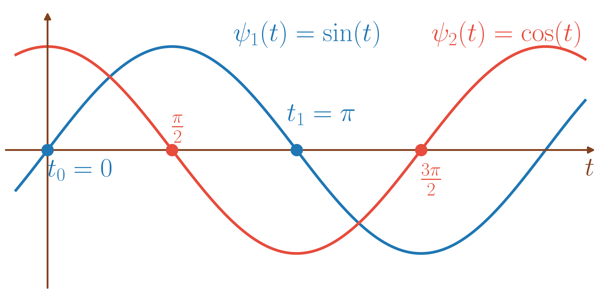
La résolution d’une équation différentielle linéaire scalaire en utilisant les séries entières consiste à
Introduire une série entière \(\sum_{n \geq 0} a_n x^n\) dont on suppose le rayon de convergence \(R > 0.\)
Injecter la fonction somme \(f : x \in \left]-R,R\right[ \mapsto \sum_{n= 0}^{+\infty} a_n x^n\) dans l’équation différentielle.
En déduire une relation sur les coefficients \(\left(a_n\right)_{n \geq 0}\) pour les expliciter.
Vérifier si on a effectivement \(R > 0\) et en déduire une solution (éventuellement sous forme de série entière) de l’équation sur \(\left]-R,R\right[.\)
Cette méthode est particulièrement pertinente lorsque les coefficients de l’équation sont polynomiaux (par exemple \(t x'' + x' + t x = 0\) ou \((1-t^2)x'' - 2tx' + \lambda x = 0\)). La multiplication par \(x^k\) se traduit alors par un simple décalage d’indices dans la somme, ce qui donne une relation de récurrence linéaire exploitable entre les \(a_n.\)
En utilisant les séries entières, déterminer les solutions sur \(\mathbb{R}\) de \[\label{eq:exoc_serie_entiere} \tag{1} t^2x''-(4t+t^3)x'+6x = 0.\]
Considérons une série entière \(\sum_{n \geq 0} a_n x^n\) avec \(\left(a_n\right)_{n \geq 0}\) une suite de réels. On suppose qu’elle est de rayon \(R > 0\) et on introduit \(f: t\in \left]-R,R\right[ \mapsto \sum_{n =0}^{+\infty} a_nt^n.\)
Alors, \(f\) est de classe \(\mathscr{C}^\infty\) (voir le cours sur les séries entières) avec \[\begin{aligned} \forall t \in \left]-R,R\right[, f'(t) & = \sum_{n=1}^{+\infty} n a_n t^{n-1} \\ \text{ donc } tf'(t) & = \sum_{n=1}^{+\infty} n a_n t^{n} \\ \text{ et }t^3f'(t) & = \sum_{n=1}^{+\infty} n a_n t^{n+2} = \sum_{n=3}^{+\infty}(n-2) a_{n-2} t^{n}. \\ \text{puis} & \\ \forall t \in \left]-R,R\right[, f''(t) & = \sum_{n=2}^{+\infty} n(n-1) a_n t^{n-2} \\ \text{ donc } t^2f''(t) & = \sum_{n=2}^{+\infty} n(n-1) a_n t^{n} \\ \end{aligned}\]
Il est bon de mettre chaque terme de l’équation différentielle sous la forme \(\sum_{n=0}^{+\infty} b_n t^n\) (et non \(t^{n\pm k}\)) avant de faire la suite.
On a donc \[\begin{aligned} & \text{$f$ solution de~$\eqref{eq:exoc_serie_entiere}$sur $\left]-R,R\right[$} \\ & \iff \forall t \in \left]-R,R\right[, t^2f''(t)-(4t+t^3)f'(t)+6f(t) = 0 \\ & \iff \forall t \in \left]-R,R\right[, \sum_{n=2}^{+\infty} n(n-1) a_n t^{n}-4\sum_{n=1}^{+\infty} n a_n t^{n}-\sum_{n=3}^{+\infty}(n-2) a_{n-2} t^{n}+6\sum_{n =0}^{+\infty} a_nt^n = 0 \\ & \iff \forall t \in \left]-R,R\right[, \left. \begin{array}{l} \sum_{n=2}^{+\infty} n(n-1) a_n t^{n} \\ - 4\sum_{n=1}^{+\infty} n a_n t^{n} \\ - \sum_{n=3}^{+\infty}(n-2) a_{n-2} t^{n} \\ + 6\sum_{n =0}^{+\infty} a_nt^n \end{array} \right\} = 0 \\ & \iff \forall t \in \left]-R,R\right[, \left. \begin{array}{l} 2a_2t^2+\sum_{n=3}^{+\infty} n(n-1) a_n t^{n} \\ -4a_1t-8a_2t^2- 4\sum_{n=3}^{+\infty} n a_n t^{n} \\ - \sum_{n=3}^{+\infty}(n-2) a_{n-2} t^{n} \\ 6a_0+ 6a_1t+6a_2t^2 + 6\sum_{n =0}^{+\infty} a_nt^n \end{array} \right\} = 0 \\ & \iff \forall t \in \left]-R,R\right[, \left. \begin{array}{l} 6a_0 = 0 \\ 2a_1t = 0 \\ \sum_{n=3}^{+\infty}\left(n(n-1) a_n-4na_n -(n-2) a_{n-2}+6a_n \right)t^{n} \end{array} \right\} = 0 \\ \end{aligned}\]
\(t \mapsto 6a_0 = 0 + 2a_1t = 0 + \sum_{n=3}^{+\infty}\left(n(n-1) a_n-4na_n +(n-2) a_{n-2}+6a_n \right)t^{n}\) constitue une série entière de somme nulle, ce qui ne se produit que si chacun de ses coefficients sont nuls (voir le cours sur les séries entières). On en déduit donc \[\begin{aligned} & \left\{\begin{array}{l} 6a_0 = 0 \\ 2a_1 = 0 \\ \forall n \geq 3, n(n-1) a_n-4na_n -(n-2) a_{n-2}+6a_n = 0 \end{array}\right.\\ \iff & \left\{\begin{array}{l} a_0 =a_1= 0 \\ \forall n \geq 3, (n^2-n-4n+6)a_n = (n-2) a_{n-2} \end{array}\right. \\ \iff & \left\{\begin{array}{l} a_0 =a_1= 0 \\ \forall n \geq 3, \underbrace{(n^2-5n+6)}_{=(n-2)(n-3)}a_n = (n-2) a_{n-2} \end{array}\right. \\ \iff & \left\{\begin{array}{l} a_0 =a_1= 0 \\ \forall n \geq 3, (n-3)a_n = a_{n-2} \end{array}\right. \\ \iff & \left\{\begin{array}{l} a_0 =a_1= 0 \\ \forall n \geq 4, a_{n} = \frac{1}{n-3}a_{n-2} \end{array}\right. \\ \end{aligned}\] On en déduit pour \(n \geq 2,\) \[\begin{aligned} a_{2n+1} & = \frac{1}{2(n-1)}a_{2(n-1)+1} \\ & = \frac{1}{2(n-1)}\frac{1}{2(n-2)} a_{2(n-2)+1} \\ & \vdots \\ & = \frac{1}{2(n-1)}\frac{1}{2(n-2)}\ldots \frac{1}{2} a_3 \\ & = \frac{1}{\underbrace{\left(2(n-1)\right)\times \left(2\right)}_{\substack{\text{termes pairs }\\ \text{de $2$ à $2(n-1)$}}}}a_3 \\ & = \frac{1}{2^{n-1}(n-1)!}a_3 \end{aligned}\] et pour \(n \geq 2,\) \[\begin{aligned} a_{2n} & = \frac{1}{2(n-1)-1}a_{2(n-1)} \\ & = \frac{1}{2(n-1)-1}\frac{1}{2(n-2)-1} a_{2(n-2)} \\ & \vdots \\ & = \frac{1}{2(n-1)-1}\frac{1}{2(n-2)-1}\ldots \frac{1}{3}\frac{1}{1} a_2 \\ & = \frac{1}{\underbrace{\left(2(n-1)-1\right)\times \left(1\right)}_{\substack{\text{termes impairs }\\ \text{de $1$ à $2(n-1)-1$}}}}a_2 \\ & = \frac{1}{\underbrace{\left(2(n-1)-1\right)\times \left(1\right)}_{\substack{\text{termes impairs }\\ \text{de $1$ à $2(n-1)-1$}}}} \frac{\overbrace{2(n-1)\times \left(2\right)}^{\substack{\text{termes pairs }\\ \text{de $1$ à $2(n-1)$}}}}{\underbrace{2(n-1)\times \left(2\right)}_{\substack{\text{termes pairs }\\ \text{de $1$ à $2(n-1)$}}}} a_2 \\ & = \frac{2^{n}(n-1)!}{\left(2(n-1)\right)!}a_2. \end{aligned}\]
On fait alors deux choix :
\(a_2 = 1\) et \(a_3 = 0\) tels que \(\psi_1: t \mapsto \sum_{n=1}^{+\infty} \frac{2^{n}(n-1)!}{\left(2(n-1)\right)!}t^{2n}\) est solution (car \(1 = a_2 = \frac{2^{1}(1-1)!}{\left(2(1-1)\right)!}\)).
Il reste à déterminer \(R.\) On a pour \(t \in \mathbb{R},\) \[\left|\frac{\frac{2^{n+1}n!}{\left(2n\right)!}t^{2(n+1)}}{\frac{2^{n}(n-1)!}{\left(2(n-1)\right)!}t^{2n}}\right| = \frac{1}{2n-1}t^2 \xrightarrow[n \to +\infty]{} 0\] donc \(R = +\infty\) par la règle de d’Alembert et \(\psi_1\) est solution sur \(\mathbb{R}.\)
\(a_2 = 0\) et \(a_3 = 1\) tels que \(\psi_2: t \mapsto \sum_{n=1}^{+\infty} \frac{1}{2^{n-1}(n-1)!}t^{2n+1} = t^3\sum_{n=1}^{+\infty} \frac{1}{2^{n-1}(n-1)!}t^{2(n-1)} = t^3\sum_{n=0}^{+\infty} \frac{1}{2^nn!}t^{2n} = t^3e^{\frac{t^2}{2}}\) est solution (car \(1 = a_3 = \frac{1}{2^{1-1}(1-1)!}\)).
\(R = +\infty\) et \(\psi_2\) est solution sur \(\mathbb{R}.\)
La conclusion n’est pas si simple car \(\eqref{eq:exoc_serie_entiere}\)n’est pas sous forme résolue. En revanche, on a bien \[\varphi \text{ solution de~$\eqref{eq:exoc_serie_entiere}$sur $\mathbb{R}$} \iff \left\{\begin{array}{l} \varphi \text{ solution de~$\eqref{eq:exoc_serie_entiere}$sur $\mathbb{R}^{+\star}$} \\ \varphi \text{ solution de~$\eqref{eq:exoc_serie_entiere}$sur $\mathbb{R}^{-\star}$} \\ \varphi \text{ deux fois dérivable en $0.$} \end{array}\right.\]
\(\eqref{eq:exoc_serie_entiere}\)est sous forme résolue sur \(\mathbb{R}^{+\star}\) et \(\psi_1,\psi_2\) sont solutions sur \(\mathbb{R}^{+\star}\) et linéairement indépendantes donc c’est une base des solutions sur \(\mathbb{R}^{+\star}\) et il existe \(\alpha_1,\alpha_2 \in \mathbb{R}\) tels que \[\forall t > 0, \varphi(t) = \alpha_1 \psi_1(t) +\alpha_2\psi_2(t).\]
De même, il existe \(\beta_1,\beta_2 \in \mathbb{R}\) tels que \[\forall t < 0, \varphi(t) = \beta_1 \psi_1(t) +\beta_2\psi_2(t).\]
Il ne reste plus qu’à contrôler la double-dérivabilité en \(0.\)
Les fonctions \(\psi_1\) et \(\psi_2\) étant développables en série entière sur \(\mathbb{R},\) elles sont de classe \(\mathscr{C}^\infty\) sur \(\mathbb{R}\) et leurs développements limités en \(0\) à l’ordre \(2\) s’écrivent : \(\psi_1(t) = 2t^2 + \underset{t\to 0}{o}(t^2)\) et \(\psi_2(t) = t^3 + \underset{t\to 0}{o}(t^3) = \underset{t\to 0}{o}(t^2).\)
On en déduit les développements limités à droite et à gauche de \(\varphi\) en \(0\) à l’ordre \(2\) : \(\varphi(t) = 2\alpha_1 t^2 + \underset{t\to 0^+}{o}(t^2)\) et \(\varphi(t) = 2\beta_1 t^2 + \underset{t\to 0^-}{o}(t^2).\)
Par unicité du développement limité en \(0,\) \(\varphi\) est deux fois dérivable en \(0\) si et seulement si ses parties régulières à droite et à gauche coïncident jusqu’à l’ordre \(2\) :
Continuité en \(0.\) \(\lim_{t \to 0^+} \varphi(t) = \lim_{t \to 0^-} \varphi(t) = 0,\) donc \(\varphi(0) = 0\) (ce qui n’ajoute aucune condition).
Dérivabilité en \(0.\) les termes de degré \(1\) étant nuls des deux côtés, \(\varphi\) est dérivable en \(0\) avec \(\varphi'(0) = 0\) (ce qui n’ajoute aucune condition).
Double-dérivabilité en \(0.\) l’égalité des termes de degré \(2\) équivaut à \(2\alpha_1 = 2\beta_1 \iff \alpha_1 = \beta_1\) (et alors \(\varphi''(0) = 4\alpha_1\)).
Ainsi, \(\varphi\) est solution de \(\eqref{eq:exoc_serie_entiere}\)sur \(\mathbb{R}\) si et seulement si \(\varphi(0) = 0\) et \(\alpha_1 = \beta_1.\)
Les solutions de \(\eqref{eq:exoc_serie_entiere}\)s’écrivent donc \[\begin{array}{lllll} \varphi & : & \mathbb{R} & \to & \mathbb{R} \\ & & t & \mapsto & \left\{ \begin{array}{ll} \alpha \psi_1(t) + \beta\psi_2(t) & \mbox{ si $t \geq 0$} \\ \alpha \psi_1(t) + \gamma\psi_2(t) & \mbox{ si $t < 0$} \\ \end{array} \right. \end{array} \text{ avec }\alpha,\beta,\gamma \in \mathbb{R}.\]
L’ensemble des solutions sur \(\mathbb{R}\) est donc un espace vectoriel de dimension \(3,\) de base \(\left(\psi_1, \psi_2^+, \psi_2^-\right)\) avec \(\psi_2^+(t) = \begin{cases} \psi_2(t) & \text{si } t \ge 0 \\ 0 & \text{si } t < 0 \end{cases}\) et \(\psi_2^-(t) = \begin{cases} 0 & \text{si } t > 0 \\ \psi_2(t) & \text{si } t \le 0 \end{cases}.\)
Réciproquement, on peut utiliser des équations différentielles pour déterminer des développements en série entière. On explore cette méthode à travers deux exemples.
Soit \(\alpha \in \mathbb{R},\) la fonction \(f_\alpha : t \in \left]-1,1\right[ \mapsto (1+t)^\alpha\) est de classe \(\mathscr{C}^\infty\) avec pour tout \(t \in \left]-1,1\right[,\) \[f_\alpha'(t) = \alpha(1+t)^{\alpha-1} = \frac{\alpha}{1+t}f_\alpha(t) \iff (1+t)f_\alpha'(t) = \alpha f_\alpha(t).\] \(f_\alpha\) est donc solution de l’équation différentielle \[\label{eq:exoc_serie_entiere_alpha} \tag{$1_\alpha$} (1+t)x'-\alpha x = 0.\] sur \(\left]-1,1\right[.\) Cette équation étant sous forme résolue sur \(\left]-1,1\right[,\) on en déduit que \(f_\alpha\) est l’unique solution de \(\eqref{eq:exoc_serie_entiere_alpha}\)telle que \(f_\alpha(0) = 1\) et \(f_\alpha'(0) = \alpha.\) On va déterminer cette solution sous forme de série entière et en déduire le développement en série entière de \(f_\alpha.\)
Considérons une série entière \(\sum_{n \geq 0} a_n x^n\) avec \(\left(a_n\right)_{n \geq 0}\) une suite de réels. On suppose qu’elle est de rayon \(R > 0\) et on introduit \(g: t\in \left]-R,R\right[ \mapsto \sum_{n =0}^{+\infty} a_nt^n.\)
Alors, \(g\) est de classe \(\mathscr{C}^\infty\) (voir le cours sur les séries entières) avec \[\begin{aligned} \forall t \in \left]-R,R\right[, g'(t) & = \sum_{n=1}^{+\infty} n a_n t^{n-1} \\ \text{ donc } tg'(t) & = \sum_{n=1}^{+\infty} n a_n t^{n} \\ \text{ et }g'(t) & = \sum_{n=0}^{+\infty} (n+1) a_{n+1} t^{n} \end{aligned}\] On a donc \[\begin{aligned} & \text{$g$ solution de~$\eqref{eq:exoc_serie_entiere_alpha}$sur $\left]-R,R\right[$} \\ & \iff \forall t \in \left]-R,R\right[, (1+t)g'(t)-\alpha g(t) = 0. \\ & \iff \forall t \in \left]-R,R\right[, \sum_{n=0}^{+\infty} (n+1) a_{n+1} t^{n} \sum_{n=1}^{+\infty} n a_n t^{n} -\alpha \sum_{n =0}^{+\infty} a_nt^n= 0 \\ & \iff \forall t \in \left]-R,R\right[, a_{1} - \alpha a_0 \sum_{n=1}^{+\infty} \left((n-\alpha) a_n +(n+1) a_{n+1}\right)t^{n} = 0 \\ & \iff \left\{ \begin{array}{rl} a_1 & = \alpha a_0 \\ \forall n \geq 1, a_{n+1} = \frac{\alpha-n}{n+1}a_n. \end{array} \right. \end{aligned}\]
On a donc pour tout \(n \geq 1,\) \[\begin{aligned} a_{n+1} & = \frac{\alpha-n}{n+1}a_n \\ & = \frac{\alpha-n}{n+1}\frac{\alpha-(n-1)}{(n+1)n}a_{n-1} \\ & \vdots \\ & = \frac{(\alpha-n)(\alpha-(n-1))\ldots \alpha}{(n+1)!}a_{0} \\ & = \frac{\alpha \ldots (\alpha-n)}{(n+1)!}a_{0}. \\ \end{aligned}\]
On a donc \[\left|\frac{a_{n+1}}{a_n}\right| = \frac{n-\alpha}{n+1} \xrightarrow[n \to +\infty]{}\] donc \(R = 1\) et \(g\) est solution sur \(\left]-1,1\right[.\)
De plus, en prenant \(a_0 = 1\) et \(a_1 = \alpha\) (pour que \(g(0) = 1\) et \(g'(0) = \alpha\)), on a \[\left\{ \begin{array}{rl} a_0 & = 1 \\ a_1 & = \alpha \\ \forall n \geq 1, a_{n} & = \frac{\alpha \ldots (\alpha-n+1)}{n!}. \end{array} \right.\] donc par unicité de la solution au problème de Cauchy, pour tout \(t \in \left]-1,1\right[,\) \[f(t) = \sum_{n=0}^{+\infty}\underbrace{\frac{\alpha \ldots (\alpha-n+1)}{n!}}_{=\binom{\alpha}{n}}t^n\]
On sait que la fonction \(\mathop{\mathrm{Arcsin}}^2\) est développable en série entière sur \(\left]-1,1\right[\) par produit de Cauchy car pour \(t \in \left]-1,1\right[, \mathop{\mathrm{Arcsin}}(t) = \sum_{n=0}^{\infty}\frac{(-1)^n\left(2n\right)!}{n!^22^{2n}(2n+1)}t^{2n+1}\) (voir le cours sur les séries entières).
Seulement voilà, les coefficients sont déjà trop compliqués pour ensuite calculer leur produit de Cauchy. On va donc plutôt utiliser les séries entières. \(f = \mathop{\mathrm{Arcsin}}^2\) est deux fois dérivable sur \(\left]-1,1\right[\) avec \[\begin{aligned} \forall t \in \left]-1,1\right[, f'(t) & = \frac{2}{\sqrt{1-t^2}} \mathop{\mathrm{Arcsin}}(t) \\ f''(t) & = \frac{2}{{1-t^2}} +2\frac{t}{\left(1-t^2\right)^{\tfrac{3}{2}}}\mathop{\mathrm{Arcsin}}(t) \\ & = \frac{1}{{1-t^2}}\left(2+\frac{2}{\sqrt{1-t^2}} \mathop{\mathrm{Arcsin}}(t)\right) \\ & = \frac{1}{{1-t^2}}(2+tf'(t)). \end{aligned}\] \(f\) est donc solution de l’équation différentielle \[\label{eq:exoc_serie_entiere_arcsin} \tag{1} (1-t^2)x''-tx' = 2.\] sur \(\left]-1,1\right[.\) Cette équation étant sous forme résolue sur \(\left]-1,1\right[,\) on en déduit que \(f\) est l’unique solution de \(\eqref{eq:exoc_serie_entiere_arcsin}\)telle que \(f(0) = 0\) et \(f'(0) = 0.\) On va déterminer cette solution sous forme de série entière et en déduire le développement en série entière de \(f.\)
Considérons une série entière \(\sum_{n \geq 0} a_n x^n\) avec \(\left(a_n\right)_{n \geq 0}\) une suite de réels. On suppose qu’elle est de rayon \(R > 0\) et on introduit \(g: t\in \left]-R,R\right[ \mapsto \sum_{n =0}^{+\infty} a_nt^n.\)
Alors, \(g\) est de classe \(\mathscr{C}^\infty\) (voir le cours sur les séries entières) avec \[\begin{aligned} \forall t \in \left]-R,R\right[, g'(t) & = \sum_{n=1}^{+\infty} n a_n t^{n-1} \\ \text{ donc } tg'(t) & = \sum_{n=1}^{+\infty} n a_n t^{n} \\ \forall t \in \left]-R,R\right[, g''(t) & = \sum_{n=2}^{+\infty} n(n-1) a_n t^{n-2} \\ \text{ donc } t^2g''(t) & = \sum_{n=2}^{+\infty} n(n-1) a_n t^{n} \\ \text{ et }g''(t) & = \sum_{n=0}^{+\infty} (n+2)(n+1) a_{n+2} t^{n} \\ \end{aligned}\] On a donc \[\begin{aligned} & \text{$g$ solution de~$\eqref{eq:exoc_serie_entiere_arcsin}$sur $\left]-R,R\right[$} \\ & \iff \forall t \in \left]-R,R\right[, (1-t^2)g''(t)-tg'(t) = 2 \\ & \iff \forall t \in \left]-R,R\right[, \sum_{n=0}^{+\infty} (n+2)(n+1) a_{n+2} t^{n} -\sum_{n=2}^{+\infty} n(n-1) a_n t^{n}- \sum_{n=1}^{+\infty} n a_n t^{n} = 2 \\ & \iff \forall t \in \left]-R,R\right[, \left. \begin{array}{l} 2a_2+(6a_3-a_1)t \\ +\sum_{n=2}^{+\infty}\left((n+2)(n+1) a_{n+2} -n(n-1) a_n- n a_n\right)t^n \end{array} \right\}= 2 \\ & \iff \forall t \in \left]-R,R\right[, 2a_2+(6a_3-a_1)t +\sum_{n=2}^{+\infty}\left((n+2)(n+1) a_{n+2} -n^2 a_n\right)t^n \end{aligned}\]
En ajoutant \(g(0) = 0\) et \(g'(0) = 1\) on a donc \[\left\{ \begin{array}{ll} a_0 & = 0 \\ a_1 & = 0 \\ 2a_2 & = 2 \iff a_2 = 1 \\ 6a_3-a_1 & = 0 \iff a_3 = \frac{a_1}{6} =0 \\ \forall n \geq 2, a_{n+2}& = \frac{n^2}{(n+2)(n+1)}a_n. \end{array} \right.\]
On en déduit donc pour \(n \geq 2,\) \[a_{2n+1} = \text{un truc} \times a_{2(n-1)+1} = \text{un autre truc} \times a_{2(n-2)+1} = \ldots= \text{un dernier truc} \times a_3 = 0.\] (pas étonnant, la fonction est paire donc les termes impairs sont nuls). Puis, pour \(n \geq 2,\) \[\begin{aligned} a_{2n} &=\frac{\left(2(n-1)\right)^2}{(2n)(2n-1)}a_{2(n-1)}\\ &=\frac{\left(2(n-1)\right)^2}{(2n)(2n-1)}\frac{\left(2(n-2)\right)^2}{2(n-1)(2n-3)} a_{2(n-2)}\\ &=\cdots\\ &=\frac{\left(2(n-1)\right)^2}{(2n)(2n-1)} \times\cdots\times \frac{2^2}{4\times3}a_2 \\ & = \frac{\left(\text{termes de $2(n-1)$ à $2$}^2\right)}{\tfrac{(2n)!}{2}}a_2 \\ & = \frac{2\left(2^{n-1}(n-1)!\right)^2}{(2n)!}a_2 \\ & = \frac{2^{2n-1}((n-1)!)^2}{(2n)!}. \end{aligned}\] Donc pour tout \(t \in \left]-1,1\right[,\) \[\mathop{\mathrm{Arcsin}}^2(t) = \sum_{n=1}^{+\infty} \frac{2^{2n-1}((n-1)!)^2}{(2n)!}t^{2n}.\]
On présente cette notion sous forme d’exercices.
On considère \[\label{eq:exoc_chgt_var_ln} \tag{H} 4t^2x''-12tx'+15x = 0.\]
A l’aide du changement de variable \(u = \ln(t),\) résoudre \(\eqref{eq:exoc_chgt_var_ln}\)sur \(\mathbb{R}^{+\star}.\)
Déterminer les solutions de \(\eqref{eq:exoc_chgt_var_ln}\)sur \(\mathbb{R}^{-\star}.\)
En déduire les solutions de \(\eqref{eq:exoc_chgt_var_ln}\)sur \(\mathbb{R}.\)
Soit \(\varphi : \mathbb{R}^{+\star}\to \mathbb{R}\) deux fois dérivables. On pose telle que pour tout \(t \in \mathbb{R}^{+\star},\) \(\varphi(t) = y(\ln t)\) ie \(y : u \in \mathbb{R}\mapsto \varphi(e^u).\) Alors, \(y\) est deux fois dérivable par composition et de plus, \[\begin{aligned} \forall t \in \mathbb{R}, \varphi'(t) &= \frac{1}{t}y'(\ln t) \\ \varphi''(t) &= -\frac{1}{t^2}y'(\ln t)+\frac{1}{t^2}y''(\ln t) \end{aligned}\]
On a donc \[\begin{aligned} \text{$\varphi$ solution de~$\eqref{eq:exoc_chgt_var_ln}$} & \iff \forall t \in \mathbb{R}^{+\star}, 4t^2\varphi''(t)-12t\varphi'(t)+15\varphi(t) = 0 \\ & \iff \forall t \in \mathbb{R}^{+\star}, -4y'(\ln t)+4y''(\ln t)-12y'(\ln t)+15y(\ln t)= 0 \\ & \iff \forall u \in \mathbb{R}, 4y''(u)-16y'(u)+15y(u) = 0 \text{ car $\ln : \mathbb{R}^{+\star}\to \mathbb{R}$ est une bijection.} \\ & \iff \text{$y$ est solution de $(H'): 4y''-16y'+15y = 0 $ sur $\mathbb{R}.$} \end{aligned}\]
Or, \((H')\) est à coefficients constants, on s’intéresse donc à son polynôme caractéristique \(P = 4X^2-16X+15.\) Son discriminant est \(\Delta = 16^2-4\times 4 \times 15 = 16(16-15) = 16\) et il admet donc les deux racines \(\frac{16-4}{8} = \frac{3}{2}\) et \(\frac{16+4}{8} = \frac{5}{2}\) tel que \(P = 4\left(X-\frac{3}{2}\right)\left(X-\frac{5}{2}\right).\)
On sait donc que l’ensemble des solutions de \((H'): 4y''-16y'+15y = 0\) sur \(\mathbb{R}\) est \(\mathop{\mathrm{Vect}}(u \in \mathbb{R}\mapsto e^{\tfrac{3}{2}u},u \in \mathbb{R}\mapsto e^{\tfrac{5}{2}u}).\)
On en déduit que l’ensemble des solutions de \(\eqref{eq:exoc_chgt_var_ln}\)sur \(\mathbb{R}^{+\star}\) est \(\mathop{\mathrm{Vect}}(t \in \mathbb{R}^{+\star}\mapsto t^{\tfrac{3}{2}},t \in \mathbb{R}^{+\star}\mapsto t^{\tfrac{5}{2}}).\)
On peut procéder au changement de variable \(u = \ln(-t)\) pour \(t \in \mathbb{R}^{-\star}\) et on obtient de même que précédemment l’ensemble des solutions de \(\eqref{eq:exoc_chgt_var_ln}\)sur \(\mathbb{R}^{-\star}\) qui s’écrit \(\mathop{\mathrm{Vect}}(t \in \mathbb{R}^{-\star}\mapsto \left(-t\right)^{\tfrac{3}{2}},t \in \mathbb{R}^{+\star}\mapsto \left(-t\right)^{\tfrac{5}{2}}).\)
\(\eqref{eq:exoc_chgt_var_ln}\)n’est pas sous forme résolue sur \(\mathbb{R}\) mais \[\varphi \text{ solution de~$\eqref{eq:exoc_chgt_var_ln}$sur $\mathbb{R}$} \iff \left\{\begin{array}{l} \varphi \text{ solution de~$\eqref{eq:exoc_chgt_var_ln}$sur $\mathbb{R}^{+\star}$} \\ \varphi \text{ solution de~$\eqref{eq:exoc_chgt_var_ln}$sur $\mathbb{R}^{-\star}$} \\ \varphi \text{ deux fois dérivable en $0.$} \end{array}\right.\]
\(\eqref{eq:exoc_chgt_var_ln}\)est sous forme résolue sur \(\mathbb{R}^{+\star}\) donc il existe \(\alpha_1,\alpha_2 \in \mathbb{R}\) tels que \[\forall t > 0, \varphi(t) = \alpha_1 t^{\tfrac{3}{2}} +\alpha_2t^{\tfrac{5}{2}}.\]
De même, il existe \(\beta_1,\beta_2 \in \mathbb{R}\) tels que \[\forall t < 0, \varphi(t) = \beta_1 (-t)^{\tfrac{3}{2}} +\beta_2(-t)^{\tfrac{5}{2}}.\]
On prolonge \(\varphi\) par continuité en posant \(\varphi(0) = 0 = \lim_{t \to 0^+} \varphi(t) = 0\) et \(\lim_{t \to 0^-} \varphi(t).\)
Il reste à vérifier que \(\varphi\) est deux fois dérivable en \(0.\)
Dérivabilité en \(0\) : On étudie la limite du taux d’accroissement en \(0\) à droite et à gauche : \[\begin{aligned} \frac{\varphi(t) - \varphi(0)}{t - 0} &= \alpha_1 t^{\tfrac{1}{2}} + \alpha_2 t^{\tfrac{3}{2}} \xrightarrow[t \to 0^+]{} 0, & \frac{\varphi(t) - \varphi(0)}{t - 0} &= -\beta_1 (-t)^{\tfrac{1}{2}} - \beta_2 (-t)^{\tfrac{3}{2}} \xrightarrow[t \to 0^-]{} 0. \end{aligned}\] Les limites à droite et à gauche sont finies et égales : \(\varphi\) est donc dérivable en \(0\) avec \(\varphi'(0) = 0.\)
Dérivabilité seconde en \(0\) : Pour \(t \neq 0,\) on dérive l’expression de \(\varphi\) : \[\begin{aligned} \forall t > 0,\; \varphi'(t) &= \tfrac{3}{2}\alpha_1 t^{\tfrac{1}{2}} + \tfrac{5}{2}\alpha_2 t^{\tfrac{3}{2}}, & \forall t < 0,\; \varphi'(t) &= -\tfrac{3}{2}\beta_1 (-t)^{\tfrac{1}{2}} - \tfrac{5}{2}\beta_2 (-t)^{\tfrac{3}{2}}. \end{aligned}\] On forme alors le taux d’accroissement de \(\varphi'\) en \(0\) : \[\begin{aligned} \frac{\varphi'(t) - \varphi'(0)}{t - 0} &= \tfrac{3}{2}\alpha_1 t^{-\tfrac{1}{2}} + \tfrac{5}{2}\alpha_2 t^{\tfrac{1}{2}}, & \frac{\varphi'(t) - \varphi'(0)}{t - 0} &= \tfrac{3}{2}\beta_1 (-t)^{-\tfrac{1}{2}} + \tfrac{5}{2}\beta_2 (-t)^{\tfrac{1}{2}}. \end{aligned}\] Or, \(t^{-\tfrac{1}{2}} \xrightarrow[t \to 0^+]{} +\infty\) et \((-t)^{-\tfrac{1}{2}} \xrightarrow[t \to 0^-]{} +\infty.\) Pour que ces taux admettent une limite finie en \(0,\) il faut et il suffit que les termes divergents s’annulent, soit \(\alpha_1 = 0\) et \(\beta_1 = 0.\) Sous cette condition, \(\varphi''(0) = 0.\)
Ainsi, les solutions sur \(\mathbb{R}\) sont exactement les fonctions \[\begin{array}{lllll} \varphi & : & \mathbb{R} & \to & \mathbb{R} \\ & & t & \mapsto & \left\{ \begin{array}{ll} \alpha t^{\tfrac{5}{2}} & \mbox{ si $t \geq 0$} \\ \beta (-t)^{\tfrac{5}{2}} & \mbox{ si $t < 0.$} \end{array} \right. \end{array}\] avec \(\alpha,\beta \in \mathbb{R}\) (et l’ensemble des solutions et de dimension \(2\)).
On considère sur \(I = \left]-\frac{\pi}{2}, \frac{\pi}{2}\right[\) l’équation différentielle \[\label{eq:exoc_chgt_var_sin} \tag{H} x'' + \tan(t)x' + \cos^2(t)x = 0.\]
À l’aide du changement de variable \(u = \sin(t),\) résoudre \(\eqref{eq:exoc_chgt_var_sin}\)sur \(I.\)
Soit \(\varphi : I \to \mathbb{R}\) deux fois dérivable. On pose pour tout \(t \in I,\) \(\varphi(t) = y(\sin t)\) ie \(y : u \in ]-1,1[ \mapsto \varphi(\mathop{\mathrm{Arcsin}}u).\) Alors, \(y\) est deux fois dérivable par composition (\(\mathop{\mathrm{Arcsin}}\) étant \(\mathcal{C}^\infty\) sur \(]-1,1[\)) et de plus, \(\begin{aligned} \forall t \in I,\; \varphi'(t) &= \cos(t)y'(\sin t) \\ \varphi''(t) &= -\sin(t)y'(\sin t) + \cos^2(t)y''(\sin t) \end{aligned}\)
On a donc (puisque \(\cos(t) \neq 0\) sur \(I\) et \(\tan(t)\cos(t) = \sin(t)\)) : \(\begin{aligned} \text{$\varphi$ solution de~$\eqref{eq:exoc_chgt_var_sin}$} & \iff \forall t \in I,\; \varphi''(t) + \tan(t)\varphi'(t) + \cos^2(t)\varphi(t) = 0 \\ & \iff \forall t \in I,\; -\sin(t)y'(\sin t) + \cos^2(t)y''(\sin t) + \sin(t)y'(\sin t) + \cos^2(t)y(\sin t) = 0 \\ & \iff \forall t \in I,\; \cos^2(t)\left(y''(\sin t) + y(\sin t)\right) = 0 \\ & \iff \forall u \in ]-1,1[,\; y''(u) + y(u) = 0 \substack{\text{ car $\sin : I \to ]-1,1[$ est une bijection}\\\text{ et $\cos^2(t) > 0.$}} \\ & \iff \text{$y$ est solution de $(H') : y'' + y = 0$ sur $]-1,1[.$} \end{aligned}\)
Or, \((H')\) est à coefficients constants, on s’intéresse donc à son polynôme caractéristique \(P = X^2 + 1.\) Ses racines complexes sont \(i\) et \(-i.\)
On sait donc que l’ensemble des solutions réelles de \((H') : y'' + y = 0\) sur \(]-1,1[\) est \(\mathop{\mathrm{Vect}}(u \in ]-1,1[ \mapsto \cos(u), u \in ]-1,1[ \mapsto \sin(u)).\)
On en déduit que l’ensemble des solutions de \(\eqref{eq:exoc_chgt_var_sin}\)sur \(I\) est \(\mathop{\mathrm{Vect}}\left(t \in I \mapsto \cos(\sin t), t \in I \mapsto \sin(\sin t)\right).\)
La méthode d’abaissement de l’ordre pour une équation différentielle homogène scalaire d’ordre \(2\) consiste, après avoir trouvé une première solution \(\psi_1\) (qui est évidente ou en utilisant une des méthodes précédentes), à en chercher une autre sous la forme \(\psi_2: t \in I \mapsto \alpha(t) \psi_1(t)\) avec \(\alpha: I \to \mathbb{K}\) \(2\) fois dérivable. On tombe alors ensuite sur une deuxième équation différentielle, d’ordre 1 que l’on peut résoudre pour déterminer \(\psi_2\) (d’où le nom de la méthode!).
On considère \[\label{eq:exoc_absissement_ordre} \tag{H} (1+t^2)x''-2x=0.\]
Montrer qu’il existe un polynôme de degré \(2\) solution de \(\eqref{eq:exoc_absissement_ordre}\)sur \(\mathbb{R}.\)
A l’aide de la méthode de l’abaissement de l’ordre, déterminer une base de solutions de \(\eqref{eq:exoc_absissement_ordre}\)sur \(\mathbb{R}.\)
Soient \(a,b,c \in \mathbb{R}\) et \(\psi_1: t \in \mathbb{R}\mapsto at^2+bt+c.\)
Alors, \[\begin{aligned} \text{$\psi_1$ solution de~$\eqref{eq:exoc_absissement_ordre}$sur $\mathbb{R}$} & \iff \forall t \in \mathbb{R}, (1+t^2)\psi_1''(t)-2\psi_1(t) = 0 \\ & \iff\forall t \in \mathbb{R}, 2a(1+t^2)-2at^2-2bt-2c =0 \\ & \iff -2bt +2(a-c) = 0 \\ & \iff b=0 \text{ et }a=c. \end{aligned}\] Donc on peut considérer \(\psi_1: t \in \mathbb{R}\mapsto t^2+1.\)
On cherche maintenant une seconde solution sous la forme \(\psi_2 : t \in \mathbb{R}\mapsto \alpha(t) \psi_1(t)\) avec \(\alpha\) deux fois dérivables. On a alors \[\begin{aligned} \forall t \in \mathbb{R}, \psi_2'(t) & = \alpha'(t) \psi_1(t) + \alpha(t) \psi_1'(t) \\ \psi_2''(t) & = \alpha''(t) \psi_1(t) + 2\alpha'(t) \psi_1'(t) +\alpha(t) \psi_1''(t). \end{aligned}\] Donc \[\begin{aligned} &\text{$\psi_2$ solution de~$\eqref{eq:exoc_absissement_ordre}$sur $\mathbb{R}$} \\ & \iff \forall t \in \mathbb{R}, (1+t^2)\psi_2''(t)-2\psi_2(t) = 0 \\ & \iff \forall t \in \mathbb{R}, \alpha(t)\underbrace{\left((1+t^2)\psi_1''(t)-2\psi_1(t)\right)}_{=0} + (1+t^2)\alpha''(t) \psi_1(t)+2(1+t^2)\alpha'(t) \psi_1'(t)= 0 \\ \end{aligned}\] or, pour \(t \in \mathbb{R},\) \((1+t^2)\psi_1(t) = (1+t^2)^2\) et \(2(1+t^2)\psi_1'(t) = 4t(1+t^2)\) donc \[\begin{aligned} &\text{$\psi_2$ solution de~$\eqref{eq:exoc_absissement_ordre}$sur $\mathbb{R}$} \\ & \iff \forall t \in \mathbb{R}, (1+t^2)^2\alpha''(t)+4t(1+t^2)\alpha'(t) = 0 \\ & \iff \text{$\alpha$ solution de $(H'): (1+t^2)^2x''+4t(1+t^2)x' = 0$ sur $\mathbb{R}$} \\ & \iff \text{$\alpha'$ solution de $(H''): (1+t^2)^2x'+4t(1+t^2)x = 0$ sur $\mathbb{R}$} \\ & \iff \text{$\alpha'$ solution de $(H'''): x'+4\frac{t}{1+t^2}x = 0$ sur $\mathbb{R}$} \end{aligned}\]
Or, \((H'''): x'+4\frac{t}{1+t^2}x = 0\) est homogène d’ordre \(1\) et \(t \mapsto 4\frac{t}{1+t^2}\) se primitive par \(t \mapsto 2\ln(1+t^2)\) donc ses solutions s’écrivent \(t \mapsto Ce^{-2\ln(1+t^2)} = \frac{C}{(1+t^2)^2}\) avec \(C \in \mathbb{R}.\)
On choisit \(C = 2\) pour simplifier les calculs ultérieurs (on cherche une solution particulière \(\alpha,\) non nulle). On a donc \(\alpha'(t) = \frac{2}{(1+t^2)^2}.\)
Pour primitiver cette fonction, on réalise une intégration par parties sur \(\int_0^t \frac{1}{1+s^2}\,\mathrm{d}s\) avec \(\left\{\begin{array}{ll} u(s)& = \frac{1}{1+s^2} \\ v(s) & = s \end{array}\right. \Longrightarrow \left\{\begin{array}{ll} u'(s)& = \mathop{\mathrm{Arctan}}(s) \\ v'(s) & = 1 \end{array}\right.\) telle que \[\begin{aligned} \mathop{\mathrm{Arctan}}(t) = \int_0^t \frac{1}{1+s^2}\,\mathrm{d}s &= \left[ \frac{s}{1+s^2} \right]_0^t - \int_0^t s \frac{-2s}{(1+s^2)^2}\,\mathrm{d}s \\ &= \frac{t}{1+t^2} + 2\int_0^t \frac{s^2}{(1+s^2)^2}\,\mathrm{d}s \\ &= \frac{t}{1+t^2} + 2\int_0^t \frac{(1+s^2) - 1}{(1+s^2)^2}\,\mathrm{d}s \\ &= \frac{t}{1+t^2} + 2\mathop{\mathrm{Arctan}}(t) - \int_0^t \frac{2}{(1+s^2)^2}\,\mathrm{d}s. \end{aligned}\] On en déduit que : \[\int_0^t \frac{2}{(1+s^2)^2}\,\mathrm{d}s = \mathop{\mathrm{Arctan}}(t) + \frac{t}{1+t^2}.\] Ainsi, la fonction \(\alpha : t \in \mathbb{R}\mapsto \mathop{\mathrm{Arctan}}(t) + \frac{t}{1+t^2}\) convient.
On obtient alors la seconde solution : \[\psi_2 : t \in \mathbb{R}\mapsto \alpha(t)\psi_1(t) = (1+t^2)\mathop{\mathrm{Arctan}}(t) + t.\]
Conclusion : L’équation \(\eqref{eq:exoc_absissement_ordre}\)est une équation différentielle linéaire homogène d’ordre \(2\) résolue en \(x''\) (car \(\forall t \in \mathbb{R}, 1+t^2 \neq 0\)), donc l’ensemble de ses solutions sur \(\mathbb{R}\) est un \(\mathbb{R}\)-espace vectoriel de dimension \(2.\)
De plus, la famille \((\psi_1, \psi_2)\) est libre. En effet, si \(\lambda_1 \psi_1 + \lambda_2 \psi_2 = 0,\) alors :
en évaluant en \(t = 0,\) on obtient \(\lambda_1 \psi_1(0) + \lambda_2 \psi_2(0) = \lambda_1 \cdot 1 + \lambda_2 \cdot 0 = 0,\) d’où \(\lambda_1 = 0\) ;
en évaluant ensuite en \(t = 1,\) on a \(\lambda_2 \psi_2(1) = \lambda_2 \left(\frac{\pi}{2} + 1\right) = 0,\) d’où \(\lambda_2 = 0.\)
La famille \((\psi_1, \psi_2)\) étant libre de cardinal \(2\) dans un espace de dimension \(2,\) elle forme une base de solutions de \(\eqref{eq:exoc_absissement_ordre}\)sur \(\mathbb{R}.\)
On considère \[\label{eq:exoc_absissement_ordre_2} \tag{H} t^2(1-t)x''-t(1+t)x'+x=0.\]
Déterminer une première solution de \(\eqref{eq:exoc_absissement_ordre_2}\)sur \(\left]-\infty,1\right[\) et \(\left]1,+\infty\right[\) en utilisant les séries entières.
Déterminer une seconde solution sur \(\left]-\infty,1\right[, \left]0,1\right[\) et \(\left]1,+\infty\right[\) en utilisant la méthode de l’abaissement de l’ordre.
Montrer que seule la fonction nulle est solution de \(\eqref{eq:exoc_absissement_ordre_2}\)sur \(\mathbb{R}.\)
Considérons une série entière \(\sum_{n \geq 0} a_n x^n\) avec \(\left(a_n\right)_{n \geq 0}\) une suite de réels. On suppose qu’elle est de rayon \(R > 0\) et on introduit \(f: t\in \left]-R,R\right[ \mapsto \sum_{n =0}^{+\infty} a_nt^n.\)
Alors, \(f\) est de classe \(\mathscr{C}^\infty\) (voir le cours sur les séries entières) avec \[\begin{aligned} \forall t \in \left]-R,R\right[, f'(t) & = \sum_{n=1}^{+\infty} n a_n t^{n-1} \\ \text{ donc } tf'(t) & = \sum_{n=1}^{+\infty} n a_n t^{n} \\ \text{ et }t^2f'(t) & = \sum_{n=1}^{+\infty} n a_n t^{n+1} = \sum_{n=2}^{+\infty}(n-1) a_{n-1} t^{n}. \\ \text{puis} & \\ \forall t \in \left]-R,R\right[, f''(t) & = \sum_{n=2}^{+\infty} n(n-1) a_n t^{n-2} \\ \text{ donc } t^2f''(t) & = \sum_{n=2}^{+\infty} n(n-1) a_n t^{n} \\ \text{ et }t^3f''(t) & = \sum_{n=2}^{+\infty} n(n-1) a_n t^{n+1} = \sum_{n=3}^{+\infty} (n-1)(n-2) a_{n-1} t^{n} \end{aligned}\] On a donc \[\begin{aligned} & \text{$f$ solution de~$\eqref{eq:exoc_absissement_ordre_2}$sur $\left]-R,R\right[$} \\ & \iff \forall t \in \left]-R,R\right[, t^2(1-t)f''(t)-t(1+t)f'(t)+f(t) = 0 \\ & \iff \forall t \in \left]-R,R\right[, t^2f''(t)-t^3f''(t)-tf'(t)-t^2f'(t)+f(t) = 0 \\ & \iff \forall t \in \left]-R,R\right[, \left. \begin{array}{l} \sum_{n=2}^{+\infty} n(n-1) a_n t^{n} \\ - \sum_{n=3}^{+\infty} (n-1)(n-2) a_{n-1} t^{n} \\ - \sum_{n=1}^{+\infty} n a_n t^{n} \\ - \sum_{n=2}^{+\infty}(n-1) a_{n-1} t^{n} \\ + \sum_{n =0}^{+\infty} a_nt^n \end{array} \right\} = 0 \\ & \iff \forall t \in \left]-R,R\right[, \left. \begin{array}{l} 2a_2t^2 + \sum_{n=3}^{+\infty} n(n-1) a_n t^{n} \\ - \sum_{n=3}^{+\infty} (n-1)(n-2) a_{n-1} t^{n} \\ -a_1t-2a_2t^2- \sum_{n=3}^{+\infty} n a_n t^{n} \\ -a_1t^2- \sum_{n=3}^{+\infty}(n-1) a_{n-1} t^{n} \\ a_0+a_1t+a_2t^2+ \sum_{n =3}^{+\infty} a_nt^n \end{array} \right\} = 0 \\ & \iff \forall t \in \left]-R,R\right[, \left. \begin{array}{l} a_0+(a_2-a_1)t^2 + \\ \sum_{n=3}^{+\infty}\left( n(n-1) a_n-(n-1)(n-2) a_{n-1}-na_n-(n-1) a_{n-1}+ a_n\right) t^{n} \end{array} \right\} = 0 \\ & \iff \forall t \in \left]-R,R\right[, a_0+(a_2-a_1)t^2 + \sum_{n=3}^{+\infty}\left(n-1\right)^2(a_n-a_{n-1}) t^{n}= 0 \\ & \quad \quad \text{car $\substack{n(n-1)-n+1 = n(n-1)-(n-1) = (n-1)^2 \\ \text{ et }-(n-1)(n-2)-(n-1) = -(n-1)(n-2+1) = -(n-1)^2}$} \\ \end{aligned}\]
On a donc
\(a_0 = 0,\)
\(a_1 = a_2,\)
\(\forall n \geq 0, a_n = a_{n-1}\)
donc pour tout \(t \in \left]-R,R\right[\) \[f(t) = a_1\sum_{n=1}^{+\infty}t^n = \frac{a_1t}{1-t}\] et \(R=1.\)
Bien que le développement en série entière n’y soit plus valable, on peut mener calculs et montrer que \(\psi_1 : t \mapsto \frac{t}{1-t}\) est solution sur \(\left]-\infty,1\right[\) et \(\left]1,+\infty\right[.\)
Contrairement à l’exercice [exoc:serie_entieres], on ne trouve pas deux solutions indépendantes de l’équation. C’est pourquoi on utilise ensuite l’abaissement de l’ordre.
On cherche une seconde solution sous la forme \(\psi_2 : t \neq 1 \mapsto \alpha(t)\psi_1(t) = \frac{t\alpha(t)}{1-t}\) avec \(\alpha\) deux fois dérivables.
On a alors \(\psi_2\) deux fois dérivables et \[\begin{aligned} \forall t \neq 1, \psi_2'(t) & = \alpha'(t)\psi_1(t)+\alpha(t)\psi_1'(t) \\ \psi_2''(t) & = \alpha''(t)\psi_1(t)+2\alpha'(t)\psi_1'(t)+\alpha(t)\psi_1''(t). \end{aligned}\] On en déduit alors, en notant \(J = \left]-\infty,1\right[, \left]0,1\right[\) ou \(\left]1,+\infty\right[\) \[\begin{aligned} & \text{$\psi_2$ solution de~$\eqref{eq:exoc_absissement_ordre_2}$sur $J$} \\ & \iff \forall t \in J, t^2(1-t)\psi_2''(t)-t(1+t)\psi_2'(t)+\psi_2(t) = 0 \\ & \iff \forall t \in J, \left. \begin{array}{l} \alpha(t)\underbrace{\left( t^2(1-t)\psi_1''(t)-t(1+t)\psi_1'(t)+\psi_1(t)\right)}_{=0} \\ +\alpha'(t)\left(2t^2(1-t)\psi_1'(t)-t(1+t)\psi_1(t)\right) \\ +\alpha''(t)t^2(1-t)\psi_1(t) \end{array} \right\} = 0 \\ & \iff \alpha \text{solution de $(H'): t^2(1-t)\psi_1(t)x''+\left(2t^2(1-t)\psi_1'(t)-t(1+t)\psi_1(t)\right)x' =0$ sur $J$} \\ \end{aligned}\]
Or, pour tout \(t \in J,\) \[\begin{aligned} \psi_1(t) & = \frac{t}{1-t} = \frac{t-1+1}{1-t} = -1+\frac{1}{1-t} \\ \psi'_1(t) & = \frac{1}{(1-t)^2} \\ t^2(1-t)\psi_1(t) & = t^3 \\ 2t^2(1-t)\psi_1'(t) & = \frac{2t^2}{1-t} \\ t(1+t)\psi_1(t) & = \frac{t^2(1+t)}{1-t} = \frac{t^2+t^3}{1-t} \\ 2t^2(1-t)\psi_1'(t)-(1+t)\psi_1(t) & = \frac{2t^2}{1-t}-\frac{t^2+t^3}{1-t} \\ & = \frac{t^2-t^3}{1-t} = \frac{t^2(1-t)}{1-t} = t^2 \end{aligned}\] donc \[\begin{aligned} & \text{$\psi_2$ solution de~$\eqref{eq:exoc_absissement_ordre_2}$sur $J$} \\ & \iff \alpha \text{ solution de $(H'): t^3x''+t^2x' =0$ sur $J$} \\ & \iff \alpha' \text{ solution de $(H'): t^3x'+t^2x =0$ sur $J$} \\ \end{aligned}\]
Or, \((H'): t^3x'+t^2x =0\) est sous forme résolue sur \(\mathbb{R}^{-\star}\) et \(\mathbb{R}^{+\star}\) et équivalente à \((H'): x'+ \frac{1}{t}x =0.\)
C’est une équation homogène dont les solutions s’écrivent \(t \in J \mapsto Ce^{-\ln \left|t\right|} = \frac{C}{ \left|t\right|}\) avec \(C \in \mathbb{R}.\)
On a donc en intégrant et prenant \(C=1\) et la constante d’intégration égale à \(0,\) on sélectionne \(\alpha : t \in J \mapsto \ln\left|t\right|\) et donc \(\psi_2 : t\in J \mapsto t \frac{\ln\left|t\right|}{1-t}.\)
Soit \(\varphi : \mathbb{R}\to \mathbb{R}\) une fonction deux fois dérivable sur \(\mathbb{R},\)\[\varphi \text{ solution de~$\eqref{eq:exoc_absissement_ordre_2}$sur } \mathbb{R} \iff \left\{\begin{array}{l} \varphi \text{ solution de~$\eqref{eq:exoc_absissement_ordre_2}$sur } \left]-\infty,0\right[, \\ \varphi \text{ solution de~$\eqref{eq:exoc_absissement_ordre_2}$sur } \left]0,1\right[, \\ \varphi \text{ solution de~$\eqref{eq:exoc_absissement_ordre_2}$sur } \left]1,+\infty\right[, \\ \varphi \text{ deux fois dérivable en } 0 \text{ et en } 1. \end{array}\right.\] D’après les calculs précédents, comme l’équation \(\eqref{eq:exoc_absissement_ordre_2}\)est sous forme résolue sur \(\left]-\infty,0\right[,\) \(\left]0,1\right[\) et \(\left]1,+\infty\right[,\) il existe des constantes réelles \(\alpha_1, \alpha_2, \beta_1, \beta_2, \gamma_1, \gamma_2\) telles que :
\(\forall t \in \left]-\infty,0\right[, \quad \varphi(t) = \alpha_1 \frac{t\ln(-t)}{1-t}+\alpha_2\frac{t}{1-t},\)
\(\forall t \in \left]0,1\right[, \quad \varphi(t) = \beta_1 \frac{t\ln(t)}{1-t}+\beta_2\frac{t}{1-t},\)
\(\forall t \in \left]1,+\infty\right[, \quad \varphi(t) = \gamma_1 \frac{t\ln(t)}{1-t}+\gamma_2\frac{t}{1-t}.\)
Il reste à traduire les conditions de régularité aux points singuliers \(0\) et \(1,\) ce qui va imposer des relations sur ces constantes.
En \(t = 1\) (continuité). \(\varphi\) étant continue en \(1,\) elle admet une limite finie lorsque \(t \to 1^-\) et lorsque \(t \to 1^+.\) Or, \(\lim_{t \to 1} t\ln(t) = 0\) tandis que \(\frac{t}{1-t} \to \pm\infty.\) Pour éviter l’explosion du dénominateur \((1-t),\) il est nécessaire que \(\beta_2 = 0\) et \(\gamma_2 = 0.\) Par passage à la limite, on obtient alors \(\varphi(1) = -\beta_1 = -\gamma_1\) et \(\beta_1 = \gamma_1.\)
En \(t = 0\) (continuité et dérivabilité). Par croissances comparées, \(\lim_{t \to 0} \varphi(t) = 0,\) donc \(\varphi(0) = 0.\) Le taux d’accroissement en \(0\) vaut alors : \[\forall t \in \left]0,1\right[, \quad \frac{\varphi(t) - \varphi(0)}{t} = \frac{\beta_1 \ln(t)}{1-t} \qquad \text{et} \qquad \forall t \in \left]-\infty,0\right[, \quad \frac{\varphi(t) - \varphi(0)}{t} = \frac{\alpha_1 \ln(-t) + \alpha_2}{1-t}.\] Comme \(\ln|t| \to -\infty\) lorsque \(t \to 0,\) l’existence d’une dérivée finie en \(0\) impose \(\beta_1 = 0\) et \(\alpha_1 = 0.\) L’égalité des dérivées à gauche et à droite donne ensuite \(\varphi'(0) = \alpha_2 = 0.\)
Conclusion. On a obtenu \(\alpha_1 = \alpha_2 = 0\) et \(\beta_1 = \beta_2 = 0.\) Enfin, comme \(\gamma_1 = \beta_1 = 0\) et \(\gamma_2 = 0,\) toutes les constantes sont nulles : \[\alpha_1 = \alpha_2 = \beta_1 = \beta_2 = \gamma_1 = \gamma_2 = 0.\] La fonction nulle vérifiant bien l’équation \(\eqref{eq:exoc_absissement_ordre_2}\)sur \(\mathbb{R},\) on conclut que c’est la seule solution sur \(\mathbb{R}.\)